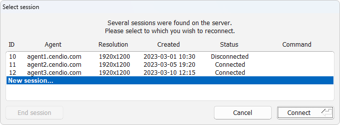
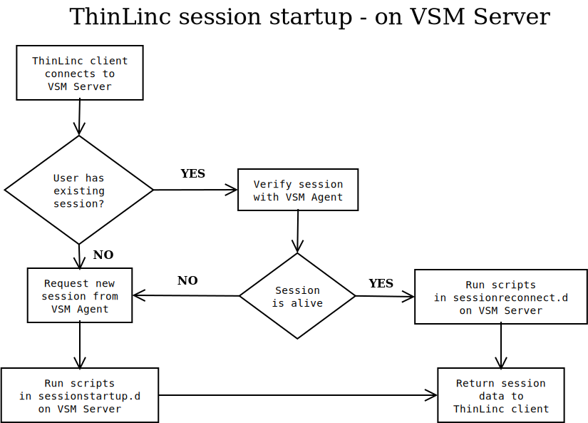
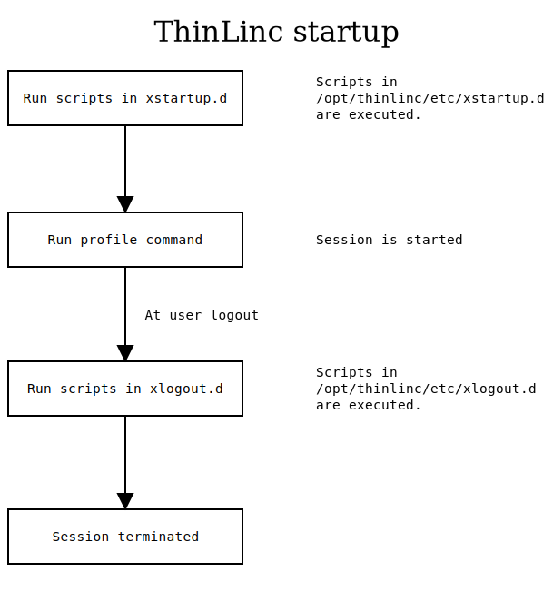

ThinLinc is a software that provides remote Linux desktop access by
combining proprietary code with open-source projects like TigerVNC,
noVNC and OpenSSH. The core purpose of the software is to securely grant
graphical access to Linux machines. The ThinLinc software also works
closely with the existing Linux system to utilize it’s already well
established ecosystem.
Our hope is that ThinLinc will help make Linux more accessible for
people in their everyday lives.
This chapter describes the high-level components that constitute a
ThinLinc cluster. For information about how to install, set up, and
maintain ThinLinc, please refer to the Server installation and
Administration parts.
The three major components of a ThinLinc cluster are the master servers,
agent servers, and clients. The former two are responsible for making
the server-side Linux environment available for the clients.
Master servers — Accepts incoming client connections and load
balances them between available agent servers.
Agent servers — Hosts user sessions. One agent server typically
hosts multiple user sessions. Sessions are kept separate through user
isolation.
A single machine can act both as a master and an agent server
simultaneously.
A common ThinLinc cluster consists of one master server, and as many
agent servers as warranted by the client load. An additional redundant
master server may be added to increase the robustness of the system.
ThinLinc tightly integrates with the host Linux system. For instance,
ThinLinc relies on the system user database and utilizes the system’s
native authentication mechanisms. This is analogous to how SSH works.
Once tools and applications are installed on the agent servers, they
become seamlessly accessible to the users. Similarly, the graphical user
interface provided to a connected user depends on the installed desktop
environment. If multiple desktop environments are installed in parallel,
users are prompted to pick one at the start of a session.
Connecting clients are handed a session on an agent server. This
assignment is managed by a master server, which delegates sessions based
on agent server load. The following steps are executed during the
connection process:
Client establishes an encrypted connection to a master server.
Client authenticates to the master server.
Master server checks for an existing user session, or prepares a new
session on an agent server.
Client disconnects from the master server.
Client establishes an encrypted connection to the designated agent
server.
At this point, a user session is active, allowing the user to freely
navigate the system. A user can leave a session either by disconnecting
or logging out. If the user disconnects, the session remains active and
available for reconnecting to; if the user logs out, the session
terminates.
The ThinLinc client and server software is available for download, free
of charge, from https://www.cendio.com. The software may also be
downloaded from various third-party sources.
For RPM-based systems, the software packages have been signed by Cendio.
This signature can be verified using the public key available from
https://www.cendio.com/thinlinc/download.
As long as your platform fulfills the requirements above, ThinLinc
should work as expected. If any additional packages are required,
ThinLinc will offer to install these automatically during setup.
Since each use-case is different, it is hard to provide estimates in
advance of the amount of compute resources (CPU, RAM, storage, etc.)
required by a ThinLinc installation. However, there are several
guidelines which can help you establish these requirements early on:
ThinLinc has very modest resource requirements. Check the requirements
for your operating system and applications, and use these as a
baseline instead.
Set up a proof-of-concept installation, and monitor resources under
typical usage scenarios. If you need extra temporary licenses for
testing purposes, let us know.
If you are likely to have a lot of users all logging in at the same
time, make sure to size your master server accordingly.
In cluster configurations, try to find a balance between a small
number of powerful servers, and a large number of weaker ones.
Adding and removing agent servers from a cluster is trivial. So if
resource requirements change, or you don’t quite get it right first
time, it is easy to adjust your ThinLinc installation to suit.
Naturally, the network at the site where ThinLinc is to be installed
needs to be prepared for the installation. This section aims to help in
understanding the requirements of the network for a successful ThinLinc
installation.
We will start by describing a simple setup, where all ThinLinc servers
are directly accessible by the client. We will then explain how a site
with NAT can use a NAT/split-DNS setup to access ThinLinc efficiently
both from the inside network and from the Internet.
Note
Regardless of network configuration, each server in a ThinLinc
cluster must be reachable by the client, either directly or
indirectly.
In Fig. 1, a simple ThinLinc setup is shown. In
this setup, clients are configured to connect to
thinlinc.example.com, DNS is configured with information about what
IP addresses correspond to the hostnames thinlinc.example.com,
tlagent1.example.com and tlagent2.example.com and no firewalls
are in the path between the clients and the servers.
The number of agents will range from 1 (possibly on the same host as the
master) to a larger number, based on the number of users who are using the
system. In this example, there is one host running both master (the process
controlling the whole ThinLinc cluster) and agent services, and two dedicated
agent hosts running only sessions.
Native clients will communicate with the servers solely via SSH (port 22
by default). Browser clients will connect via TLS at port 300.
At many sites, the internal network is behind a firewall doing Network
Address Translation (NAT). This means that the IP addresses on the
internal network are private, and not accessible from the Internet.
As long as ThinLinc servers are only meant to be accessed from the
internal network, this is no problem, and the situation will be like the
one described in A simple ThinLinc setup. However, if the ThinLinc servers
are meant to be accessed from the Internet as well, some network
configuration is required.
First, relays must be configured in the firewall. One IP address
reachable from the outside network per ThinLinc server needs to be
available, and each should be equipped with a relay forwarding traffic
from TCP port 22 on the outside to TCP port 22 on one specific ThinLinc
server. In our example, as shown in Fig. 2, there is
one relay listening to TCP port 22 on the externally reachable IP
address x.12.253.1 forwarding traffic to the ThinLinc server on the
internal network with IP address 10.0.0.12, one relay listening on
TCP port 22 on the externally reachable IP address x.12.253.2
forwarding traffic to the ThinLinc server on the internal network with
IP address 10.0.0.13, and so on.
Note
For single-node ThinLinc clusters where master and agent services are
running on the same host, it is possible to use port forwarding
instead of NAT. In this instance, a single port may be forwarded from
the public interface to the host, and the ThinLinc client configured
to use this port.
After configuring the relays, DNS must be configured so DNS queries for
the hostnames of the ThinLinc servers get different answers depending on
the origin of the query. DNS queries originating from the internal
network should be answered with the real IP addresses of the servers,
and DNS queries originating from the outside network should be answered
with the IP addresses on the firewall, where the relays are listening.
In our example, if a host on the internal network is asking for the IP
address of the hostname thinlinc.example.com it should get the IP
address 10.0.0.12 as the answer. If an outside host is asking for
the IP address of the same hostname it should instead get the IP address
x.12.253.1 as the answer.
When configured this way, a client connecting from the internal network
will communicate directly with the ThinLinc servers, without the need to
pass the firewall, while clients connecting from the outside will pass
through the firewall and the relays to communicate with the ThinLinc
servers. This will ensure optimal performance for clients from the
internal network, at the same time lowering the load on the firewall.
Finally, after configuring relays and DNS, the agents must be configured
to respond with the correct hostname when asked by the master what
hostname the clients should connect to. The default behavior is to
respond with the IP address of the host, but that will not work in this
case since clients connecting from the external network won’t have any
route to for example 10.0.0.13. Instead, the agents should be
configured to respond with the hostnames that can be found in both the
internal and the external DNS.
For information on where to find the ThinLinc server software, see
Obtaining ThinLinc. For instructions on how to upgrade a
pre-existing ThinLinc installation, see Upgrading ThinLinc.
Start by downloading the ThinLinc server, extracting the ZIP file and
running the install-server script in the extracted archive’s
root directory:
$ unzip tl-x.y.z-server.zip
$ cd tl-x.y.z-server
$ sh ./install-server
install-server will install the ThinLinc server package
suitable for your system from the packages subdirectory. It
will then ask if you want to run ThinLinc setup. Answer yes to this
prompt or start ThinLinc setup manually by running
/opt/thinlinc/sbin/tl-setup.
ThinLinc setup is responsible for configuring ThinLinc and installing
any missing dependencies. When installing ThinLinc on a new machine,
ThinLinc setup always needs to be run.
ThinLinc setup will give you the choice to configure ThinLinc as a
master or an agent. Selecting master will configure the system as a
standalone ThinLinc server, while selecting agent will configure it as
an agent node that is part of a load-balanced ThinLinc cluster. If this
is the first ThinLinc system you are configuring, select master.
Note
In case you want to redo any of the configuration steps done by
ThinLinc setup, you can always re-run it by running
/opt/thinlinc/sbin/tl-setup.
On SELinux enabled distributions, ThinLinc setup will optionally modify
the local system policy. See SELinux enabled distributions for more
information.
ThinLinc ships with an array of administration commands. Some of these
needs root privileges to run. To use these commands with sudo
and not have to specify the entire path to the command, sudo
needs to be configured to trust ThinLinc paths. This is achieved by
editing sudo’s secure_path in /etc/sudoers using
visudo:
$ sudo visudo
Add /opt/thinlinc/bin and /opt/thinlinc/sbin to
secure_path and save the file.
As described in ThinLinc architecture, the ThinLinc client first connects
to the master machine. The master responds with the IP or domain name of
the agent machine assigned to host the session. The client will then
directly connect to this agent machine. This is true in all cases, even
when you have a standalone ThinLinc server (where a single machine acts
both as the master and agent).
By default, the master will respond with the IP address assigned to the
agent machine. As this IP will generally only be reachable from within
the local area network, ThinLinc requires you to specify the public IP
or domain name through which the agent machine in question is externally
reachable.
This is done by selecting one of the external connections options in
tl-setup or by setting the parameter
/vsmagent/agent_hostname to the machine’s publicly reachable
IP or domain name and restarting the agent service:
As described in Network requirements, each ThinLinc machine should have its
own publicly reachable IP. /vsmagent/agent_hostname will
thus be unique for each individual machine.
Assuming you have a desktop environment installed alongside the ThinLinc
server, you should now be able to connect using either the Native
Client or the browser based ThinLinc Web
Access using the same credentials as when logging in to
your server over SSH. See Choosing a client and
Authentication in ThinLinc for further information.
Note
Having issues connecting to your ThinLinc server? Take a look at the
Troubleshooting ThinLinc chapter.
You should now have a fully functioning ThinLinc setup. If you want to
make additional tweaks to your setup, a few starting points are listed
below:
Authentication of users in ThinLinc is performed using the Pluggable
Authentication Modules (PAM). This means ThinLinc can authenticate
users using any system for which there is a PAM module. Examples of PAM
modules are pam_ldap for accessing LDAP directories (including
Novell NDS/eDirectory) and pam_winbind for authenticating against a
Windows Domain. Of course, authentication using the standard plaintext
password files of Linux is also possible using the PAM module
pam_unix.
PAM is configured by editing the files located in the directory
/etc/pam.d/.
Different Linux distributions have slightly different ways of
configuring PAM. The ThinLinc installation program will set up ThinLinc
to authenticate using the same PAM setup as the Secure Shell Daemon, by
creating a symbolic link from /etc/pam.d/thinlinc to either
/etc/pam.d/sshd or /etc/pam.d/ssh, depending on which of
the latter files that exists at installation. This seems to work on most
distributions. Be aware that the PAM settings for the Secure Shell
Daemon might really be somewhere else. For example, on Red Hat
distributions, the file /etc/pam.d/system-auth is included by
all other PAM files, so in most cases, that is the file that should be
modified instead of the file used by sshd.
Some PAM modules and authentication mechanisms are case-sensitive, while
others are not. Usernames in the ThinLinc client are case-sensitive by
default, however this behavior can be changed. See
LOWERCASE_LOGIN_NAME in Client configuration parameters for
details.
The SSH server should be configured to allow “keyboard-interactive”
authentication for full functionality. The “password” authentication
method does not allow multiple interactive prompts, which are required
for things such as password changes during login.
Public key authentication is a more secure alternative to passwords. It
uses a challenge/response mechanism that prevents even the server from
gaining access to the authentication information. This section will
describe how to configure ThinLinc to use it.
In order to use public key authentication, a pair of encryption keys
must be generated. Tools to accomplish this should be included with the
SSH server. On Linux, that server is normally OpenSSH and the tool to
generate keys is called ssh-keygen.
Example:
$ ssh-keygen
Generating public/private rsa key pair.Enter file in which to save the key (/home/johndoe/.ssh/id_rsa):Enter passphrase (empty for no passphrase):Enter same passphrase again:Your identification has been saved in /home/johndoe/.ssh/id_rsa.Your public key has been saved in /home/johndoe/.ssh/id_rsa.pub.The key fingerprint is:e1:87:0d:82:71:df:e9:4a:b0:a8:e3:cd:e8:79:58:32 johndoe@example.com
Remember that the private key (id_rsa in the example) is a
password equivalent and should be handled with care. The public key
(id_rsa.pub in the example) does not need to be kept secret.
Note
The SSH key format is not standardized, so it may be required to
convert the keys depending on which servers you will be using.
All SSH servers must support public key authentication, so any SSH
server will work. It is important, however, to verify that public key
authentication is not disabled. Refer to the documentation for your SSH
server for instructions on how to do this.
Next, the public keys need to be associated with the correct users. For
OpenSSH, you must store a copy of the public key in the users’ home
directory, specifically in the file ~/.ssh/authorized_keys. This
file can contain multiple keys, each on a separate line.
The client must have a copy of the private key associated with the
public key stored on the server. The key can be stored anywhere,
although on Linux it is commonly stored as ~/.ssh/id_rsa. The
user will be able to specify where the key is located in the ThinLinc
client interface.
Note
The client currently only supports the OpenSSH key format. If your
keys are in another format, e.g. for PuTTY, then they must first be
converted before they can be used with ThinLinc.
Smart card public key authentication is an advanced version of the
method described in Using public key authentication. It uses the same
basic principle but stores the private key on a smart card, where it can
never be extracted. This section will describe how to configure ThinLinc
to use it.
Smart cards with an appropriate PKCS#11 library. The library included
with ThinLinc requires PKCS#15 compliant smart cards and PC/SC
libraries on the client system.
To use a smart card with ThinLinc, the public key must be extracted off
the card and associated with a user on the ThinLinc server. The method
for doing this depends on your smart card and your SSH server.
On Linux, with the OpenSSH server and an PKCS#15 compliant smart card,
the tool pkcs15-tool (part of the OpenSC suite) is able to
extract the public key.
The first step is identifying the certificate on the card:
$ pkcs15-tool --list-certificates
X.509 Certificate [identification] Flags : 0 Authority: no Path : 3f0050154331 ID : 45
The second step is to extract the key, based on the ID number:
The second line, starting with ssh-rsa, is the one needed for SSH
version 2 authentication. For instructions on how to associate this key
with a user, see Using public key authentication.
The client is able to automatically connect to the server when a smart
card is inserted (see Security tab). It does, however,
require that the user is able to log in using the subject name on the
card. As that is rarely a valid username, ThinLinc ships with a special
NSS module, called nss-passwdaliases, that enables alternate names
for users.
The module is configured by editing the file /etc/passwdaliases.
The file is a colon-delimited table of alternate names and their
corresponding user ids. Example:
givenname=John,sn=Doe,c=us:572
To activate the nss-passwdaliases module, it must be added to the list
of NSS modules for the passwd database. This is specified in the
file /etc/nsswitch.conf. For example, replace the following
line:
ThinLinc includes the tool tl-ldap-certalias that can
automatically update the local databases needed for smart card public
key authentication, provided the system uses the OpenSSH server (or any
SSH server that uses a compatible format and location for authorized
public keys) and standards compliant LDAP servers where users and
certificates are stored.
For details about using this command, see the full documentation for
tl-ldap-certalias.
In this section, we will describe how to configure ThinLinc for
authentication against one-time password (OTP) servers, such as the RSA
SecurID. By using OTPs, you can increase the system security.
An OTP server which accepts the OTP twice. This is due to the
ThinLinc architecture: The client first contacts the master machine,
and then the agent host. When using RSA SecurID, we recommend using
the Steel-Belted Radius server as a “Token Caching Server”.
An user database (directory server) that is supported both by the
operating system on the ThinLinc servers, and the OTP server. We
recommend using an LDAP directory server.
The operating systems on the ThinLinc servers must support the OTP
servers authentication protocol. We recommend using the RADIUS
protocol, by using the pam_radius_auth PAM module from the
FreeRADIUS project.
The SSH server on the ThinLinc servers must accept
“keyboard-interactive” authentication. It’s recommended to disable
“password” authentication.
This section describes how to deploy an OTP solution based on RSA
SecurID with ThinLinc. When using this solution, the SecurID PASSCODEs
are used instead of normal passwords. The PASSCODE should be entered in
the ThinLinc client password input field. Please observe the following
limitations:
When SecurID requests additional information, in addition to the
PASSCODE initially entered, a popup dialog will be used. This
happens, for example, in Next Token or New PIN mode. After finishing
the dialog, the ThinLinc client will display a “Login failed!” error
message. This happens since the SBR server clears the token cache
when additional information is requested. When this happens, wait
until the token changes once more, and log in again.
The ThinLinc Single Sign-On mechanism will store the string entered
in the client’s password input field. When using SecurID, this is the
PASSCODE, which cannot be used for further logins. To use the Single
Sign-On mechanism, the user must be prompted for their real password.
This can be done with the program tl-sso-update-password.
To configure ThinLinc so that this program is executed during login,
execute this command:
The configuration example below assumes that you are using LDAP and
RADIUS, and the Steel-Belted Radius (SBR) server. Step 8 through 11
should be repeated on all ThinLinc servers.
Install and configure RSA Authentication Manager (ACE server). For
basic configuration tasks such as creating users and assigning
tokens, we refer to the RSA documentation.
Create a new Agent Host for the SBR server, with type Net
OS Agent. Select which users should be able to log in through
ThinLinc. To allow all users, check the Open to All
Locally Known Users checkbox.
Generate a configuration file for the SBR server, by selecting
Agent ‣ Host ‣ Generate Configuration File.
Copy this file to c:\windows\system32 on the machine
running SBR.
Open the SBR Administrator. Create clients for all ThinLinc servers,
using default settings. Make sure you enter a shared secret.
Use SBR Administrator to create a SecurID user. The user should
typically be of type <ANY>.
Modify the SBR Authentication Policy, so that the only active method
is SecurID User. Exit SBR Administrator.
Enable ACE authentication caching by editing the configuration file
c:\radius\service\radius.ini and set:
Restart SBR after changing the configuration file. For more
information about ACE authentication caching, refer to the
Steel-Belted Radius Tech Note RD310.
Install pam_radius_auth. Some distributions, such as SUSE,
include this module.
Configure pam_radius_auth, by creating
/etc/raddb/server. It should contain the SBR server name,
port, and a shared secret. Example:
myotpserver.example.com:1812 mysecret
Configure the ThinLinc servers for RADIUS authentication by
modifying its PAM configuration. The exact procedure depends on the
system, but typically, this can be done by modifying
/etc/pam.d/system-auth, by inserting the line
To run a session against a ThinLinc cluster, the server must be equipped
with license files. The license files specify the number of concurrent
users the cluster is allowed to run.
If no license files are installed on the cluster, a maximum of ten
concurrent users are allowed.
Each cluster can have one or several license files. Each file contains
licenses for a specific number of concurrent users. When the VSM Server
starts up, it reads all license files and creates a sum of the number of
concurrent users allowed based on the licenses from all files.
License files have one soft and one hard limit. When the soft limit is
reached, new sessions can still be started, but a license violation will
be logged and sent to the administrator (see
Log files and e-mail messages). If however the hard limit has been
reached, new sessions cannot be started. The purpose of this system is
to allow growing organizations some time to adapt the number of licenses
to a growing number of concurrent sessions, avoiding loss of production.
One license is required for each pair of (username,
client hardware). This means that if a user runs several sessions
from the same client, only one license is used. If the same user runs
multiple concurrent sessions from different client hardware, multiple
licenses are required by the user.
License files are delivered either in the form of text files (filename
extension .license) or ZIP files (filename extension
.zip). Transfer each file to your ThinLinc master server and
place it in /opt/thinlinc/etc/licenses. Make sure that the
transfer of the files uses binary mode, or the license file might not be
verifiable. We recommend transferring via SCP or SFTP.
After adding new license files, either restart VSM Server by running
/bin/systemctl restart vsmserver or wait until the VSM Server
automatically reads in the new licenses, something that happens once
every 12 hours.
Note
When running VSM Server in a high availability setup (see High availability),
license files should be copied to /opt/thinlinc/etc/licenses
on both nodes.
ThinLinc logs user license violations to the file
/var/log/thinlinc-user-licenses. Other license-related messages
are logged to /var/log/vsmserver.log.
If license violations occur, ThinLinc sends email to the person defined
as system administrator in the parameter
/vsmserver/admin_email in vsmserver.hconf. E-mail
messages warning about license violations are sent every 12 hours if any
license violations have occurred.
You can use the program /opt/thinlinc/sbin/tl-show-licenses
to verify the number of valid user licenses. There is also a graph
available in the administrative interface. See The status module
for more information.
In this section, we will describe how to add agent servers to form a
ThinLinc cluster; allowing session load balancing and redundancy.
Note
This section does not address configuration of high
availability. For information on configuring your ThinLinc cluster
for high availability, see High availability.
A ThinLinc cluster consists of one master server (or two master servers
in a high availability configuration) with multiple agent
servers. While ThinLinc in its simplest configuration may be run with
both the master and agent installed on the same machine, running
ThinLinc in a cluster configuration conveys numerous advantages:
A cluster configuration allows load balancing of sessions across
multiple agents
Having multiple agents offers redundancy; for example, if one agent
goes down or is taken out of service for maintenance, other agents
are still available to handle user sessions
A cluster configuration is scalable. Since most of the workload is
taken up by the agents and not the master, adding more capacity to
your ThinLinc installation is generally as easy as installing one or
more new agent servers
This chapter assumes you already have a ThinLinc master server running,
installed according to Installing the ThinLinc server. It also assumes you can
authenticate using the same system credentials on all nodes in the
ThinLinc cluster.
Firstly, ThinLinc needs to be installed and configured on the new node
that is to be part of the agent pool:
Note
It is recommended that all agent nodes in the cluster are kept
consistent in terms of configuration and software installed. This way
the user gets the same experience regardless of agent node.
Similarly, keeping user home directories on a central file server is
recommended for a consistent experience over all agent nodes.
Install ThinLinc on the new agent node according to
Installing the ThinLinc server. Select Agent when asked for the
type of ThinLinc server to configure.
Set /vsmagent/master_hostname to the domain name or IP of
the pre-existing machine running the master service (vsmserver),
for example:
For the browser client Web Access to work as
intended, set /webaccess/login_page to the URL of the Web
Access login page on the master server, for example:
$ # Get the current list of agents in the Default subcluster$ tl-config /vsmserver/subclusters/Default/agents
127.0.0.1$ # Add the new agent (new-agent.example.com) to the agent list$ sudo tl-config /vsmserver/subclusters/Default/agents=\"127.0.0.1 new-agent.example.com"
Your new agent node is now ready to accept new sessions. For further
information about further configuring and maintaining your ThinLinc
cluster, see Cluster configuration.
This chapter describes how to set up ThinLinc with High Availability
(from now on referred to as “HA”) for the VSM server. Since the VSM
server service handles load-balancing and the session database, it can
be problematic if the machine fails. ThinLinc HA provides protection for
this service against the single point of failure that the hardware
running the VSM server normally is.
The basic principle behind this setup is to have two equal machines,
both capable of running VSM server. If one of the machines goes down for
some reason, the other machine will take over and serve VSM server
requests with no or short interruption of service.
Note
The HA functionality provided by ThinLinc provides synchronization of
the ThinLinc session database across two VSM servers. The software
used by these machines to implement failover is not part of ThinLinc,
and must be installed and configured according to your requirements.
The industry standard for doing so on Linux is provided by Pacemaker
and Corosync, see https://clusterlabs.org for more information.
In a standard ThinLinc setup, there is a single point of failure — the
machine running the VSM server. If the VSM server is down, no new
ThinLinc connections can be made, and reconnections to existing sessions
can’t be established. Existing connections to VSM agent machines still
running will however continue to work. A ThinLinc cluster of medium size
with one machine running as VSM server and three VSM agent machines is
illustrated in Fig. 3.
Here the incoming connections are handled by the VSM server which
distributes the connections to the three VSM agent machines. If the VSM
server goes down, no new connections can occur. The VSM server is a
single point of failure in your ThinLinc setup.
Solution — elimination of single point of failure¶
In order to eliminate the single point of failure, we configure the VSM
server in a HA configuration where two machines share the responsibility
for keeping the service running. Note that ThinLinc’s HA functionality
only handles the parts of your HA setup that keeps the ThinLinc session
database synchronized between the two machines. Supplementary software
is required, read more about this in Theory of operation.
When ThinLinc as well as your systems are configured this way, the two
machines are in constant contact with each other, each checking if the
other one is up and running. If one of the machines goes down for some
reason, for example hardware failure, the other machine detects the
failure and automatically takes over the service with only a short
interruption for the users. No action is needed from the system
administrator.
In a HA setup, as illustrated in Fig. 4 two
equal machines are used to keep the VSM server running. One of the
machines is primary, the other one is secondary. The primary machine is
normally handling VSM server requests, but if it fails, the secondary
machine kicks in. When the primary machine comes online, it takes over
again. That is, in normal operation, it’s always the primary machine
that’s working, the secondary is in standby, receiving information from
the primary about new and deleted sessions, maintaining its own copy of
the session database.
Both machines have a unique hostname and a unique IP address, but
there is also a third IP address that is active only on the node
currently responsible for the VSM server service. This is usually
referred to as a resource IP address, which the clients are connecting
to. ThinLinc does not move this resource IP address between servers,
supplementary software is required for this purpose.
In this section, we will describe how to set up a new HA cluster. In the
examples we will use a primary node with the hostname tlha-primary
and IP address 10.0.0.2, a secondary node with the hostname
tlha-secondary and IP address 10.0.0.3, and a resource IP
address of 10.0.0.4 with the DNS name tlha.
Both nodes in the HA cluster must have the same SSH host key. Copy
/etc/ssh/ssh_host_* from the primary host to the secondary
host, and restart ssh on the secondary host.
Install and configure the system-level high-availability software,
for example the software provided by the ClusterLabs project, which
can be found at https://clusterlabs.org. This and other
high-availability software may also be provided as part of your
distribution, so check for the solution which best fits your
requirements before proceeding.
Configure the system’s high-availability software to watch the status
of the other machine via the network, and to enable the resource IP
address 10.0.0.4 on the active node. The machine with the
hostname tlha-primary should normally be active.
Configure each VSM agent to allow privileged operations both from
tlha-primary and tlha-secondary:
Restart all VSM agents after changing the configuration values.
Verify operations of VSM Server on both nodes. Make sure you can
start the VSM server properly on both hosts, and connect to the
respective hosts when VSM server is running (i.e., it should be
possible to connect, using tlclient, to both
tlha-primary and to tlha-secondary).
Both nodes should be configured with the same subcluster
configuration.
Warning
It is very important that 127.0.0.1 is not in the list of
agent servers of any subcluster. If the machines running VSM
server are also VSM agents, their unique hostnames or IP addresses
must be added to /vsmserver/subclusters/<name>/agents
instead of 127.0.0.1. The reason for this is that 127.0.0.1 will
be a different server based on which VSM server is currently
active.
After verifying that normal ThinLinc connections work as intended
when using both the primary and the secondary VSM server’s hostname,
it is time to enable HA in the VSM servers. This is done by setting
/vsmserver/HA/enabled to 1, and by specifying the
nodes in the cluster in /vsmserver/HA/nodes. For example:
Configuration should be identical on both nodes. Restart the VSM
server on both nodes after configuration.
If vsmserver can’t safely determine which of the two nodes in
/vsmserver/HA/nodes is the remote node, and which is the
local node, it will start without HA enabled, and log a message. If
this happens, validate your hostname and DNS setup. One of the
entries of /vsmserver/HA/nodes must match the local
machine. Either the resolved IP of one of the entries in
/vsmserver/HA/nodes must match the local IP, or one entry
must exactly match the local hostname as returned by
uname -n.
Once HA has been configured, tests should be performed in order to
confirm that the failover works as expected. This can normally be
done by simply removing the network cable from the primary node, and
ensuring that the secondary node then takes over. Check also that any
active ThinLinc sessions have been synchronized from the primary to
the secondary node, and that logging in to such a session on the
secondary node succeeds once the primary node has been disabled.
Your ThinLinc HA cluster is now configured! When sessions are created,
changed or deleted on the currently active node, the information about
them will be transferred to the other node using an inter-VSM server
protocol. If the other node has to take over service, its copy of the
session data will be up-to-date, and it can start serving new requests
instantly. When the primary node comes up again, the secondary node will
resynchronize with the master.
Reconfiguring an existing ThinLinc installation into HA mode¶
If you have an existing ThinLinc installation and want to eliminate the
single point of failure (the VSM server), the procedure is very much
like the procedure for installing a new HA cluster.
If situations occur where the secondary node has been forced to take
over service because the primary node failed for some reason, it’s
important to know how to recover.
If the primary went down because of a minor failure (overheating
trouble, faulty processor, faulty memory etc.) and the contents of the
files in /var/lib/vsm are untouched, recovery is very simple and
fully automatic. Simply start the server and let the two VSM servers
resynchronize with each other.
If a catastrophic failure has occurred, and no data on the disks of the
primary can be recovered, ThinLinc needs to be reinstalled and HA must
be reinitialized.
Install ThinLinc as described in Configuration of ThinLinc for HA operations, but before starting
the VSM server after enabling HA in the configuration file, copy the
file /var/lib/vsm/sessions from the secondary to the primary.
That will preload the database of active sessions with more current
values on the primary.
ThinLinc has several printer-related features that aim to provide the
user with maximum flexibility while making the administrator’s work
easier. A ThinLinc system normally uses CUPS (Common Unix Printing
System) to provide normal printing services. By integrating with CUPS,
ThinLinc also provides the following features:
Local printer support allows users to print documents on a
printer that is connected to their terminal from applications running
on the ThinLinc server.
Nearest printer is a feature that simplifies the printing process
for the user by automatically printing to a printer that is located
at the terminal the user is currently using. Users only need to know
that they should always print to the nearest printer — the
system will figure out the rest based on a database of terminals,
printers and locations, eliminating the need to learn the names of
printers at different locations. This decreases the need for support.
Printer access control uses the same database of terminals,
locations and printers as the Nearest Printer feature to dynamically
limit which printers a user may print to based on the terminal the
user is currently using. This feature also limits the list of
printers seen by each user to the printers the user is allowed to
use, simplifying choice of printer for the user by only showing the
printers that are relevant at the current location.
Configure all printers that need to be available in the CUPS
configuration on the machine running VSM Server. Either use
distribution-specific tools, or the built-in administration interface in
CUPS which can usually be reached by using a web browser, connecting to
port 631 on the machine, i.e. http://tl.example.com:631/.
The nearest and thinlocal queues, used by the nearest printer
and the local printer features respectively, are added by ThinLinc
setup.
Printers, with one exception (see below) only need to be configured on
the machine running VSM Server. Agent nodes will use the CUPS daemon
(cupsd) on the VSM Server machine for printing.
The machines in the cluster that run VSM Agent, i.e., the machines that
host user sessions, need a running CUPS daemon (cupsd), but this cupsd
only needs one printer defined — the thinlocal queue.
The thinlocal queue is added by ThinLinc setup when installing the
agent.
Note
The CUPS daemon on each agent must listen to requests on the network
interface, and allow printer jobs from the machine running VSM Server
to be submitted to the thinlocal queue.
When a user submits a job to the local printer, i.e. to the
thinlocal queue, the printer job will be submitted to the CUPS
daemon running on the VSM Server host. It will then be respooled to the
cupsd on the agent server hosting the session. This is to make central
configuration of all other printers possible.
With ThinLinc, it is possible to print to a printer attached to the
client computer. Two primary modes of operation available: device
independent and device dependent. Both modes can be used at the same
time. See below for details about the two modes.
The thinlocal printer is cluster-aware. If a user submits a print job on
a node in a ThinLinc cluster which does not host the user’s session, the
print job will automatically be respooled to the correct node. This is
used in the recommended setup (see Printer configuration overview).
If a user has more than one session, print jobs submitted to the local
printer will be redirected to the client that made the last connection.
The local printer features are implemented as a backend to CUPS (Common
Unix Printing System).
The device-independent mode is designed to provide universal access to
any local printer without having to install drivers on the ThinLinc
server. This is achieved by converting the print job to the Adobe
Portable Document Format (PDF) on the remote desktop server, and then
sending it through an encrypted tunnel to the client. The client
subsequently prints the job on the local printer using a built-in PDF
renderer.
Because the driver on the ThinLinc server is device independent, it has
no way to know what capabilities (duplex ability, trays, paper size,
etc.) the printer connected to the client has. At the same time,
applications that want to print needs to know about these capabilities
to print correctly.
As a compromise, the universal printer is configured with a PPD
(Postscript Printer Definition) that covers a broad range of printer
capabilities — it’s a Generic Postscript Printer driver. This makes
it possible for CUPS to convert input formats to the correct format
before sending them to the local printer. It also means that default
values can be set for some of the configuration parameters, for example
paper size, using the CUPS configuration interface.
The device dependent mode is to be used when it is necessary to access
all options on the printer, or when the communication with the printer
cannot be expressed in terms of normal pages (e.g. a label printer). In
this mode the printer driver is installed on the ThinLinc server and the
data is sent unmodified to the local printer.
Note
ThinLinc has no way of verifying that the connected printer is the
correct one, so it is up to the user to make sure that a device
dependent queue is not used with a different printer.
Use ThinLinc setup to install the PDF conversion filter, the backend and
queue in CUPS on all machines running VSM Agent. This adds a new queue
named thinlocal to CUPS and makes it available to your users. This
queue is the one to use for device independent mode described above.
After installation, the local printer is ready for use. Make sure your
ThinLinc client is configured to allow redirection of printers, then
print to the thinlocal queue, and the job will be rerouted to the
default printer of the client you’re currently using.
Device dependent queues are installed as if installing the printer
locally on the ThinLinc server. The only difference is that the URI
shall be specified as thinlocal:/. Example:
ThinLinc also includes a very basic form of parallel port emulation that
gives legacy application access to the local printer. It is built on top
of the thinlocal queue, which means it only works if certain
requirements are satisfied:
The application must only write to the port. Reading is not
supported, neither is monitoring nor altering the port status pins.
After a print job is completed, the application must close the port.
As the emulation is unaware of the printer protocol, closing the port
is the only way it can determine where one job ends and another
begins.
To access the emulated parallel port, configure the application to use
the port $TLSESSIONDATA/dev/lp0.
With the ThinLinc nearest printer feature, printer jobs are sent to
a printer selected based on the physical address of the users terminal.
This is typically used to implement printer queues based on physical
proximity.
The nearest printer is implemented as an extra printer queue, on top of
the real printers. Printer jobs sent to the nearest queue will be
sent to the nearest printer backend. The backend is a program which is
called by CUPS together with all needed information. The backend will
look at the username requesting the printout and ask the ThinLinc VSM
server for more information about this user. The information includes
which terminal the user is currently using. The backend then queries the
information stored in Hiveconf for a list of printers that are
considered near the terminal used by the printing user. When a printer
is known the backend will place the job in that printer queue.
The nearest queue is added to the VSM master server by ThinLinc
setup. The recommended setup is to configure one nearest printer
queue in the CUPS daemon on the VSM Server host, and then let all agents
use this CUPS daemon. See Printer configuration overview for an
overview of printer setup in a ThinLinc cluster.
Administration of the nearest printer feature in ThinLinc¶
The nearest printer system needs information about groups of terminals,
known as locations, which typically represents some physical layout.
The information connects terminals to locations and also links printers
to the locations. Available printers are automatically fetched from the
underlying printing system and are available for assignment to locations
and/or terminals.
Information about terminals, locations and their associated printers can
be administrated using the ThinLinc Web Administration, see
The locations module.
Each location should be entered with a name, and may have an optional
description. A location can for example represent a classroom, a
department, a house, and so on. Each location can be associated with one
or more printers, including the special nearest and thinlocal
printers. Typically it will include all printers available near that
physical location the location represents. If the location is so big
that different printers are close to different parts of the location,
then you should probably divide the location into smaller parts, each
represented by a separate location.
A location can be set to handle clients which are not defined using a
terminal definition (“unknown terminals”).
Each terminal in the ThinLinc Web Administration represents one physical
terminal in the installation and is defined by its terminal network
interface hardware (MAC) address. The hardware address can be entered in
many formats, but will be converted to all uppercase hexadecimal form
separated by a colon, i.e. 01:23:45:67:89:AB.
If a terminal has a printer directly assigned to it in the terminals
module in tlwebadm, that printer will be the nearest printer for that
terminal. For terminals without a printer directly assigned (the normal
situation), the first printer in the list of printers for the terminal’s
location is selected when the user submits a printer job to the
nearest queue.
If the client is not a known terminal, i.e. its hardware address was not
found, it will use the printer for the location marked as handling
unknown terminals. If not, there will be no printer available.
If a user is using multiple sessions, print jobs submitted via
nearest printer will be redirected to the printer that is found
starting from the client that made the last connection.
When printing via the nearest printer, the CUPS client can’t get
hold of all information about the real printer where the job will
actually be printed because it doesn’t know that the printer job will be
rerouted by the nearest driver. Therefore, the printing application
has no way to know about the number of trays, the paper sizes available
etc. This is a problem for some applications, and it also adds to the
number of applications that will be misconfigured, for example selecting
the wrong paper size.
As a compromise, the nearest printer is configured with a PPD
(Postscript Printer Definition) that covers a broad range of printer
capabilities — it’s a Generic Postscript Printer driver. This makes
it possible to configure default values for some of the settings, for
example paper size, using the CUPS configuration interface.
If all the printers in your organization are of the same type, it may be
a good idea to replace the Generic Postscript PPD installed for the
nearest queue with a PPD for the specific printer in use. That will
let CUPS-aware applications select between the specific set of features
available for the specific printer model.
In a ThinLinc cluster, all printers that any user of the cluster needs
to be able to print to must be defined centrally, or the user will not
be able to print from applications that run in a ThinLinc session. For
large installations, this leads to a very long list of available
printers.
A long list of printers leads to usability problems — having to a
select printer from a long list can be troublesome. Also, it opens for
problems with printer jobs being printed at remote locations by mistake
(or on purpose, by users finding it amusing to send “messages” to other
locations).
The solution to this problem is the printer access control feature of
ThinLinc. By integrating with CUPS (the Common Unix Printing System),
the list of printers a user is presented with and allowed to print to is
limited to the printers that should be available to a specific terminal,
based on information in a database of printers, terminals and locations.
Note
The printer access control feature will affect all users on the
ThinLinc cluster. The only user excepted from limitations of the
printer list is the superuser (root) — all other users will only
see and be able to use printers based on the location of their
terminals, when the printer access control feature is enabled.
Each time a user requests a new session or reconnects to an existing
session, the hardware (MAC) address of the terminal is sent along with
the request from the ThinLinc client. Using the same database as the
nearest printer feature used to find which printer is closest to the
user, the printer access control feature calculates which printers the
user is allowed to use, and then configures the access control of the
printing system (CUPS).
This way, the user is presented with a list of printers that only
contains the printers relevant for the location where the terminal the
user is currently using is located. In a situation where a user has
multiple sessions running from multiple clients, all printers associated
with the different terminals will be made available.
First, make sure you have configured the printers in your ThinLinc
cluster as documented in Printer configuration overview. For the
printer access control feature, a central CUPS daemon on the VSM Server
host is required, and all agent hosts must have a correctly configured
/etc/cups/client.conf.
To activate the printer access feature, create two symlinks on the host
running VSM Server, as follows:
The first symlink makes sure tl-limit-printers is run when
sessions are started. The second makes sure it is run at reconnects to
existing sessions. More details about the session startup can be found
in Customizing the user’s session.
Note
With the above configuration (symlinking tl-limit-printers
into sessionstartup.d and sessionreconnect.d), the
client will not get an answer back from the server until
tl-limit-printers has finished its execution. This is the
desired behavior if it is strictly necessary that printer access
rights are correct when the user connects to the session. In
environments where it is acceptable that the final list of printers
shown to the user may not be finished when the user connects to the
session, place the execution of tl-limit-printers in the
background, as detailed in
Scripts run at session startup/reconnect, as that will decrease
the time the user has to wait for the session to appear on his client.
After creating the symlinks, try connecting to your ThinLinc cluster
with a ThinLinc client and bring up an application that lists the
available printers. The list of printers should now be limited according
to configuration.
Note
The printer list limitation doesn’t work for applications that use
the deprecated “cupsGetPrinters” library call. This means that older
applications might show the whole list of printers. The access
control is still enforced, which means that even if a disallowed
printer is shown in the list of printers, users can’t submit jobs to
it.
Most applications in a modern Linux distribution doesn’t have this
problem.
Configuration of the printer access control feature is mostly a matter
of using tlwebadm (see The locations module for details) to add the
hardware address of all terminals as well as information about where
they are located and which printers are to be available for each
location.
Unknown terminals / terminals without hardware address¶
When a client reports a hardware address that is not present in the
database of terminals, or when no hardware address is reported, the
default behavior is to disallow access to all printers, rendering an
empty printer list for the user.
There is however a way to give even unknown terminals access to one or
more printers — define a special location and enable the
Use for unknown terminals switch. Then add the printers that
should be available for the unknown terminals.
One common configuration is to add such a location and then add the
thinlocal printer to this location. This way, unknown terminals, for
example people working from their home computers, will be able to user
their locally connected printer, but no other printer will be available.
VirtualGL is used to provide server-side hardware 3D acceleration to
applications displayed on a remote client. VirtualGL can be used with
ThinLinc to provide accelerated graphics for OpenGL applications running
in a Linux environment.
Although ThinLinc is designed to work in combination with VirtualGL,
VirtualGL is not developed or maintained directly by Cendio AB, and as
such is not shipped as a part of the ThinLinc product.
The following section numbers references the VirtualGL 2.3.3
documentation. Documentation for past or future VirtualGL releases
may have different section numbers.
For the general case, it should be sufficient to consult the following
sections:
5.1 — Installing VirtualGL on Linux
6.1 — Granting Access to the 3D X Server
And see also:
9.1 — Using VirtualGL with an X Proxy on the Same Server
For more advanced configuration, such as using a remote application
server with VGL Transport, see the following sections:
ThinLinc’s server installation can be automated to simplify large-scale
deployments.
ThinLinc also allows for non-interactive installation, useful for
scripting and integration with other configuration management tools.
Start by installing the server package suitable for your system, using
your distribution’s package manager. The packages are found in the
packages subdirectory of the ThinLinc server ZIP.
To configure ThinLinc, you need to run ThinLinc setup. You can automate
this process by providing it with an answer file. Begin by generating an
answer template by running the following command:
$ /opt/thinlinc/sbin/tl-setup -g OUTPUT-FILE
A list of questions which the interactive ThinLinc setup would ask is
written to ANSWER-FILE. Edit this file with answers suitable
for your system. The file uses the same Hiveconf syntax also used for
the ThinLinc configuration files, described in Hiveconf.
You can then use the -a option for ThinLinc setup to make it
read answers specified in the previously generated file:
Contrary to the installation process, there is no formal server
uninstall script. As a substitute, the ThinLinc server may readily be
uninstalled via command line by referring to the package
‘thinlinc-server’, using the package manager native to the system. For
instance, on an RPM-based system that would entail
$ sudo dnf remove thinlinc-server
Depending on the Linux distribution, it is possible that some
server-related files may linger in /opt/thinlinc/ after
uninstall. To completely purge these, one may freely remove this
directory.
However, note that client-related files are distributed in parallel with
server-related files in this directory tree. Hence, in the presence of a
client installation, it is ill-advised to remove /opt/thinlinc/
indiscriminately.
There are two separate clients that can be used to connect to your
ThinLinc server or cluster: The native client and the web client
ThinLinc Web Access. In this chapter, we cover the differences between
the two.
Note
As an administrator, you have the option to let your users choose
which client to use, or only allow access to your ThinLinc server or
cluster using one of them.
Compared to Web Access, the native ThinLinc client offers a wider range
of features, including full-screen over multiple monitors, sound
redirection, and access to client-side hardware such as printers and
smart card readers. It is also capable of providing server-side access
to your client-side file system. It supports authentication using
passwords, public keys, smart cards, one-time passwords, and
Kerberos. The native client is available on all major desktop and thin
client operating systems. See Installation for a list of all
supported platforms.
On the other hand, Web Access offers the flexibility of being available
on all platforms with a modern web browser, including mobile devices. It
supports authentication using passwords and one-time passwords.
To install the client on a Windows machine, unpack the client bundle and
enter the client-windows directory. Then click on the file
tl-x.y.z-client-windows.exe and follow the instructions.
You will also find unpacked versions of the ThinLinc Windows client,
both 32-bit and 64-bit, under the tl-x.y.z-client-windows-x86
and tl-x.y.z-client-windows-x64 directories. It makes it
possible to run the client directly from the bundle or other media, like
a portable application, without the requirement of installing the
client.
macOS (formerly OS X) version newer than 10.6 running on 64-bit Intel
hardware
Note
macOS (formerly OS X) versions newer than 10.9 comes with a
default setting that breaks the multi monitor functionality of the
ThinLinc client. A workaround to this problem is to disable setting
Displays have separate Spaces in settings for
Mission Control found in System Preferences.
The Alt key (also known as the Option key) behaves very
differently on macOS compared to its behavior on other platforms. It
closely resembles the PC AltGr key, found on international
keyboards. ThinLinc therefore treats these keys in a special manner on
macOS in order to provide a good integration between the client and the
remote ThinLinc system.
Whenever either of the Alt keys are pressed, ThinLinc will behave
as if AltGr was pressed. The left Command key is used as
a replacement for Alt to use shortcuts like Alt+F. The
right Command key retains its behavior of acting like the
Super/Windows key.
The Linux client is distributed in three different kinds of packages.
One that can be installed using the RPM package system, one in the DEB
package format, and one in compressed tar archive form for any Linux
distribution.
The RPM-based client can be found in the directory
client-linux-rpm in the client bundle. It is suitable for
systems such as Red Hat, Fedora, SUSE, and Mandrake. Perform the
following steps to install it on a 64-bit system:
$ cd ~/tl-x.y.z-clients/client-linux-rpm
$ sudo rpm -Uvh thinlinc-client-x.y.z-rel.x86_64.rpm
or the following steps on a 32-bit ARM hard-float system:
$ cd ~/tl-x.y.z-clients/client-linux-rpm
$ sudo rpm -Uvh thinlinc-client-x.y.z-rel.armv7hl.rpm
The DEB-based client can be found in the directory
client-linux-deb in the client bundle. It is suitable for
systems such as Debian and Ubuntu. Perform the following step to install
it on a 64-bit system:
$ cd ~/tl-x.y.z-clients/client-linux-deb
$ sudo dpkg -i thinlinc-client_x.y.z-rel_amd64.deb
or the following steps on a 32-bit ARM hard-float system:
$ cd ~/tl-x.y.z-clients/client-linux-deb
$ sudo dpkg -i thinlinc-client_x.y.z-rel_armhf.deb
A client without any specific package format can be found in the
directory client-linux-dynamic in the client bundle. It is
possible to run this client from any directory, even from the unpacked
client bundle. We generally recommend installing it in
/opt/thinlinc. Perform the following steps to install the client
to /opt/thinlinc on a 64-bit system:
$ cd ~/tl-x.y.z-clients/client-linux-dynamic
$ sudo mkdir -p /opt/thinlinc
$ sudo cp -a tl-x.y.z-rel-client-linux-dynamic-x86_64/* /opt/thinlinc/
or the following steps on a 32-bit ARM hard-float system:
$ cd ~/tl-x.y.z-clients/client-linux-dynamic
$ sudo mkdir -p /opt/thinlinc
$ sudo cp -a tl-x.y.z-rel-client-linux-dynamic-armhf/* /opt/thinlinc/
The client is also available as tar archives for easy transfer to other
systems without having to copy the entire client bundle.
On Linux systems the client will be installed as
/opt/thinlinc/bin/tlclient. The client package contains settings
that add /opt/thinlinc/bin to PATH.
To run the client, click on the ThinLinc client icon in your
desktop environment. Typically, the icon is found in the Internet
category. You can also run the client by executing
/opt/thinlinc/bin/tlclient.
Below we will describe the process of manually installing the ThinLinc
client on Ubuntu-based HP ThinPro Linux terminals.
Use the tool Administrator/User mode switch to
authenticate as administrator.
Start an X terminal from the advanced tab in the control panel.
Unlock the file system:
# fsunlock
Copy the ThinLinc client .deb package from ThinLinc client bundle
onto a USB memory stick, and connect it to the terminal. Go into the
directory which represents your connected USB device with command:
# cd /tmp/tmpfs/media/my_usb_storage
As an alternative, it is also possible to download the client package
from a web server using the wget command.
Install the ThinLinc client package using Debian package manager
command:
# dpkg -i thinlinc-client*.deb
Lock down the file system before closing the X terminal window:
# fslock
Reboot.
Add a ThinLinc connection in the connection manager.
The HP Connection Wizard does not include an entry for
ThinLinc. Press Skip, then add a ThinLinc connection in the
Connection Manager.
The default user and administrator share the same home directory, and it
is therefore important to NOT start the ThinLinc client as administrator
the first time. This will make the ThinLinc client configuration only
accessible by administrator and not the default user.
On “zero” clients, the default server name is set when the ThinLinc
connection type is selected. To change server name, temporarily switch
to another connection type, then switch back to ThinLinc. Also, to
configure the ThinLinc client, enter an invalid username/password
combination in the HP login dialog. Acknowledge the error. It is then
possible to access the full ThinLinc client interface.
A client package for IGEL Universal Desktop terminals is provided. It is
included in the directory client-igel in the client bundle. IGEL
Universal Desktop is a modern embedded operating system which works
well. Some editions include a bundled ThinLinc client. We do not
recommend this client. Instead, install the client as described below.
Note
Installation of our client package is only possible on IGEL terminals
with the Custom Partition feature. Please ask your IGEL
representative for more information.
Installing/Upgrading the ThinLinc client on IGEL terminals¶
Below we will describe how to install and configure the ThinLinc client
on IGEL terminals, using the Custom partition. You can use
either the Universal Management Suite software running on a separate
workstation, or the setup software installed on the terminal. You will
need access to a web server which allows you to publish the client
files.
Edit the configuration of the terminal. Select
System ‣ Firmware ‣ Customization ‣ Custom
Partition.
Under the Partition option, make sure that
Enable Partition is checked. Enter a size, such as
100M. The partition must be at least 25 MiB. The upper limit
depends on the hardware used. Make sure that the mount point is
/custom.
Under the Download option, press the star to create a new
data source. Enter the URL to the web server where the ThinLinc
client package definition is located. Example:
http://www.example.com/client-igel/thinlinc-amd64.inf
Under Custom Application, press the star to create a new
application entry. Use a Session name such as
ThinLinc.
Click on Settings. Enter the Icon name:
/custom/thinlinc/icon.png
To set up the client to use the terminal’s normal language, enter this
Command:
/custom/thinlinc/bin/tlclient
To setup the client to use Swedish, use this Command:
The ThinLinc client can be made to run on almost any Linux-based thin
terminal as well as on some Windows-based appliances. Contact Cendio if
you need help on a consultancy basis.
The ThinStation project is an open source thin client Linux
distribution that can be booted in many different ways, including
entirely over the network on diskless machines and via a LiveCD.
A client package for ThinStation is shipped as part of the ThinLinc
client distribution. In this section, we will document how to use and
configure this package with ThinStation.
Begin by downloading and unpacking the ThinStation main distribution
available from the ThinStation webpages.
Enter the ThinStation directory created while unpacking, and replace the
ThinLinc package included with ThinStation with the updated package from
the client-thinstation directory in the client-bundle:
$ rm -rf packages/thinlinc/
$ tar zxvf tl-x.y.z-rel-client-thinstation.tar.gz
Edit the build.conf and uncomment the line packagethinlinc
in the Applications section.
Run the build script and wait for its completion.
If everything went well, there will now be ThinStation images available
in the boot-images directory. Use the appropriate boot image for
your preferred boot method.
Configuring the ThinLinc client when running on a ThinStation terminal¶
When running on a network-booted ThinStation terminal, the client is
configured by adding statements to the configuration file that is
downloaded at boot by ThinStation. The default name of this file is
thinstation.conf.network, located in your tftproot. There can
also be other filenames that configure specific terminals based on their
IP or hardware (MAC) addresses.
For the ThinLinc client to appear at all, a ThinStation “session” must
be created. This is done by adding a few lines to the
thinstation.conf.network file. Here’s an example:
The above example will make ThinLinc appear on the display of the client
after boot. It will set the server name to tl.example.com, and it
will reset the username field. It will also disable export of local
drives. See below for information on enabling local drives on
ThinStation.
All standard client options can be added to the
SESSION_0_THINLINC_OPTIONS variable. For example, to lock down the
server field, add -lserver.
Configuration using the client configuration file¶
Some of the features of the ThinLinc client can’t be configured via
command-line options. Instead, the configuration file must be altered.
To allow features such as local drive and sound redirection to work when
running on ThinStation, the ThinLinc client package for ThinStation has
features for altering the configuration file on the client.
To alter the configuration file, add statements on the form
SESSION_0_THINLINC_CONFIG_<configurationfilevariablename>=<value> to thinstation.conf.network. An example follows:
If the hardware running ThinStation has support for it and the correct
sound and disk device modules has been loaded, the ThinLinc client will
be able to support sound and local drive redirection. The following
configuration lines in thinstation.conf.network will enable
sound redirection and local drive redirection for USB storage devices:
When running on a device with non-volatile storage, such as a hard disk,
the ThinLinc client stores the public part of the ssh host key of the
ThinLinc client the first time it connects to the server after asking
the user to verify the fingerprint of the key. At subsequent connects,
this copy is used to verify that the client is connecting to the correct
server.
When running on a diskless ThinStation host, the key can be stored only
in volatile memory (on a RAM disk), so the client will ask the user to
verify the fingerprint once each time the client has been rebooted.
Since it is normal behavior to reboot a ThinStation terminal once a day,
this will lead to a confusing situation for users, not to mention that
it will decrease security.
To solve this problem, the ThinLinc client package for ThinStation tries
to download a file name ssh_known_hosts from the tftproot. If it
exists, it will be used as a database of known host keys on the client.
To create this file, log in with the client to the ThinLinc server,
using the same server name as the one that will be configured on the
clients. Then copy the file ~/.thinlinc/known_hosts to
<tftproot>/ssh_known_hosts.
Starting the ThinLinc client is normally easy, but the method can differ
somewhat between the available operating systems. See
Installation for instructions on how to
start the client on different platforms.
When the ThinLinc client is started it will show the login window. This
window contains a ThinLinc logo, text fields where needed information
can be entered, buttons for control and at the very bottom a status
field that gives information about the login procedure.
To log in to a ThinLinc server, the client needs to do a successful user
authentication. This means that it needs to tell the ThinLinc server a
username and a corresponding authentication information (a password or
an encryption key). The ThinLinc server controls that the information is
valid and accepts or denies the login attempt.
The information the client must know to successfully log in the user to
a ThinLinc server is a server address, a username and the corresponding
authentication information. When the client is started it will display
two text fields labeled Server and Name, and one
text field labeled Password, Key or
Certificate. This may differ depending on command-line
arguments.
Accepted values for the server field is the hostname or the IP address
of the server. The name field should be filled in with the ThinLinc
username. The authentication information needed depends on the type of
authentication used:
For password authentication, a plain text password should be entered.
The password won’t be shown as clear text when entered.
For public key authentication, the path to an encryption key must be
entered or browsed to using the … button.
For smart card authentication, a certificate must be selected in the
dropdown menu.
The server name, username, key path and certificate name are saved when
the user tries to start the session, so they don’t have to be entered
again each time a new session is wanted.
When the user has entered the server address, username and
authentication information, it is possible to log in. This is done by
pressing the Connect button or the Enter key on the
keyboard. The client will then try to establish a connection with the
ThinLinc server. If any of the fields has a bad value that prevents the
client from successfully logging in, for example if the username or
password is incorrect, there will be a response message shown as a
message box with the relevant information.
Note
By default, usernames are case-sensitive when logging in via the
ThinLinc client. This behavior may be changed using an option in the
client configuration file — see LOWERCASE_LOGIN_NAME
in Client configuration parameters for details.
If the login attempt is successful a ThinLinc session will start, an old
one will be reused or a session selection box might be presented, all
depending on the client’s settings and how many sessions the user has
running. See Advanced tab for more information on how the
choice is made.

Fig. 7 The ThinLinc client session selection window¶
The session selection window presents the user with a list of relevant
sessions and several buttons to act on those sessions:
Connect
Connect to the selected session, or create a new session if the
current selection is Create new session….
End session
Forcefully terminate the selected session and restart the connection
procedure.
Cancel
Abort the connection and return to the main window.
The server will then prepare a graphical session on a ThinLinc server.
The client then connects to this session and displays it. Normally the
user now sees a dialog with different session options. The user can
there select for example to run a Linux session or a Windows session.
Depending on the choice the server at the other end will start that kind
of session.
The ThinLinc client gets all its strings from a database. This way it
can be easily translated, by just providing a new database for a new
language.
On Linux-based systems, the client picks up which language to use by
reading the standard POSIX locale environment variables:
LC_ALL
If this environment variable is set, it takes precedence over all
other locale variables. It will affect all locale settings, including
message strings, sorting order, money representation, decimal
numbers, etc.
LC_MESSAGES
If LC_ALL is not set but this one is, it will make the
messages of the client adhere to the language in question, in effect
making the client use that language. There are several other
variables of this kind, but they do not affect the ThinLinc client.
LANG
If LC_ALL is not set then the value of this variable will
be used for all locale categories that are not explicitly set, e.g.
LC_MESSAGES.
There is also a variable called LANGUAGE on some systems, but
it is non-standard, and we do not recommend the use of it.
If none of these variables are set, the locale defaults to C, which
in practice means American English. The value of the variables should be
of the form language_country, where language and country
are 2-letter codes. Currently, the languages delivered with the client
are Brazilian Portuguese (pt_BR), English (en_US), Dutch
(nl_NL), French (fr_FR), German (de_DE), Italian
(it_IT), Russian (ru_RU), Spanish (es_ES), Swedish
(sv_SE), and Turkish (tr_TR).
On Windows, the same environment variables can be set in a script that
also starts the ThinLinc client. An example script called
altlang.cmd is installed with the ThinLinc client for Windows.
If nothing is set, the Windows client will use the language setting that
was given with the control panel.
When the user has started a ThinLinc session the client login interface
disappears from the desktop. The client program continues to run in the
background as long as the ThinLinc session is running. The client enters
a service mode where it handles services needed to fulfill the requested
features. For example the client handles the export of local printers,
serial ports, and so on. When the ThinLinc session quits the client
service engine quits as well.
There are several ways a session can end. The most common one is that
the user chooses to log out from the session. That causes the session to
finish on the server side. The ThinLinc server finds out that the
session has finished and disconnects the client. Another possibility is
to intentionally disconnect the client, without finishing the session on
the server. This can be done by using the session menu. See
The session menu below for information about how to do
this. When the client disconnects before the session running on the
server is told to end, then the session will continue to run on the
server. The next time the user logs in the server will reconnect the
user to the very same session. This way it’s possible to, for example,
disconnect a session at work, go home, reconnect to that session and
continue to work.
If the user knows that there already is a session running on the server,
but still wants to start a new fresh session, then it’s possible to
check the End existing session check box that exists in the
client login interface (advanced mode only). The client will then tell
the server that it wants to end the existing session (if it exists) and
get a new one.
Network issues or problems with ThinLinc services can sometimes prevent
the servers from checking the status of a session. Such a session will
be considered unreachable and the client will not be able to reconnect
to it. The user can choose to abandon the session or wait for the
problem to be resolved. However, abandoning the session causes the
ThinLinc server to stop tracking it and can leave applications running
without any way of reaching them.
When the ThinLinc session is authenticated and the ThinLinc session is
running it’s possible to control the session. For example it’s possible
to change between full-screen mode and window mode, and to disconnect
the ThinLinc client from the server.
To switch to windowed mode there is a session menu that pops up when the
user presses a predefined key. The default key for this is F8,
but the key is configurable from the client options. See
Advanced tab for more information about how to change this
key. In the session menu you should select Full screen to
toggle full-screen mode.
To run the ThinLinc client from the command line you run the program
tlclient, optionally followed by options and a server name. The correct
program syntax is as follows.
tlclient [options] [server][:port]
The optional server field can be used to specify a ThinLinc server
that should be predefined in the server field when the client is
started. The optional port parameter causes the client to try to
connect another TCP/IP port number than the normal SSH port when
establishing its secure connection to the ThinLinc server. More
information about custom SSH settings is available at
Security tab.
The ThinLinc client is highly controllable from the command line by the
use of command-line arguments. Many parts of the client can be
controlled this way, including the server address and username. It is
possible to force settings and lock tabs and fields in the config
interface to prevent them from being changed.
All arguments written on the command line override the settings saved
from previous sessions. The options window will show the current
settings, including the settings from the command line. The client
settings are only stored to file when the user presses the
OK button in the options window. This means that options
from the command line normally don’t affect the saved settings. But if
the user opens the options window and accepts the settings by pressing
the OK button, then the settings, including the one from the
command line, will be saved.
For a complete list of arguments supported by your client you can run
the client with the argument -?.
Start client in advanced mode. Advanced mode means that the client
will show the Server field, Options… button
and the End existing session checkbox. The advanced mode
is the normal mode used when you start the ThinLinc client. A simpler
mode, where those interface components are hidden, is used
automatically when you enter a server name as a command-line
argument. By adding this argument you override that and always use
the advanced mode.
Specifies an additional configuration file. Parameter values in this
configuration file overrides the values specified by the system-wide
and user configuration file. Settings changed from the GUI will be
stored in this configuration file, instead of the user’s
configuration file.
The ThinLinc client logs information about the current session to the
file ~/.thinlinc/tlclient.log on Linux systems and
%TMP%\tlclient.log on Windows systems. The amount of
information to log can be configured with this option followed by a
number from 1 to 5. A low number gives less logging than a higher
number. The default is a log level of 3. For more information about
log file placement, see Log file placement below.
This option sets the username that should be filled in into the
Username field. This can be used to override the name
that is automatically saved from the last session. If, for example,
you in a school classroom want it to always start with an empty
Username field, then you can use this parameter with the
empty string "".
This option sets the password that should be filled in into the
Password field. When this option is used and a username
exists (either saved from a previous session or entered with the
-u parameter) the client will automatically try to log in,
directly after start. If the login attempt fails, it will return
focus to the client interface, making it possible to adjust the
values. Note that the command line of tlclient, and therefore the
password, will be visible to other processes running on the client
operating system. If this is a problem in your environment, consider
using the -P option documented below.
This option makes it possible to specify an askpass program that
should be used to achieve the password. This program should in some
way ask the user for a password and then return that password
together with an exit code. This triggers the auto login (see
argument -p above).
This option makes it possible to select which VNC encoding you want
to use (see Optimization tab for more information about
VNC encodings). Valid encodings for this option are: Tight,
ZRLE, Hextile and Raw.
This option makes it possible to lock different parts of the client
interface. This can be used to prevent things from being changed.
Locked parts will still be shown, but will be “grayed out”, which
means that they can’t be made active for change. The items that
should be locked should follow this option as a comma separated list.
The following items are possible to lock.
This option makes it possible to hide different parts of the client
interface. This can be used to remove parts of the interface that can
confuse novice users, or to prevent them from reaching parts of the
interface. The following items are possible to hide.
This option makes it possible to force a setting to a value. This can
be used to preset a client with values and to force them to reset to
those values each time, even if the users make changes. When an
option is forced it is turned on. The following items are possible to
force.
ThinLinc supports export of different local devices. This means that a
device that exists on your client computer or terminal can be reached
from the ThinLinc session that runs on the server. The types of devices
that can be exported varies depending on which operating system the
ThinLinc client runs on. The export is, very generalized, done by
establishing secure tunnels for the data transmission and services that
connect both ends. Here follows more information about each type of
possible export; for detailed information about how to enable each type
of export in the client, see Local devices tab below.
This feature makes it possible to hear sound from applications that runs
on the ThinLinc server. Sound will be sent from the ThinLinc server to
your local client through a secure connection. A small local sound
daemon will be automatically started by the ThinLinc client. A secure
tunnel for sound will be established during the ThinLinc session setup.
All programs that support PulseAudio should automatically be aware of
this tunnel and send their sound to the client. See also
Using sound device redirection for information about supporting other
applications.
The sound data that is sent from the server session to the local client
is uncompressed audio data. This means that it can be relatively large
and may use relatively much network bandwidth. This feature should not
be used if you plan to use ThinLinc over low bandwidth connections such
as modems or ISDN connections.
This feature makes it possible to export two local serial ports to the
ThinLinc session. When serial port redirection is enabled, a small
redirection daemon will be automatically started by the ThinLinc client
during session startup. A secure tunnel for serial port data will be
established.
Warning
When activating serial port redirection, all users on the terminal
server can access the serial port of the client machine.
This feature makes it possible to, in a secure way, export one or many
local drives from the client machine to the server session. This can be
local hard disk volumes, local CD-ROM drives, and so on. The local drive
will be made available on the ThinLinc server session.
Each exported device can have individual permission settings. All export
settings are made in the ThinLinc client options interface.
This feature makes it possible to export a local printer to make it
available from the ThinLinc session. When enabled, the client will set
up a secure tunnel for printer jobs. The client will also activate a
small built-in print server that listens for printer jobs on this
tunnel.
When you print to the special printer queue thinlocal in your
ThinLinc session, then the job will be sent through this tunnel and then
printed on the client machine. On Linux platforms, the print job will
always be sent to the default printer. On Windows and macOS, it is
possible to select whether the print job should be sent to the default
printer or if the printer selection dialog should be used every print.
Note that device dependent print jobs will always go to the default
printer.
For more information about printer redirection in ThinLinc, see
Local printer support.
This feature makes it possible to export all local smart cards and smart
card readers to make them available from the ThinLinc session. All smart
card readers available to the system will be exported to the session so
there is nothing to configure except an activation switch.
The ThinLinc client relies on the PC/SC interface present on the system
to communicate with the smart card readers. If you have a reader that
uses another system, then that reader will not be exported.
To configure the ThinLinc client you press the button labeled
Options… in the client window. That brings up the client
options window. This window contains several pages of settings, ordered
in tab sets. The following sections will describe each of these pages
and all individual settings.
When a user presses the OK button, all the current settings
in the options window is saved. For more information about the config
file format, see Configuration storage.
Here follows a detailed description of the settings available in the
display tab.
Windowed
This option makes the ThinLinc session appear as a normal window on
the desktop that can be moved and resized.
Full screen on current monitor
This option makes the ThinLinc session cover the entire screen area
of the monitor that the client is current on. If you run in
full-screen mode and want to reach the native session that is hidden
by the ThinLinc session then you can switch out from full-screen
mode. To do this you press the key assigned to bring up the session
pop-up menu. Normally this menu is bound to the F8 key, but
can be manually changed. See the Popup menu key setting
on the Options tab above for more information on this. In
the session menu you should select Full screen to toggle
full-screen mode.
Full screen on all monitors
This option makes the ThinLinc session cover the entire screen area
of all the monitors that are connected to the local client. Leaving
full-screen mode to access the native session is done the same way
as for full screen on the current monitor.
Full screen on selected monitor(s)
This option makes the ThinLinc session cover the entire screen area
of the monitors that have been selected in the monitor selection box
below this option. Leaving full-screen mode to access the native
session is done the same way as for the other full-screen modes.
More monitors may be included than have been selected in the
selection box in order to create a rectangular session size. These
extra monitors will be indicated with a checkered pattern.
Here follows a detailed description of the settings available in the
local devices tab.
Export — Sound
When enabled, sound will be sent from the ThinLinc server to your
local client. A small local sound daemon will be started by the
client, which connects to a secure tunnel to the server. See
Using sound device redirection for more information about this
topic.
On Linux there is a Details… button next to the
Sound check box that will allow you to choose between
PulseAudio, ALSA and OSS for the local sound system. You can also let
the ThinLinc client select the correct system automatically.
Export — Serial ports
It is possible to forward two serial ports from the client to make it
available to programs you run on the server. To select which of your
local serial devices to export you can press the
Details… button next to the Serial port
check box. This will bring up a dialog where you can select which two
serial ports should be exported.
The Device should be a path to a Linux serial device
(such as /dev/ttyS0) or a Windows COM port name (such as
COM1). Enter the device to export in the text field or press the
… button to browse to the wanted device.
Export — Drives
This check box turns on export of local devices from your terminal
top the ThinLinc server. This makes your local drives available from
your ThinLinc session. To select which drives to export you press the
Details… button next to Drives check box.
That presents a dialog where you can build a list of drives to export
and set export permissions.
The Export local drives window consists of two parts. At
the top there is a list containing exported paths, with two control
buttons below. The lower half contains settings fields for the
currently selected path. When you select a path listed in the upper
list you will see its corresponding settings in the drive options
field below. You can then change the selected path by changing the
values on the options field.
To add a new path to the list you press the Add button.
That creates a new empty land in the path list. The new path will be
automatically selected. You can then modify the settings in the lower
half. Set the path and export permission for the new export. To set
the export path you can either write it manually in the path text
field or press the … button to bring up a file
navigation window.
To remove a path you simply select a path and press the
Remove button.
The Windows client features a mechanism that makes it easy to export
the MyDocuments folder. This feature is activated by
pressing the My Documents button. Regardless of the local
folder name, this folder will be mounted as MyDocuments on
the server.
The export permissions can be one of the following three options,
Not exported, Read only and Read
and write. The Not exported option can be used to
temporarily turn off an export without having to delete it. The
Read only option means that you from the ThinLinc session
will be able to read from the export, but not write. The
Read and write option means that you from the ThinLinc
session will be able to both read and write.
Export — Printer
By checking this check box the client will export your local printer
to make it available from the ThinLinc session. For more information
about this feature, see Printer and
Local printer support.
On Windows and macOS there is a Details… button next to
the Printer check box that will allow you to select if
the print job should be sent to the default printer or if the printer
selection dialog should be used on every print.
Export — Smart card readers
This check box makes all local smart card readers and smart cards
available to applications on the ThinLinc server. It is not necessary
to check this box to authenticate using smart cards, but it is needed
if you also wish to authenticate using smart cards to a Windows
Remote Desktop Server.
The Optimization tab contains various settings that affect
the protocols used to transfer the graphic information. This includes
the algorithm used for the graphic encoding. The best choices may differ
from case to case. Factors that affect the algorithm choices can for
example be network bandwidth, network latency, and client computer
performance.
The default setting is to use the Auto select mode, to
automatically select the best suited algorithms.
Here follows a detailed description of the settings available in the
optimization tab.
Auto select
This option makes the ThinLinc system try to automatically select the
best suited encoding algorithm. The network performance is measured
during the life of the connection and the encoding options are
adjusted based on the results. This means that the encoding options
can be changed automatically during the connection, if the network
performance changes. Activating this option will “gray out” the
Preferred encoding and Color level options,
to show that they aren’t manually controlled.
Preferred encoding
This block of settings affects the VNC protocol encoding. There are
several different ways to compress and encode the graphic data that
is sent from the server to your client. In this box you select one of
four possible encodings. The methods differ much: Some try to use
smart algorithms to select and compress the areas to send, which
means slightly higher CPU usage, but most likely less bandwidth usage
and faster sessions where the bandwidth is limited. Other methods use
less CPU capacity but more network bandwidth. The best choice can
vary much depending on place and situation. A safe choice is to let
the system automatically select the best encoding by checking the
Auto select checkbox above.
Encoding: Tight
This choice selects the Tight encoding method. With this encoding the
zlib compression library is used to compress the pixel data. It
pre-processes the data to maximize compression ratios, and to
minimize CPU usage on compression. Also, JPEG compression may be used
to encode color-rich screen areas. The zlib compression level and the
JPEG compression ratio can be manually changed. See Custom
compression level and Allow JPEG compression below.
Tight encoding is usually the best choice for low-bandwidth network
environments (e.g. slow modem connections).
Encoding: ZRLE
This choice selects the ZRLE encoding method.
Encoding: Hextile
This choice selects the Hextile encoding method. With Hextile the
screen is divided into rectangles, split up into tiles of 16×16
pixels and sent in a predetermined order. Hextile encoding is often
the best choice for using in high-speed network environments (e.g.
Ethernet local-area networks).
Encoding: Raw
This choice selects the Raw encoding method. This is the simplest of
the encoding methods. It simply sends all the graphic data of the
screen, raw and uncompressed. Since this method use the least
processing power among the possible methods this is normally the best
choice if the server and client runs on the same machine.
Custom compression level
By selecting this option you choose to override the standard
compression level used when compressing data with the Tight encoding.
You can manually select the wanted compression level by entering a
number between 0 and 9. Level 0 means no compression. Level 1 uses a
minimum of CPU performance and achieves weak compression ratios,
while level 9 offers best compression but is slow in terms of CPU
consumption on the server side. Use high levels with very slow
network connections, and low levels when working over high-speed
network connections. This applies to the Tight encoding only!
Allow JPEG compression
By selecting this option you choose to override the standard JPEG
compression quality of color-rich parts of the screen. JPEG is a
“lossy” compression method for images that helps the Tight encoding
to significantly reduce the size of the image data. The drawback is
that the resulting image, depending on the selected compression
ratio, can be blurred and grainy. You can manually select the image
quality by entering a number between 0 and 9. Quality level 0 gives
bad image quality but very impressive compression ratios, while level
9 offers very good image quality at lower compression ratios. Note
that the Tight encoder uses JPEG to encode only those screen areas
that look suitable for lossy compression, so quality level 0 does not
always mean unacceptable image quality.
Color level
This block of choices selects the number of colors to be used for the
graphic data sent from the server to the client. The setting has four
levels, Full, Medium, Low and
Very low. The default and normal is to use the
Full setting. Selecting a lower number of colors will
highly affect the resulting image to the worse, but may also speed up
the transfer significantly when using slow network connections.
In this context, Full means the number of colors
supported by the client’s graphics hardware.
SSH compression
This choice selects whether or not to use SSH compression for all the
data sent between ThinLinc server and client. This is normally not
used since an extra compression step, above a compressing graphic
encoding normally doesn’t help making it smaller, only use more CPU
performance. There can still be occasions where this is worth trying
though. It is possible that this can help speed up printing or other
exports over slow connections.
The Security tab controls how the client authenticates
against the ThinLinc server. The main interface of the client will be
different depending on the choices made here.
Here follows a detailed description of the settings available in the
security tab.
SSH port
This option selects the TCP/IP port to use when the client tries to
establish an SSH connection with the ThinLinc server. The normal SSH
port is 22, which also is the default selection for this option.
There can be reasons to use another port on some occasions. If you
for example need to use ThinLinc over the Internet, from a location
where port 22 is blocked by a firewall. Then you can select a port
that is open. To be able to use a port other than 22 you need to make
sure that the SSH daemon (sshd), which runs on the ThinLinc server,
listens to the port you want to use. The SSH daemon can be told to
listen to any wanted ports. In the client interface you can select
between the default port 22, port 80 and an arbitrary port number
which you can enter by yourself.
Note
If the SSH host key on the server changes, e.g. due to an upgrade
of the OS or SSH server software, the client will note this fact.
It will then, at the next login, open a dialog and let the user
confirm that the new host key is valid. If the user clicks OK,
then the host key on the client for this particular server is
updated on disk.
This option makes the client try to authenticate using a regular
password.
Public key
This option makes the client try to authenticate using public key
encryption. The user will be asked to provide a private encryption
key instead of a text password.
Smart card
This option makes the client try to authenticate using public key
encryption, but with the private key securely stored on a smart card.
The user will be asked to select a certificate on the smart card and
to provide the passphrase for it.
Note
Smart card authentication requires that the smart card is readable
by your PKCS#11 library. The library included by default supports
PKCS#15 compliant smart cards and relies on the PC/SC interface.
This is always present on Windows systems and is usually installed
by default on Linux systems.
The Details… button lets you change the options for
smart card usage and managing the certificate filters which are used
to match accepted certificates for authentication.
Enable this options if you want to enable automatic login. This
will also hide the Username field.
Connect when smart card is inserted
This option will try to automatically connect on card
insertion. It is dependent on certificate filters, automatic
connect will only occur if only one certificate is available after
the filtration.
Read more about automatic connection below where certificate
filters are discussed.
See Automatic connection for information on how to
configure the server for automatic smart card connection.
Disconnect when smart card is removed
Enabling this options makes the client automatically disconnect
when the smart card used to authenticate is removed.
Send smart card passphrase (PIN) to server
This option makes the client transmit the smart card passphrase,
as entered by the user, over to the ThinLinc server. It is
required to enable smart card single sign-on.
Warning
Enabling this option reduces the security of the smart card as
the passphrase would otherwise never leave the client system.
The option should be left disabled if smart card single sign-on
is not used.
Smart card — certificate filter
A certificate filter is used to present only allowed certificates
for authentication. Certificates that do not match any filter will
be hidden from the user.
When no certificate filters are configured, all available
certificates on the smart card will be available for
authentication and therefore the auto-connect feature will not
work.
If the resulting filtered list of certificates contains only one
certificate for authentication and the auto-connect feature is
enabled, that certificate will be used for authentication.
When the login dialog is displayed and the key shortcut
Control+Shift+F8 is pressed, the certificate filtering
functionality is bypassed and gives you access to all certificates
available on the smart card for authentication.
To add a new filter, press the Add button as shown in
dialog Fig. 16. You can also select an
available filter item in the list and press Edit to
change the settings for that specific filter. Either way, the
certificate filter settings dialog
Fig. 17 will be
shown where you can modify the settings of the filter.
The certificate issuer field consists of a comma separated list
of attribute-value pairs that all must be present in the
certificate issuer field. Commonly the “common name” of the
issuer is used, e.g. cn=MyCA. It is also possible to allow
any issuer who is part of the same organization, e.g. o=MyCompanyLtd.. Any registered object identifier descriptor can
be used as an attribute name (see IANA for a full list).
Key usage
The certificate must have all the key usage bits selected in
this window. Having more bits than those selected does not
exclude a certificate.
Kerberos ticket
This option makes the client try to authenticate using an existing
Kerberos ticket.
Note
This requires that a valid Kerberos ticket is available on the
client, and that the SSH daemon on the ThinLinc server is
configured to accept this ticket during authentication. For
information about how to configure Kerberos authentication on your
particular platform(s), please see the relevant vendor
documentation.
The Advanced tab contains advanced options for the ThinLinc
session. This includes settings for which program to execute in the
session, shadowing another user’s session, reassignment of session pop-up
key and how reconnections are handled.
Here follows a detailed description of the settings available in the
advanced tab.
Start a program
If enabled, the client requests that the server should start the
session with the command supplied by the client. Otherwise, the
session command is determined by the server configuration.
Enable shadowing
When enabled, an extra text field will be present in the client main
window. This field is used to enter the username of the user whose
session you want to shadow. For more information, see
Shadowing.
Send system keys
When this setting is enabled and the client is in full-screen mode,
key combinations such Alt+Tab will be sent to the remote
system instead of being handled locally. To regain access to the
local system without ending the session, the menu key must be used.
Emulate middle mouse button
When enabled, the middle mouse button can be emulated by pressing
the left and right mouse button simultaneously.
Popup menu key
During a ThinLinc session you can press a specific key to bring up
the session control pop-up window. This window can for example be
used to toggle to and from full-screen mode and to disconnect the
session. The default key for this is F8, but other keys can be
configured here. The feature can also be disabled by selecting
None.
Reconnect policy
When the client connects to a ThinLinc server, there might already be
multiple sessions running on it. Some of these sessions might be
connected to another client, and some might be disconnected. The
client can be configured to automatically handle some of these cases,
or always ask the user what to do. This option only affects
connections to servers where multiple sessions per user are allowed.
Note
Sessions that have been started with a command different from
the one currently used will be ignored.
Automatically reconnect to a disconnected session
If there is no disconnected session and additional sessions are
allowed, create a new session. The master will attempt to keep
this new session on the same agent as the other sessions for
this user.
If there is a single disconnected session, or if the server
allows only one session, reconnect to the existing session.
Otherwise, ask how to proceed.
Always ask how multiple sessions should be handled
If there is no running session, create a new session.
If the server allows only one session, reconnect to the
existing session.
Otherwise, ask how to proceed. If there are any running
sessions for this user and the server allows an additional
session, the master will place the new session on the same
agent as the previous sessions of that user.
Software updates
If enabled, the client will periodically query the
UPDATE_URL value specified in tlclient.conf for
updates. If a newer version is available, the user will be asked if
they want to install it.
The Linux and macOS clients uses a plain text format with key/value
pairs to store the configuration while the Windows client stores the
values in the Windows registry. For descriptions of all configuration
parameters, see Client configuration parameters.
By using the command-line option -C, additional configuration
files can be specified. Any name is accepted, but the file extension
.tlclient is recommended. The Windows, Linux, and macOS packages
configure the system to automatically recognize such files as
configuration files for the ThinLinc client. Additionally, the Internet
Media Type application/vnd.cendio.thinlinc.clientconf is
linked to such configuration files.
The Linux client first reads the file
/opt/thinlinc/etc/tlclient.conf, if it exists. It then reads the
file .thinlinc/tlclient.conf in the user’s home directory, and
the values there override the values from
/opt/thinlinc/etc/tlclient.conf. This way, a system
administrator can set global defaults for client operations, while each
user can still customize the client to wanted behavior.
The macOS client first reads the file
/Library/ApplicationSupport/ThinLincClient/tlclient.conf if it
exists. It then reads the .thinlinc/tlclient.conf in the user’s
home directory, and the values there override the values from
/Library/ApplicationSupport/ThinLincClient/tlclient.conf. This
way, a system administrator can set global defaults for client
operations, while each user can still customize the client to wanted
behavior.
On Windows, the ThinLinc client reads its configuration from the
registry. All ThinLinc client data is stored under
Software\Cendio\ThinLinc\tlclient in the HKLM and HKCU hives. The
parameter names are the same as for the Linux client.
The behavior of global and user-specific settings are identical to that
of the Linux client, where settings in HKLM correspond to
/opt/thinlinc/etc/tlclient.conf and those in HKCU correspond to
.thinlinc/tlclient.conf.
The ThinLinc client has support for a number of touch gestures when used
on a touch capable monitor. These gestures allow the user to simulate
certain mouse operations that would otherwise not be possible.
Note
Touch gestures are not available on macOS as it currently lacks
native support for touch capable monitors.
Click
Tap a single finger to simulate a click of the left mouse button.
Drag
Press a single finger and drag it across the screen to simulate
pressing the left mouse button and moving the cursor.
Right click
Press and hold a single finger to simulate a press of the right
mouse button.
Right click, alternative
Tap two fingers to simulate a press of the right mouse button.
Middle click(not available on Windows)
Tap three fingers to simulate a press of the middle mouse button
(mouse wheel).
Pan / Scroll
Press two fingers and drag them across the screen to simulate
rotating the vertical or horizontal mouse wheel.
Zoom
Press two fingers and move them closer or further away from each
other to simulate pressing the Control key and rotating
the mouse wheel. Many applications interpret this combination as
a request to zoom the open document in or out.
The ThinLinc client logs its activities in human-readable log files. For
the common use case of running one client at a time, the log file is
always called tlclient.log. Once the first client has been
closed and a second client is started, the log file of the first client
is renamed tlclient.old.log and the second client creates its
log file, again called tlclient.log. At most two log files are
kept at a time for this use case — one for the current client and one
for the most recently closed client. If the file
tlclient.old.log exists before starting a client, that file will
be permanently deleted once the client is started.
Another, more rare use case is running two or more clients
simultaneously. The first log file is again called tlclient.log
and the log files of any additional clients are called
tlclient2.log, tlclient3.log, and so on, up to a maximum
of nine active log files. Once the maximum number of active log files is
reached, any additional clients started will not have any log files
associated with them.
If a client with an associated log file is closed, that log file is
considered inactive. If a new client is started when less than nine log
files are active, the client will once again have a log file associated
with it. Note, however, that a client can reuse an inactive log name.
In this context, reuse means that if e.g. the client associated with
log file tlclient3.log is closed and a new client is opened, it
is possible for the log file of the new client to again be named
tlclient3.log.
Every time a new client is opened, all .old.log files will be
permanently deleted and all inactive log files will be renamed from
.log to .old.log. That means that when running multiple
clients simultaneously, there can be several .log files as well
as several .old.log files.
The locations of the log files differ between Linux and Windows systems
and are explained below.
On Windows systems the log file is located in the directory referenced
from the %TMP% variable. The value of this variable can be
achieved by running any of the following commands in a Windows command
window.
C:\>echo%TMP%
or
C:\>set
Observe that some directories in the Windows %TMP% path may
be flagged as hidden by the Windows system. This means that you need to
change directory options to display hidden files and directories to
navigate to the log file.
This software lets you create customized ThinLinc client installation
programs. This means that when users install the customized version,
they will automatically get the default settings you have configured.
One advantage with this is that you can provide, for example, a default
server name. A custom client can also be used to enhance security: You
can distribute SSH host keys with the client itself, so that users don’t
need to be concerned with SSH host key fingerprint verification.
Note
The client customizer only works for the Windows client.
Before you can start, you have to install the build environment. This is
done by running the command
tl-x.y.z-client-customizer.exe located in the client
bundle. This will also create a shortcut to the build directory in the
Start menu.
Edit settings.reg. This file contains all the parameter names
and default values that are used in tlclient. To customize
the client, edit any of these values, and they will be installed in
the registry when you install the customized client itself. You can
also add your server’s SSH host keys (see below).
Custom branding can be added to the client by simply dropping a file
called branding.png in the root directory of the client
customizer. See Adding custom branding to the login window for more details.
Run build.bat in the same directory. The file
setup.exe will now be created. This is the installation
program for the customized client.
To add your server’s SSH host key to settings.reg, do the
following:
Use tlclient to connect to your server, if you haven’t
already done so. Confirm the server’s host key, if necessary.
Run the registry editor, and select
HKEY_CURRENT_USER\Software\Cendio\ThinLinc\tlclient\KnownHosts
Export this key to an external text file.
Open the text file from the previous step in an editor.
Copy the line corresponding to your ThinLinc server. Paste this line
into settings.reg, section
HKEY_LOCAL_MACHINE\Software\Cendio\ThinLinc\tlclient\KnownHosts
Save settings.reg, and proceed to create the customized
client as described above.
This feature allows a web server, such as an intranet or a web portal,
to initiate a ThinLinc client connection with a given configuration on
behalf of a user.
Web Integration requires an Apache HTTP Server, configured for TLS, with
the ability to run CGI scripts.
Note
Some Linux distributions distributes their Apache HTTP Server with
the mod_cgi module disabled. This module is required for Web
Integration to work. On Ubuntu systems, it can be enabled by running
the a2enmod cgi command and restarting the httpd service.
Note
If Web Integration is used over HTTP, an attacker with access to the
network may be able to intercept user passwords. To protect from this
happening, Web Integration automatically redirects to a HTTPS
connection when HTTP is used.
The Web Integration feature is not enabled by default in a ThinLinc
installation. An installation script,
/opt/thinlinc/share/web_integration/install-web-integration, is
provided for ease of installation.
After installing the Apache HTTP configuration file, make sure to
restart the httpd service to load the new configuration.
While the installation script works as-is on most supported platforms,
two environment variables grants you more control over where the
configuration file is installed. This can be useful if you have httpd
installed at a custom location.
APACHE_CONF_DIR
If your Apache HTTP Server has been installed to a non-standard
location, set this environment variable to tell the installation
script where the configuration directory is located.
If this parameter is unset, the installation script will attempt to
find the configuration directory from a list of known locations.
The default behavior of the installation script is to install the
configuration file in the configuration directory with the name
thinlinc.conf. If you already have a file with that name in
the configuration directory that you wish to keep, set this
environment variable to a different name.
The CGI script is called with the desired parameters.
The CGI script generates a “launch file”, which is a normal client
configuration file. When the browser receives this file, it launches
the locally installed ThinLinc client.
The launch file delivered to the client is generated from the template
/opt/thinlinc/etc/tlclient.conf.webtemplate. The CGI script
performs some substitutions on this file, before sending it to the
client. Currently, the following variables are substituted:
$server_name$
The server name where the CGI script resides.
$login_name$
The username, specified by the username CGI parameter.
$password$
The password in hexadecimal ASCII notation, specified by the
password or hexpassword CGI parameters.
The CGI script tlclient.cgi is used to start the native client,
when launched from a web page. It accepts many parameters which affects
its operation. These are described below:
server_name
The desired server name.
username
The desired username. No default.
password
The desired password, in plain text. No default.
hexpassword
The desired password, in hexadecimal ASCII notation. This parameter
overrides the password parameter. No default.
redirto
After launching the native client, the browser will redirect to the
web page specified by this parameter. Default value: the empty
string.
loginsubmit
This boolean parameter specifies if a login should be directly
executed, instead of showing a login form. Default value: 0
autologin
This boolean parameter specifies if the native client should
automatically connect to the specified server at startup. Default
value: 1
start_program_enabled
This boolean parameter specifies if the native client should request
that the server starts the session with the command supplied by the
client, as indicated by the start_program_command parameter.
Default value: 0
start_program_command
This parameter specifies the command to use when starting the
session. Default value: "tl-single-appfirefox".
displayurl
This boolean parameter can be used for debugging and development
purposes. It will display a URL with all submitted parameters, and
do nothing else. Default value: 0
shadowing_enabled
This boolean parameter specifies if the native client should activate
shadowing. Default value: 0
shadow_name
This parameter specifies the user to shadow. Default value is the
empty string.
To make it easier to test various parameters, the HTML file
cgitest.html is included, in the same location as
tlclient.cgi. It also demonstrates how to create icons on web
pages, which launches ThinLinc sessions.
When the client connects to a server, it reports its hardware
address. On Linux, the active interface with the smallest MAC address is
used. On Windows, the address of the first interface (as listed in the
Control Panel) is used.
The OKVERSIONS parameter specifies a list of valid client versions.
If the running client version is different, the client will notify the
user. The WINDOWSINSTALLER, LINUXINSTALLER, and
DEFAULTINSTALLER parameters specifies the updated client packages
for Windows, Linux, and other platforms, respectively.
It is possible to add a custom logo to the main ThinLinc client window,
making it easily distinguishable from a generic client. The custom logo
will be placed to the right of the input fields.
Adding the logo is easy. The new logo must be a PNG file with maximum
width and height of 50 pixels. On Windows, just add the file
branding.png in the same directory as the executable with the
custom logo. On Linux, the file name is
/opt/thinlinc/lib/tlclient/branding.png.
When installing dedicated clients, for example old PCs or thin terminal
boxes, it’s common to install the client to run in XDM mode. XDM is an
acronym for X Display Manager and is the name of a small graphical
program used for graphical logins in many Linux systems. By using the
ThinLinc client in XDM mode you can make sure that the client appears
automatically when the client hardware is started and that it reappears
directly after a user logs out.
To run the client in XDM mode you need to start it with the -x
option. When running in XDM mode the following changes will be made to
the client interface.
ThinLinc Web Access is a ThinLinc client that runs in modern browsers
and allows access to a ThinLinc server or cluster without installing any
extra software on a client device.
ThinLinc Web Access is served by the service tlwebaccess. The
default TCP port number for this HTTP service is 300. It can be changed
to some other port such as 443, assuming this port is free. The
configured port must be allowed in any firewalls.
In a cluster setup, the tlwebaccess service must run on all
machines. The same service port should be used, and all machines must be
accessible from the clients.
The setting /webaccess/login_page will also need to be
configured in a cluster setup. The client first authenticates with the
master. Once the master server has chosen an agent server for the
session, the client will authenticate with that agent server. The
browser will thus present pages from two different servers. First a page
from the master, and then from the agent, unless the agent is on the
same server of course. This parameter is a means for the agent to know
the public hostname of the master server. Thus when it’s properly set,
the user can, when the session has ended, click a button to return from
the agent to the master to log in again. The default value, which is
/, will not redirect to another server and is only usable if you are
running a standalone ThinLinc server, i.e. not a cluster. If you have
more than one server or are using Network Address Translation (NAT), you
must set this parameter to an address that all clients can connect to.
Example:
For best security and user experience, we strongly recommend that you
use valid TLS certificates. The certificates should match the server
host names. For correct behavior, you should set the parameter
/vsmagent/agent_hostname on each of the agents in the
ThinLinc cluster.
If you can’t obtain a valid TLS certificate but still want to test
ThinLinc Web Access you can use a self-signed certificate. Such a
certificate, created for localhost, is bundled with Web Access. Any
use of self-signed certificates is insecure and most browsers will
display warnings when they are used. Self-signed certificates must be
manually approved.
Note
In Safari, the certificates must match the server hostname, while
other browsers might be content with a warning. Firstly, this means
that you cannot connect through an IP address. Secondly, you cannot
use the bundled self-signed certificate. You can create a new
self-signed certificate using our shipped helper script
make-dummy-cert. OpenSSL is required to be installed for
this script. Use it like this:
Manually approving the self-signed certificate requires some
additional steps in Safari compared to other browsers. On macOS the
user must expand the browser dialog that complains about the
certificate and choose to always accept that certificate. If the user
already dismissed that dialog, then Safari has to be restarted. A
self-signed certificate must be manually approved for all machines in
a cluster.
If you must test a browser on iOS with a self-signed certificate you
have to add the certificate as a trusted certificate authority on the
iOS device. Download the certificate on the device and install it in
Settings ‣ General ‣ Profile. Then you also have
to enable the full trust of that root certificate in the
Certificate Trust Settings which can be found at the
bottom of the Settings ‣ General ‣ About page.
See Apple’s instructions here. After using Safari to install
the certificate, you can use Web Access in any browser on iOS.
Warning
The above steps for iOS are very insecure and are not recommended
for production systems. iOS does not have a mechanism for ignoring
bad certificates for a single site. This means that following the
method above will result in that your device considers the
certificate as a generally trusted authority. This can in turn
allow whoever has access to that certificate’s private key to
generate a certificate that falsely appears valid for any site.
For example, an evil website could appear to have a valid
certificate for your bank.
ThinLinc Web Access is accessed with your web browser by browsing to the
master machine, for example https://thinlinc-master.example.com:300.
If you have configured the service to run on port 443, “:300” can be
omitted.
Note
On iOS and Android devices, you can add an icon to the home screen.
When the ThinLinc Web Access is launched from the home screen, it
will run in full-screen mode.
ThinLinc Web Access requires a web browser that supports modern web
technologies such as WebSockets and Canvas. It is verified to work
correctly on the latest versions of the major web browsers:
To log in to a ThinLinc server Web Access needs to do a successful
user authentication. For most systems the password will be
sufficient. If more information is needed, e.g. when using one-time
passwords or when a password change is needed, then Web Access will
present a series of prompts for the user until the user has been fully
authenticated.
If the login attempt is successful a ThinLinc session will start or an
old one will be reused, depending on if the user already has a session
running or not.
Note
ThinLinc Web Access does not fully support multiple sessions for the same
user. If the user has multiple sessions, a random session will be chosen.
Once connected ThinLinc Web Access will display a toolbar on one side of
the browser window for various functions. This toolbar can be hidden by
clicking the small tab on the side of it. Clicking the tab again will
make the toolbar reappear. The toolbar can also be moved to either side
by grabbing the tab and dragging it to the desired side.
The ThinLinc Web Access toolbar has the following functions:
Move/Drag viewport
Toggle between sending mouse events to the ThinLinc session or
panning a session that is larger than the current browser window.
This button will only be shown on devices that do not have visible
scrollbars.
Show keyboard
Toggle the on-screen keyboard for the device. This button will only
be shown if a touch device has been detected.
Show extra keys
Displays a secondary toolbar with virtual keys for devices with
limited or no physical keyboard. See Extra keys
for details.
Clipboard
Opens the clipboard dialog. See Clipboard for
details.
Disconnect
Disconnects ThinLinc Web Access from the current session.
Some physical keyboards and most on screen keyboards lack a number of
keys that are commonly used in applications and desktop environments. To
simplify use of these an extra toolbar is available that can simulate
these keys.
For security reasons the browsers prevent ThinLinc Web Access from
directly integrating with the local clipboard. Copying text to or from
the ThinLinc session must therefore be handled manually via the
clipboard dialog.
The contents of the clipboard dialog will automatically be updated
whenever the contents of the clipboard in the ThinLinc session changes.
Correspondingly, if the contents of the clipboard dialog is changed by
the user then the clipboard in the session will be updated to match.
ThinLinc Web Access has support for the same touch gestures as the
ThinLinc client when used on a touch capable monitor. These gestures
allow the user to simulate certain mouse operations that would otherwise
not be possible. Please see Client touch gestures for details on what
gestures are available.
The Alt key (also known as the Option key) behaves very
differently on macOS and iOS compared to its behavior on other
platforms. It closely resembles the PC AltGr key, found on
international keyboards. ThinLinc therefore treats these keys in a
special manner on macOS and iOS in order to provide a good integration
between the client and the remote ThinLinc system.
Using ThinLinc, it is possible to access the clients’ drives and file
systems from the ThinLinc session. With thin terminals, one might want
to access a local USB drive. When running the client on a workstation,
applications on the remote desktop server can access all filesystems
mounted at the workstation, just like local applications can.
The exported local drives can be mounted with the command
tl-mount-localdrives. The drives will be mounted below
$TLSESSIONDATA/drives. A symbolic link called thindrives
will be created in the user’s home directory, pointing to this
directory. The syntax for tl-mount-localdrives is:
tl-mount-localdrives [-h] [-v] [--version]
The option -v causes the tool to be executed in verbose mode,
-h shows the syntax, and --version shows the
program’s version number.
The Hiveconf parameter
/utils/tl-mount-localdrives/mount_args specifies the mount
arguments. This Hiveconf parameter is normally found in
/opt/thinlinc/etc/conf.d/tl-mount-localdrives.hconf. The options
mountport, port, mountvers, nfsvers, nolock, and
tcp will always be used.
Mounted local drives can be unmounted with the command
tl-umount-localdrives. If some applications are using a mount
at this time, they can continue to access the mount, even though the
mount has been removed from the file system hierarchy (so called “lazy”
unmount). The syntax for tl-umount-localdrives is:
If option -a is specified, all mounted local drives for all
users on this machine will be unmounted (root required). Option
-s leads to unmounting of all mounted local drives, for all
sessions belonging to the current user. With option -l
requested, the thindrives link will not be updated. Given option
-v, the tool will execute in verbose mode, -h will
show the syntax, and finally --version shows the program’s
version number.
Note
When using multiple sessions per user, the thindrives link
will point to the newest session that executed
tl-mount-localdrives. tl-umount-localdrives
will restore the link to the newest session which is not newer than
the current session and which has mounted local drives.
Often, it’s convenient to automatically mount all local drives for a
user when the session starts. This is done by default via a symbolic
link in /opt/thinlinc/etc/xstartup.d, pointing at
/opt/thinlinc/bin/tl-mount-localdrives. This link is created
for you during installation, as well as its counterpart in
/opt/thinlinc/etc/xlogout.d which points to
/opt/thinlinc/bin/tl-umount-localdrives.
A mounted local drive, for example
/var/opt/thinlinc/sessions/johndoe/47/drives/cdrom, is only
usable during the lifetime of the ThinLinc session. If the user ends
the session without unmounting and then starts a new session, the
mount will not be usable even if the session number happens to be
same. In this case, any attempts to access the mount will give the
error message “Stale NFS file handle”. To be able to use the local
drive, the user needs to run tl-mount-localdrives.
The mounted local drive does not fully support POSIX semantics. The
usual limitations of NFSv3 applies. Additionally, if the file is
moved to another directory while a process has the file open, the
process will get a “Stale NFS file handle” error on any subsequent
file operation for that file.
Local files are uniquely identified by their inode number. Some file
system implementations, such as the Linux kernel FAT implementation,
do not provide persistent inode numbers. Inode numbers will change on
each remount, which usually results in “Stale NFS file handle”
errors.
Using ThinLinc, it is possible to access the serial ports of the client
from the ThinLinc session. This means that you can utilize peripheral
devices which connect through a serial port, such as digital cameras,
PDAs and modems. Up to two serial ports are supported at a time.
Serial port redirection is activated (for the current user session) by
sourcing the file tl-serial-redir.sh. It can be done manually
with this command:
$ source /opt/thinlinc/libexec/tl-serial-redir.sh
It is necessary to source this file because it sets the environment
variables CYCLADE_DEVICES and LD_PRELOAD. Thus,
all applications needing serial port access should be started as a
subprocess to this shell. The easiest way to accomplish this is to
source tl-serial-redir.sh from the session startup scripts.
To automatically activate serial port redirection at login for all
users, execute this command:
When using redirected serial ports, applications should be configured to
use a special, personal device-file, instead of a port such as
/dev/ttyS0. The two device files are called
$TLSESSIONDATA/dev/ttyS0 and $TLSESSIONDATA/dev/ttyS1.
Tip
Since the session number varies, it’s often convenient to use the
symbolic link /var/opt/thinlinc/sessions/$USER/last, which
points to the last started session directory. For example, the first
serial port can be accessed as
/var/opt/thinlinc/sessions/$USER/last/dev/ttyS0.
When reconnecting to an existing session, it might take up to 10
seconds before the serial ports are available.
A maximum of two serial ports per session can be redirected.
The redirection is handled by processes called
cyclades-ser-cli. It writes debugging information to
$TLSESSIONDATA/ttyS0.log and
$TLSESSIONDATA/ttyS1.log. These processes will automatically
terminate when the session terminates.
Applications that uses the ioctlTIOCMGET are not supported
yet.
With ThinLinc, it is possible to access the client’s sound device from
the ThinLinc session. This means that you can run sound applications on
the remote desktop servers and listen to the sound through the client’s
sound device and speakers. Input devices such as microphones can also be
used.
ThinLinc can support sound redirection for almost all applications,
provided that the correct libraries and utilities are installed on the
ThinLinc server.
All applications that can communicate using the PulseAudio protocol will
also work automatically in ThinLinc. Most current distributions are
configured to use PulseAudio by default, but older ones might require
some configuration to work properly.
Most applications that use the Open Sound System (OSS) can be made to
work with ThinLinc through the padsp application.
padsp redirects OSS applications to the PulseAudio protocol.
The following command line should be used:
padsp <application>
See the padsp manual page for more information.
The application which communicates with the sound device must be
dynamically linked to glibc. It is not possible to intercept the
accesses to OSS in a statically linked application. Most applications
that you find on a Linux system will satisfy this requirement, but a
test with ldd can also be done:
$ ldd /usr/bin/someapp
not a dynamic executable
When using padsp on 64-bit platforms, make sure that you have
both 32- and 64-bit versions of the necessary libraries
(libpulsedsp.so and libpulse.so.0 ). Usually, these are
found in /usr/lib and /usr/lib64. Also, the
padsp script must not contain absolute references to these
libraries. Instead, the system should automatically select the correct
library, depending on if you are executing a 32- or 64-bit application.
In this case it’s necessary to have both library directories included in
/etc/ld.so.conf.
Although it is rare, some applications manage to misuse the OSS API in a
way that works with local sound cards but not padsp . If you
encounter problems, try updating the application to the latest version
as it might contain fixes for such bugs.
All applications that use the Advanced Linux Sound Architecture (ALSA)
will also work well with ThinLinc provided the correct plugins are
installed and configured. The plugins can be found in the alsa-plugins
package (called libasound2-plugins on Debian-based distributions). The
PulseAudio client libraries are also needed to build and use the
plugins.
To redirect ALSA applications to use the plugins, the ALSA
configuration must be modified. This can be done on a global level in
/etc/asound.conf or per user in ~/.asoundrc. Add the
following to the file (creating it if necessary):
pcm.!default {
type pulse
}
ctl.!default {
type pulse
}
Unfortunately, there are some applications that use the ALSA API in an
incorrect way. When using local hardware this usually doesn’t matter,
but when advanced ALSA features, like dmix or this plugin, are used,
then problems start to appear. If an application misbehaves, the first
step should be to upgrade it to the latest version.
Many applications support several sound systems and it can be difficult
to know which one to use. Applications should be configured in the
following manner, listed from the best solution to the worst:
Using ThinLinc, it is possible to access the locally connected smart
cards and smart card readers from the ThinLinc session. This means that
you can use smart cards for encrypting your email, signing documents and
authenticating against remote systems.
When a client disconnects, all smart cards and smart card readers
will disappear for the applications. Some applications do not handle
hot-plug and must therefore be restarted when this happens.
This chapter describes how to configure the various features of the
ThinLinc server once it has been installed as described in
Installing the ThinLinc server.
This chapter details the configuration possibilities of a pre-existing
ThinLinc cluster with multiple agent servers. For information regarding
the initial setup of a ThinLinc cluster, see Cluster installation.
A subcluster is a group of agents assigned to a number of individual
users and/or user groups. Each subcluster can serve a specific purpose
within the ThinLinc cluster. The dimension for grouping can be chosen at
will and could for example be; location, project, application etc.
ThinLinc ships with one default subcluster configuration which is used
for creating new sessions by any user.
To associate a user with a subcluster, either use the users or
groups configuration parameter for the specific subcluster. See
Parameters in /vsmserver/subclusters/ for details on these subcluster
configuration parameters.
If a subcluster does have neither user nor group associations
configured, it is used as a default subcluster. Users that do not
belong to any subcluster, will have their sessions created on the
default subcluster. If a user is not associated with a subcluster and
there is no default subcluster configured, the user will not be able to
log on to the ThinLinc cluster.
Load balancing of new sessions is performed using the list of agents defined
in the agents parameter within each subcluster. See
Limiting number of users per agent for how to limit concurrent users per
agent, which excludes the agent from the load balancer when the limit is
reached. See Stopping new session creation on select agents in a cluster for details on preventing new
sessions on some agents.
Note
The subcluster association rules limit the creation of new sessions
and do not apply to already existing sessions. So given a case
where subcluster association was changed after session startup, the
user can reconnect to a session outside their configured
subcluster. However, next time this user creates a session it will be
created on the configured subcluster.
A subcluster is defined as a folder under the
/vsmserver/subclusters configuration folder in
vsmserver.hconf on the master. The folder name defines a unique
subcluster name.
Here follows an example subcluster configuration for a geographic
location-based grouping of agents:
During the selection process for which subcluster a new session is
created on, the following rules apply:
users has precedence over groups. This means that if a user
belongs to a group that is associated with subcluster A and the user
also is specified in users for subcluster B, the user session will
be created on subcluster B.
groups has precedence over the default subcluster. This means that
if a user belongs to a group that is associated with subcluster B,
the user session will be created subcluster B and not on the default
subcluster A.
If the user does not belong to an associated group nor is explicitly
specified by users for a subcluster, the new session will be
created on the default subcluster.
Note
Avoid the following configurations that will result in undefined
behaviors for subclusters:
Avoid two subclusters without associated users and groups,
e.g. default subclusters. It is undefined which of them that will
be the default subcluster used for users that are not associated
to a specific subcluster.
If a user is a member of two user groups which are used for two
different subclusters, it is undefined which subcluster the new
session will be created on.
If a user is specified in users of two different subclusters, it
is undefined which subcluster the new session will be created on.
Keeping agent configuration synchronized in a cluster¶
When multiple agents have been configured as part of a cluster, it is
usually desirable to keep their configurations synchronized. Instead of
making the same change separately on each agent, ThinLinc ships with the
tool tl-rsync-all to ensure that configuration changes can be
synchronized easily across all agents in a cluster. See
Commands on the ThinLinc server for more information on how to use this tool.
The tl-rsync-all command should be run on the master server,
since it is the master which has the knowledge of which agents are part
of the cluster.
For the reasons above, it is often useful to configure the master server
as an agent as well. This allows the master to be used as a staging
agent, where configuration changes can be made and tested by an
administrator before pushing them out to the rest of the agents in the
cluster. In this way, configuration changes are never made on the agents
themselves; rather, the changes are always made on the master server,
and then distributed to the agents using tl-rsync-all.
Note
tl-rsync-all and its sibling tl-ssh-all are not
subcluster aware. They will affect all agents within all subclusters.
An example of how one might implement such a system is to configure the
master server as an agent which only accepts sessions for a single
administrative user:
Configure the master as an agent too. On a ThinLinc master, the
vsmagent service should already have been installed during the
ThinLinc installation process; make sure that this service is
running.
Create an administrative user, for example, tladmin. Give this
user administrative privileges if required, i.e. sudo access.
Create a subcluster for the master
server and associate administrator user tladmin to it. See the
following example:
See Subclusters for details on subcluster
configuration.
Restart the vsmserver service.
In this way, configuration changes are never made on the agents
themselves; rather, the changes are always made on the master server,
and then tested by logging in as the tladmin user. If successful,
these changes are then distributed to the agents using
tl-rsync-all.
In certain use cases, it may be desirable to limit the number of users that
can be active on one agent at a time. The max_users_per_agent parameter
provides this functionality, ensuring that the agent will no longer be
considered by the load balancer for new user sessions if the limit is
reached. Please see
/vsmserver/subclusters/<name>/max_users_per_agent for more
details. Once the limit has been reached on all agents new users are denied
from starting new sessions, with a message that there are no available
agents. Because of this, one might also want to consider
Limiting lifetime of ThinLinc sessions.
This configuration could, for example, be relevant in scenarios where GPU
access needs to be restricted, since some applications expect full access to
the GPU, and as a result, are not designed to handle memory allocation
failures.
Stopping new session creation on select agents in a cluster¶
When, for example, a maintenance window is scheduled for some agents
servers, it is sometimes desirable that no new sessions are started on
that part of the cluster. It is possible to prevent new sessions from
being started without affecting running sessions.
To stop new session creation on specific agents, those agents need to be
removed from the agents configuration variable in the associated
subcluster. Once the vsmserver service is restarted on the master
server, new user sessions will not be created on the removed agents.
Users with existing sessions can continue working normally, and users
with disconnected sessions will still be able to reconnect.
Logging is configured by editing parameters in Hiveconf. Each component
that uses the logging system has a Hiveconf folder named logging.
In this folder and its subfolder, the logging system is configured.
The file name for the log file written to local disk is configured by
editing the parameter logfile under the logging folder. To turn
off logging to file, set the parameter log_to_file to 0. Note
that the log file will still be created. If abnormal situations occur
because of programming errors, data may appear in the file.
For large installations, using a central log host might be very
convenient. ThinLinc supports writing logs to syslog, which makes it
possible to collect all logs in one place.
By setting the parameter log_to_syslog under the logging folder
to 1, logs will be written to syslog. Specify the syslog facility in
the parameter syslog_facility. The default behavior is not to log to
syslog.
If the parameter syslog_host is set, logs will be sent via UDP to
the syslog daemon on the host specified. If not, logs will be sent to
syslog by writing to the socket specified in syslog_socket. The
latter is the default.
Each program doing logging uses a number of sub-loggers. Sub-loggers are
a way to distinguish different types of information written by the
program. For example, the VSM server uses the sub-loggers license,
session and shadow for logging license-related messages,
information about sessions and information about shadowing respectively.
Every sub-logger can be configured to use a different log level. This
allows the system administrator to, for example, increase the
information about new sessions without increasing the overall log level,
easing debugging of specific problems.
Warnings — something went wrong, but ThinLinc can
recover.
INFO
Messages that are useful in daily maintenance.
DEBUG
Messages that can be of use for system administrators
when debugging problems.
DEBUG2
Messages useful to trained ThinLinc personnel when
doing advanced debugging.
The log level configured can be seen as a barrier. If the log level is
set to for example INFO, log messages with a level of INFO or
higher are let through. If the log level instead is set to DEBUG2,
all log messages are let through, since all log levels are higher than
DEBUG2.
There is one default log level, and one log level per sub-logger defined.
If the log level for a sub-logger is set to a lower value than the
default log level, more information will be written by that specific
sub-logger.
The default log level is configured in the logging/defaultlevel
parameter. Each sub-logger’s level can then be configured by setting the
parameters under the logging/levels folder.
Each session writes what is written to standard output and standard
error output to a file named xinit.log which is located in the
session directory for a specific session. For example, the log for the
last session of the user johndoe is located in
/var/opt/thinlinc/sessions/johndoe/last/. This log contains
for example output written by software run in the session, but it also
has some output from ThinLinc software that is run by the user.
The session setup is constructed to be easy to use and configure yet
still easy to customize for advanced use cases.

Fig. 23 Session startup procedure — on VSM Server¶
In Fig. 23, shows a
(simplified) description of what happens on the VSM Server when a client
connects to log in:
The VSM Server checks if the user has an existing session.
If a session exists, VSM Server contacts the VSM Agent running on the
host where the session is running, and asks it to verify that the
session is still alive.
If the session was alive, VSM Server runs any scripts placed in
/opt/thinlinc/etc/sessionreconnect.d. When all such scripts
are completed, session information is returned to the client. The
client proceeds by contacting the agent on which the session is
running.
If the existing session was not alive, or if there were no existing
sessions at all, VSM Server finds out which VSM Agent has the least
load, and contacts this agent to request a new session.
When the agent responds that a new session has been created, VSM
Server runs any scripts placed in
/opt/thinlinc/etc/sessionstartup.d. When all such scripts are
completed, session information is sent back to the client. The client
proceeds by contacting the agent on which the session was started.
Scripts in /opt/thinlinc/etc/sessionstartup.d and
/opt/thinlinc/etc/sessionreconnect.d are run by the root user,
on the VSM Server. Session information will not be sent back to the
client until these scripts have completed. This makes it possible to
ensure that commands have been run before the client connects to the VSM
Agent.
If background execution is desired, place the command to be run in the
background and make sure all file descriptors are closed. Here’s an
example on how to execute a script in the background.
Fig. 24 outlines what
happens when an VSM Agent is contacted by VSM Server to request a new
session. In detail, the following happens:
The VSM agent on the machine where the session will reside executes
the script /opt/thinlinc/etc/xsession.
The file /opt/thinlinc/etc/xsession is a shell script that
can be customized by advanced users. In its standard version, as
delivered with ThinLinc, it will check if there is a file named
~/.thinlinc/xstartup in the user’s home directory. If there
is such a file, it will be executed. If no such file exists, the file
/opt/thinlinc/etc/xstartup.default is executed instead. See
Profiles and the standard xstartup.default file for a description of the
standard behavior of this file.
This system allows for experienced users to customize how their session
startup should work by editing the file ~/.thinlinc/xstartup. On
the other hand, at sites where users should not be able to customize
their system startup, /opt/thinlinc/etc/xsession can be modified
so that it doesn’t try to execute user-specific xstartup-files. The
standard setup should however suit the needs of the majority of
installations.
ThinLinc allows for different “profiles” when starting up a user
session. The users will be presented with a menu after logging in, where
they can choose for example between a desktop suited for engineering
users, a desktop suited for the marketing department or a Windows
desktop. The example configuration files that are delivered with
ThinLinc have several different alternatives, however only those
sessions that are actually available on the system are displayed. This
is just an example configuration, meant to be customized for each
individual ThinLinc installation.

Fig. 25 The ThinLinc profiles and xstartup.default¶
As described in Session startup — the big picture,
/opt/thinlinc/etc/xstartup.default is executed if there is no
~/.thinlinc/xstartup for the user. This file, in its unmodified
version as delivered with ThinLinc, executes three steps, as outlined in
Fig. 25.
All files in /opt/thinlinc/etc/xstartup.d/ are executed.
Files that have filenames ending with .sh will be sourced
as shell scripts. Other files are executed normally. This way,
environment variables that persist down to the session command can be
set in *.sh files.
If a specific execution order is needed for the scripts in the
xstartup.d/ directory, let the names of the scripts begin
with numbers, where a script with a lower number will be executed
before one with a higher number. For example 10setuphomedir
will be executed before 20copyfiles.
By default, the script
/opt/thinlinc/etc/xstartup.d/20-tl-select-profile.sh will let
the user choose among the possible profiles. See
Configuring available profiles for documentation on how to set
up profiles. If only one profile is available, it will be selected
without asking the user. The environment variable
TLPROFILE is set to the name of the selected profile.
Worth noting is that the environment variable TLPROFILE is
available when running the scripts in xstartup.d, for
decisions based on what profile will be run.
The command tl-run-profile is run. This runs the commands
associated with the selected profile, for example startkde
to start a KDE session.
When the commands run by tl-run-profile exits,
xstartup.default runs scripts and commands located in the
directory /opt/thinlinc/etc/xlogout.d. The same information
that applies to files in xstartup.d (as documented in
step 1. above) applies to files in this directory.
Note
Scripts in /opt/thinlinc/etc/xstartup.d and
/opt/thinlinc/etc/xlogout.d are run on the agent, with
the same rights as the user owning the session.
Session startup with a client supplied start program¶
If the client has requested that the session should be started with a
command supplied by the client, VSM agent will set the environment
variable TLCOMMAND to this command. In this case, the profile
selection dialog will be disabled and tl-run-profile will
execute the command specified by the client, instead of a profile
command. To disable client supplied start programs, create the file
/opt/thinlinc/etc/xstartup.d/00-no-startprog.sh, containing:
The available profiles are configured via Hiveconf, under the
/profiles path. The default configuration includes a number
of examples.
If the default parameter is present, it specifies the default profile.
The profile chooser will have this entry selected when it starts, and it
may also be used automatically for some error conditions.
The order parameter selects which profiles should be available for
selection, and the order in which they are displayed. This is a
space-separated list.
If the show_intro parameter is true, a configurable introduction text
will be displayed and requires user input to proceed with the logon
process. The introduction parameter is a text that will be displayed
if introduction is shown. This text block also supports Pango Markup
format styling for a fancier text layout.
Each profile is defined under a section named
/profiles/<profilekey>. For most desktop environments
only the xdg_session parameter needs to be configured. For custom
profiles more values need to be specified, mainly cmdline. Please see
Parameters in /profiles/ for more details on the available options.
Configuring different Linux desktops based on the selected profile¶
If a user has a complicated session startup with many time-consuming
operations, it can take quite a while before the user’s desktop
environment (for example KDE or Gnome) begins to start. One example of
when this happens is when mounting local drives.
One way of speeding up this process is to execute some of the operations
in the background. Most often, there is no need to mount the local
drives before starting KDE because it takes longer time to start KDE
than it takes to mount the local drives. The two operations can easily
run in parallel. The same goes for the example of mounting shared
directories.
The easiest way to accomplish this is to add an & sign after commands
run by scripts in /opt/thinlinc/etc/xstartup.d.
Make sure that commands that must be run before starting the window
environment are run sequentially. For example, configuring desktops via
TLDC must be done before starting KDE.
Configuring the language environment on the server based on the client language¶
The ThinLinc client reports the language settings on the client side
when requesting a session. This can be used to configure the language on
the server side. The idea is that in an environment where several
languages are in use, a user could automatically get their preferred
language based on what their client computer is configured for.
Also, make sure no other parts of the startup environment are trying to
set the LANG variable. For example, on Fedora, the files
/etc/profile.d/lang.sh and /etc/profile/lang.csh will
override the LANG variable set by
tl-set-clientlang.sh.
The Xserver has three options which control the maximum lifetime of
ThinLinc sessions. These are described below, and can be added to the
parameter /vsmagent/xserver_args.
Terminate after s seconds of user inactivity. Note: Never use a
value smaller than 60.
In addition to the options above which control the lifetime of the
ThinLinc session, the option -IdleTimeout can be used to
configure how long an idle session should remain connected. The
-IdleTimeout option takes a number of seconds as an argument,
and can be added to the parameter /vsmagent/xserver_args as
per the options described above.
Note
Setting -IdleTimeouts will simply disconnect the client
from the session after s seconds; it will not terminate the ThinLinc
session itself.
HTTP Strict Transport Security (HSTS) is a security mechanism that
forces users to connect to a website over a secure HTTPS connection
instead of insecure HTTP. This is done by the server sending an HTTP
header, Strict-Transport-Security (RFC 6797). This header informs the
browser that a site should only be accessed using HTTPS, and that any
future attempts to access the site using HTTP will automatically be
converted to HTTPS. By preventing data from being transmitted
unprotected, this header can help protect websites and users from
certain types of attacks, such as man-in-the-middle attacks.
Important: Do not modify the HSTS settings unless you fully understand
the potential risks, as these settings should be regarded as permanent.
Incorrect configuration can lead to unintended consequences, including
blocking access to other services on your domain. Below are some key
warnings and limitations to consider before enabling HSTS:
If HSTS is enabled, the browser enforces HTTPS strictly for the entire
domain, converting all HTTP requests to HTTPS. This setting does not
only affect ThinLinc. This causes issues if some resources are not
accessible over HTTPS.
A service may not have a valid, trusted SSL/TLS certificate and might
instead use a self-signed certificate. If HSTS is enabled, browsers
will block access to such services.
If HSTS is configured to also include subdomains, all subdomains must
also use HTTPS and have valid certificates. It is safer to enable HSTS
on subdomains separately, since it reduces the risk of blocking access
to any subdomains not fully supporting HTTPS.
After being turned on, the HSTS policy is enabled for the domain after
the first visit to ThinLinc Web Access or Web Administration. This means
the browser starts using the policy from the second visit for a set
duration time. As long as the domain is revisited continuously, it will
keep enforcing the usage of HTTPS. When first enabling, it is
recommended to choose “testing”, please see
Parameters in /tlwebadm/ or Parameters in /webaccess/.
Remember to restart the service after changing the configuration.
When including subdomains in the HSTS policy, the browser will also
enforce HTTPS usage for the subdomains of the ThinLinc host. Note the
warnings above. The parameters are explained more in detail in
/tlwebadm/hsts/subdomains_included and
/webaccess/hsts/subdomains_included.
Major browsers have a preload list of domains with the HSTS policy
enabled, which for many is based on Chromium’s list. A request can be
made to be added to Chromium’s preload list, when all requirements are
met. The reason for preloading is to enable the HSTS policy at the first
visit to the domain or subdomain. The results should be considered
permanent once enabled and are difficult to reverse.
This chapter will detail the process of upgrading ThinLinc servers and
clusters. There are several important items that have to be considered
regarding ThinLinc upgrades:
It is required that all servers (including HA nodes) in a cluster are
running the same ThinLinc version.
All ThinLinc services will automatically be stopped during the entire
upgrade. They will be started again once ThinLinc setup finishes.
Users will not be able to reconnect to running sessions when the
master service is stopped or when the agent service is stopped on the
agent server running the session.
Users will not be able to create new sessions when the master service
is stopped or when no agent servers are available.
Running sessions will be unaffected by a upgrade. This means that
users can continue working. This also means that running sessions
will not be getting the benefits from the new version.
The recommended workflow for upgrading a ThinLinc cluster is as follows:
Review configuration changes in the release notes for the new
release. More information regarding configuration migration can be
found in Configuration migration.
Check licenses and install new ones if needed. For details see
New licenses.
Schedule the upgrade and if necessary prepare the users on that
reconnections or creation will be unavailable during the upgrade
process. The command tl-notify can be used to send
messages to users in running sessions. Documentation for this command
can be found in Commands on the ThinLinc server.
Stop the agent services on all agent servers. The command
tl-ssh-all can be used to run commands on all agent
servers in the cluster. Documentation for this command can be found
in Commands on the ThinLinc server. This step will prevent reconnections and the
creation of new sessions.
Remove all agent servers from the cluster by clearing the
configuration parameter
/vsmserver/subclusters/<name>/agents on the master.
Details on this parameter can be found in
Parameters in /vsmserver/subclusters/. Restart the master service to
take the change into effect. If HA is used, do this on both master
servers.
Upgrade the master server. Details for installing an upgrade can be
found in Upgrading the package and Configuration migration. If HA
is used, stop the master service on both master servers and then
upgrade both servers.
Upgrade each agent server and manually add them back into the
upgraded cluster. Upgrading agents works the same way as upgrading a
master server. Add each upgraded agent to the configuration parameter
/vsmserver/subclusters/<name>/agents on the master.
Restart the master service afterward. If HA is used, do this on both
master servers. Once at least one agent is added users will again be
able to create new sessions.
Once all agent servers are upgraded and added back into the cluster all
users will be able to reconnect to existing sessions and the upgrade is
complete.
Before performing an upgrade the first step is to find out if new
license files are required to run the new version. ThinLinc license
files delivered with version x.y.z will still work for versions with
the same x and y but higher z, but not for increased
x or y. For example, license files for ThinLinc 3.1.0 will still
work for ThinLinc 3.1.1, but not for ThinLinc 3.2.0 or ThinLinc 4.0.0.
As the new licenses will work with the old (current) version, it’s a
good idea to install them as the first step in the upgrade process.
The same installation program that you used to install ThinLinc is also
used to upgrade it. It is located in the root directory of the server
bundle. Extract the bundle and start the installation program as
follows:
$ sh ./install-server
and answer the questions. If you prefer, you can also upgrade the
ThinLinc package by hand. This package is located in the subdirectory
packages in the server bundle.
If install-server was used, it will ask if ThinLinc setup
should be started at the end of the package upgrade. If ThinLinc setup
wasn’t started automatically, it should be started manually after the
package upgrade by running /opt/thinlinc/sbin/tl-setup.
Once the package has been upgraded, a decision will sometimes be
required regarding how to migrate the configuration. When a conflict
between the saved configuration and the configuration in the new release
arises, a choice has to be made.
ThinLinc setup will present choices regarding migration of Hiveconf
files. Conflicting files that aren’t Hiveconf files are not affected by
ThinLinc setup. In these cases the package upgrade will have kept your
configuration in place and saved the new default values from the new
ThinLinc version as .rpmnew or .dpkg-dist versions of
the conflicting files. Potential migration of non-Hiveconf files has to
be done manually.
The three options that are presented in ThinLinc setup are as follows:
Use the new Hiveconf files and migrate the parameters and values from
the old files.
With this option, all configuration changes done in the earlier
version are preserved. The configuration will be based on the new
files. Values of parameters that have been moved or renamed in the
new release will be migrated to the new parameters. Parameters that
have been removed will be deleted. Comments will not be migrated. The
file structure and file names may also be different. All parameters
and values from the listed Hiveconf files are copied over. This means
that unchanged parameters in these files will use the default values
from the earlier release.
Note that a certain parameter will be defined if it is defined either
in the new or old Hiveconf files. This means that if you have removed
some parameters, for example one of the example profiles, those
parameters will again exist after the migration. For profiles,
however, this will not affect the user session, since profiles are
only visible if they are also listed in the “order” parameter.
Parameters will be removed from the new Hiveconf files if they are
defined elsewhere. For example,
if /vsmagent/agent_hostname has been moved from
vsmagent.hconf to local.hconf, this change
will be preserved.
Use all old Hiveconf files.
With this option, all the old files are used. Custom comments and the
file structure are preserved, but no new parameters or comments from
the new release are introduced. Please note that configuration files
which are identical in the old and new release are not listed or
processed. This means that new default values in such files are
introduced even with this option.
Ignore old Hiveconf files and use the new files.
With this option, the listed configuration files are ignored and the
new files are used instead. Please note that configuration files
which are identical in the old and new release are not listed or
processed. This means that configuration changes to such files are
preserved even with this option.
Shadowing is a feature that lets a user connect to, view, and interact
with ThinLinc sessions of other users. This can be useful in remote
assistance and support scenarios, where trusted support personnel can
connect to a user session and aid with for example application problems.
Because shadowing gives the shadowing user full control over the
shadowed session, this feature should be used with caution.
The shadowing feature is enabled by default and is configured to ask the
user to accept or reject a shadowing request.
The shadowing feature is enabled by default when installing ThinLinc.
You can disable this feature, if required, using the following command:
$ sudo tl-config /shadowing/shadowing_mode=reject
When the shadowing feature is disabled, all requests to shadow a user
session are actively rejected. Details about the
/shadowing/shadowing_mode configuration parameter is
described in Parameters in /shadowing/.
Note
The above command should be run on all of the ThinLinc servers in
your cluster.
Because of the security implications of this feature, the system
administrator needs to grant this permission to named users and/or
groups before it can be used.
The vsmserver service controls whether a user requesting to shadow
another user is authorized to do so. The configuration parameter
/shadowing/allowed_shadowers from the
/opt/thinlinc/etc/conf.d/shadowing.hconf file is read by the
vsmserver service on startup. This parameter is described in detail
in Parameters in /shadowing/.
Note
After the configuration variable has been set, the vsmserver
service needs to be restarted before the change is made active.
Notification behavior of the shadowing feature is configured by the
system administrator. The notification mechanism can be configured in
four different modes as described here.
Shadow requests are silently rejected
Shadow requests are silently accepted
Shadow requests are accepted and the user is notified
Shadow requests are interactively accepted or rejected by the user
To configure the shadowing mode, use the following command and select a
value of reject, silent, notify, or ask. Details about
the /shadowing/shadowing_mode configuration parameter are
described in Parameters in /shadowing/.
$ sudo tl-config /shadowing/shadowing_mode=ask
Note
The above command should be run on all ThinLinc servers in your
cluster.
Note
Only newly started session are affected by the above change.
Hiveconf is the name of the configuration system used in ThinLinc. It is
however not a ThinLinc-specific configuration system, but instead a
generic configuration framework for storing key/value pairs in a
human-readable way, although still in a format that’s easy to read and
modify from a computer program.
Hiveconf stores data using a “backend”, meaning configuration data can
be stored in different ways. The default backend which is also used in
ThinLinc is using a text file format similar to Windows
.INI-files, or the format used in smb.conf from Samba.
In ThinLinc, Hiveconf can only guarantee that files with encoding UTF-8
are correctly read. The Hiveconf-files of ThinLinc ships in UTF-8, but
the encoding of the files could change if the files are opened or
manually modified on a non UTF-8 system.
In this section, we will describe Hiveconf from a general point of view
and also describe ThinLinc-specific details.
Parameters in Hiveconf all reside in folders. Folders are just like a
directory or folder in a normal file system. By adding folder directives
to Hiveconf files, the parameters will be split up in a tree structure,
meaning each parameter will be addressed using a path. This way, two
folders can have two parameters with the same name without collision.
The benefits of this is that a software suite (for instance ThinLinc)
can have one common configuration namespace, without having to name all
configuration parameters uniquely, since every component in the suite
can have its own namespace. In ThinLinc, the VSM server has its
parameters in the /vsmserver folder, the VSM agent has its
parameters in the /vsmagent folder and so on.
Looking from a system global point of view, every software package has
its own folder, meaning all configuration parameters of the system can
be accessed using a common tool.
Folders are put into the configuration files by adding a path inside
square brackets to the file as in the following example:
In this example, both parameters (unbind_ports_at_login and
admin_email) reside in the /vsmserver folder. This means that
they should be addressed as /vsmserver/unbind_ports_at_login ,
/vsmserver/admin_email respectively if used from inside a program
using the Hivetool libraries. This is of course not that important from
the system administrator’s point of view, but it’s important to
understand the principle.
One Hiveconf file can use another Hiveconf file by mounting the other
file using a mount command as in the following example:
%mount HA.hconf
The mount should be compared to a mount on a Linux. That is, the mount
adds the tree structure of the file mounted at exactly the place in the
current tree structure where the mount command was found.
Mounts can also use wildcards, as in the following example:
%mount conf.d/*.hconf
The above is exactly what you’ll find if you look into the file
/opt/thinlinc/etc/thinlinc.hconf. Hiveconf will mount all files
in /opt/thinlinc/etc/conf.d and add them to the current folder.
This is a very convenient way to add all configuration files for a
specific software suite to the Hiveconf namespace.
As we hinted in Tree structure, Hiveconf lays the foundation for a
host-wide configuration system where all applications on a host can be
configured using a single system with a common API. This can be
accomplished because each application will get its own subfolder in the
host-wide configuration folder, so that two applications’ parameters won’t
collide even if they have the same name. Using the mount command, every
application can have its own configuration file, while still exporting
its parameters to the host-wide folder system.
There is a host-wide Hiveconf “root”, implemented by the file
/etc/root.hconf. This file mounts all files in
/etc/hiveconf.d/ where an application can drop its own Hiveconf
file at install-time, just like it can drop a file in for example
/etc/logrotate.d or /etc/profile.d.
In addition to the system libraries used by applications to read and
write configuration parameters that reside in Hiveconf files, there is a
command line utility named hivetool for inspecting and
setting parameters from the command line. This can be very convenient,
for example when scripting setup scripts that need to set some
parameter.
hivetool without parameters will do nothing. To see all
parameters on the system, run:
$ hivetool -Ra /
This instructs hivetool to print all parameters, beginning
from the root (/) and recursing downwards. With a standard Hiveconf
installation this will list Samba and KDE configuration parameters. If
ThinLinc is installed, it will list ThinLinc parameters as well.
To print a specific parameter, run hivetool with the name of
the parameter as parameter. For example:
ThinLinc uses Hiveconf as its primary configuration system on the
server-side. In this section, we will describe the convenience utility
shipped with ThinLinc. For descriptions of the folders and parameters
used by ThinLinc, please refer to Server configuration
In order to access the ThinLinc part of the Hiveconf configuration
namespace without having to address it using the host-wide path (i.e. to
avoid having to add /thinlinc/ to all parameters, a tool named
tl-config is shipped with ThinLinc).
tl-config takes the same parameters as hivetool
and works the same way. Refer to Hiveconf tools for information
about hivetool. Try for example:
$ tl-config -Ra /
This command will print all ThinLinc-related parameters.
This chapter gives an overview of how to manage a ThinLinc cluster using
the command line. Detailed descriptions of available commands can be
found in Commands on the ThinLinc server.
Note
It is recommended to configure sudo so that these commands
can be run without having to specify an absolute path. See
Sudo configuration for details.
Users’ sessions can be examined and controlled using tlctl
session. With this tool, it is possible to list sessions currently
running on the cluster:
$ sudo tlctl session list
USER DISPLAY AGENT STATUS AGE========================================================alice 12 agent1.example.com connected 11 day(s)bob 32 agent2.example.com connected 5 hour(s)Listed 2 session(s).
If only some sessions are interesting, then it is possible to list just
those:
$ sudo tlctl session list --agent agent2.example.com
USER DISPLAY AGENT STATUS AGE=======================================================bob 32 agent2.example.com connected 5 hour(s)Listed 1 session(s).
Something may have gone wrong with a user’s session, meaning it needs to
be restarted. The tlctl session command can then be used to
terminate that session:
$ sudo tlctl session terminate --user bob
Refreshing session information...Terminating:USER DISPLAY AGENT=================================bob 32 agent2.example.comSummary: Terminate 1 session(s)Is this ok? [y/N]: y
Sometimes it may be necessary to inform users of important events, e.g.
that a server needs to be restarted. Historically, the wall
command was used for this, but it is mostly ignored by desktop
environments and users may not have a terminal open.
ThinLinc includes the tool tl-notify that instead uses the
notification mechanism built into most desktop environments. With this
tool, it is easy to send a message to users:
$ sudo tl-notify The system will be restarted in one hour
Note that this command only notifies the users on the agent where the
command is run. It is therefore recommended to also use
tl-ssh-all:
$ sudo tl-ssh-all tl-notify The system will be restarted in one hour
The current status of ThinLinc’s load monitoring can be examined using
tlctl load. The command tlctl load list can be
used to get a brief overview of the entire cluster:
$ sudo tlctl load list
AGENT USERS MEM CPU RATING===========================================agent1.example.com 11 14% 0% 10.85agent2.example.com 10 10% 0% 29.88
More details can be fetched about a specific agent using tlctl
load show:
$ sudo tlctl load show agent.example.com
DETAILS FOR AGENT "agent1.example.com"-------------------------------------- Number of users: 11Memory (used RAM+swap): 14% RAM (used/total): 0.5/1.8 GiB Swap (used/total): 0.0/1.6 GiB Load (1 min): 0.0 Number of CPUs: 2 CPU: 0% Bogomips: 11999.98 Rating: 10.85 Penalty points: 0 Last updated: 24 s ago
Administration of ThinLinc using the web administration interface¶
This chapter describes the web-based ThinLinc administration interface
called tlwebadm. This administration interface is installed
automatically by the ThinLinc installation program, and may be accessed
by pointing your web browser to https://<hostname>:1010.
The default username for logging in to tlwebadm is admin, and the
password is as specified during installation (or in the case of
automated installs, as specified in the answers file).
For information on configuring tlwebadm, for example setting a password
or changing the default port, see Parameters in /tlwebadm/.
Note
A password must be set and the tlwebadm service restarted before use.
The tlwebadm interface consists of several modules which address
different aspects of ThinLinc configuration:
System health, for viewing information about ThinLinc
master, agent and Web Access services, and testing user or group
lookup performance. See The system health module below.
Status, for viewing information such as license usage,
server load and sessions. See The status module below.
VSM, for viewing information and managing ThinLinc
subclusters, the master service and the agent service. See
The VSM module below.
Profiles, for viewing and configuring profiles. See
The profiles module below.
Locations, for viewing and configuring printers and
terminal locations. See The locations module below.
The System Health module allows you to check the running state of the
ThinLinc master, agent and Web Access services. There is also a tool to
perform a user or group lookup which reports the time for the lookup.
Service status reports the current running state of the
master (vsmserver.service), agent (vsmagent.service), and Web
Access (tlwebaccess.service) services.
Users and group lookup allows you to test the performance
of user and group lookup on the system.
Fill in values for username and/or group and click the
Test user and group lookup button to perform a lookup.
The licenses menu provides graphs showing current and historical license
usage, along with the current total number of licenses. It also includes
functionality to generate a graph displaying license usage over a
specified number of days in the past.
The load menu displays information about system utilization across the
ThinLinc agents, enabling administrators to monitor performance metrics
and evaluate the capacity for adding more users to the cluster.
The overview shows the current workload for each agent in the ThinLinc
cluster, including the total number of users (not only users running
ThinLinc sessions), memory usage, CPU usage, and rating. To view load
details for a specific agent, click on the agent’s name. A popup will
appear with detailed information about the selected session. Refer to
the list below for explanation of the rating and other load parameters.
ThinLinc users: The number of users on the agent running
one or more ThinLinc sessions.
Total number of users: The total numbers of unique users
on the agent (not only users running ThinLinc sessions). This
includes both human users as well as system users for background
processes.
Memory (used RAM+swap): The combined total of RAM and
swap memory currently in use.
RAM (used/total): The amount of RAM currently used
compared to the total available RAM.
Swap (used/total): The amount of swap memory currently
used compared to the total available swap memory.
CPU: The total CPU resources being utilized across all
available CPUs.
Load (1 min): The CPU load 1-minute average.
Number of CPUs: The total number of available CPUs.
Bogomips: A measurement of the system’s computational
capacity, providing an estimate of processing performance.
Rating: A score indicating the agent’s capacity to
handle additional sessions; for example, a rating of 10.0 suggests
that the agent can accommodate approximately 10 more sessions.
Penalty points: Points assigned to the agent for
performance issues, such as slow response times or additional users
connecting. These points negatively impact the agent’s rating.
Last updated: The timestamp indicating when the load
information was last refreshed.
When you select the sessions menu, a table with all currently active
sessions is displayed. To perform additional tasks, click on the
corresponding username. This will bring up the session details popup,
which displays all the session parameters for the chosen session. The
information table in the popup is described below.
Created: A timestamp for when the session was initially
created.
Session status: The health status of the session as seen
by the master machine.
Connection status: The current connection status between
the client and the session.
Last connection: A timestamp for when the last connection
was initiated and the IP address of the last connected client.
Agent: The DNS host name of the server that is hosting
the session, as seen by the master machine.
Agent server address: The DNS host name of the server
that is hosting this session, as seen by the client machine.
Display number: Each session on a certain server has a
unique number, the X Window System display number. Display zero is
reserved, and never used for ThinLinc sessions.
Terminal ID: An identification of the thin terminal. This
is the terminal’s hardware address (MAC address).
Framebuffer size: The size (resolution) of the active
session.
Local screen size: The size (resolution) of the
terminal’s screen.
Session process ID: The PID (process identification
number) of the tl-session process, which is the parent for
all processes belonging to a certain session.
Command: The command line that was specified when
starting this session. This is usually empty for full desktop
sessions.
Below the session information table, there are two buttons:
Terminate session: By clicking this button, you can
terminate a session immediately. Caution: This can lead to data loss,
since applications running on the ThinLinc servers may not hold
unsaved data.
Shadow session: This button will generate a ThinLinc
“launch file” (see Launching the client from a web page) that
starts the native ThinLinc client, preconfigured to shadow the
current user.
Note
The user might not be informed that shadowing is in progress if
shadowing notification has been disabled. See Shadowing for
details.
VSM contains information about subclusters and master and agent
services. This module also allows managing of subclusters and
configuration of master and agent.
Subclusters allows viewing, adding, modifying or deleting
subclusters.
Master allows starting or stopping the vsmserver
service, and modifying a subset of the configuration options.
Agent allows starting or stopping the vsmagent
service, and modifying a subset of the configuration options.
On this page, the configured subclusters of the ThinLinc master can be
found. Subclusters are groups of agents that can be associated with
users or groups. Adding, modifying or deleting existing subclusters is
possible. A restart of the vsmserver service is required after
changes to subcluster configuration in order for the changes to take
effect. The vsmserver service can be restarted from the
Master page described in Master.
The page will present a list of currently configured subclusters. This
should be something like the example in
Fig. 26. To edit a subcluster, click on its
name in the list.
Fig. 26 shows a system with a total of two
subclusters. The subcluster called default is configured
with two agent servers and US_cluster is configured with one
agent.
To add a new subcluster to the list, press the Add new
subcluster button. This will bring up an empty subcluster edit pop-up.
See figure Fig. 27 for an example.
There are five editable fields in this view: Subcluster,
Agents, Users, Groups and
Limit sessions. The first field controls the name of the
subcluster. The rest are described in
Parameters in /vsmserver/subclusters/. To save changes, press the
Save button. Remember to restart the vsmserver service
afterward.
On this page you can modify text shown in the profile chooser, and
manage profiles. You can create or delete a profile and configure the
profile order.
Introduction texts allows you to modify and manage
translation of texts used in the profile chooser.
Profile list allows you to configure the available
profiles and their order.
Introduction texts contain translation tables for greetings
and introduction texts. There is also a configuration option to enable
or disable the use of introduction texts.
Greeting text is the text to show at the top of the
profile chooser.
Introduction text is the text to show before presenting
the list of profiles.
To add a new translation, fill in the language code and the translated
string. Click the Save button to save the new translation
and add it to the translation table.
To delete a translation select the row using the checkbox in
Delete column of the translation table. Click the
Save button to carry out the actual deletion of selected
rows.
The Profile list module contains functionality to manage
your profiles. You can change the default profile, create new or edit
existing profiles, or change the order of profiles.
Default profile allows you to specify the default profile
to be selected in the profile chooser.
Active profiles allows you to modify active profiles and
their order, or create new profiles. These are presented to the user
in the same order as in the list. Note that other criteria must also
be satisfied for a profile to be available to a user.
Inactive profiles allows you to modify inactive
profiles. These are not presented to the user.
Create a new profile by clicking the Add new profile button.
If you want to edit an existing profile, click the profile name in the
table of available profiles.
When creating a new or editing an existing profile a pop-up is displayed.
This pop-up is shared between both modes and each field details are
described below.
Identification
A unique string identifier for the profile which is used when
referencing this profile.
Make profile available
This will make the profile available to be selected and used. If
disabled it will not be shown to the user in the profile chooser.
XDG session desktop
The system desktop session configuration that this profile should be
connected to.
Default name
A name for the profile which is displayed in the profile chooser.
Take description from
The description is shown in the profile chooser when a profile is
selected. This field can be a static text which is defined in the
input field Default description.
Test command: This will take and use the output of the
defined Test command as the description for the
profile.
Manually defined text below: This will use the text
defined in the Default description field below.
Default description
A text used as the description for the profile. This is text is used
if Take description from above is selected to use the
manually defined text.
Icon path
A filename of the icon to use in the profile chooser.
Screenshot path
A filename of the screenshot to use in the profile chooser.
Command line
This command is used to start up a session. In most cases this is
something simple like xfce4-session, but in some cases there
might also be arguments like
gnome-session--sessiongnome-classic.
Test command
This command is evaluated and if it returns true, the profile is
shown to the user. If the command evaluates as false, the profile
will not be shown in the list of available profiles for the user.
ThinLinc includes the tool tl-memberof-group which may be
used to test membership of groups. You can use this tool as a test
command, such as /opt/thinlinc/bin/tl-memberof-groupmy_profile_access_group. This example will give members of group
my_profile_access_group access to the profile.
If you only want to give a specific user access to the profile you
may specify test${USER}=user.
When you have finished editing the fields, click Save button
at the bottom of the pop-up to save your changes into the configuration
file.
To delete a profile, click the profile name in the table of available
profiles. Then click the checkbox at the bottom of the pop-up to verify
your intention about deletion of the profile. Complete the deletion by
clicking the Delete button.
Locations contains information about locations where terminals and
printers reside. A location can be a room, a floor, a house or some
other type of geographical delimitation.
Every terminal should be assigned as a member of a location. In addition
to terminals, printers may also be assigned to locations.
To edit a location, click on its name in the list. To add a new location
to the list you press the Add new location button. This will
bring up an empty location edit pop-up. See
Fig. 28 for an example.
Fill the Name and Description fields with
relevant information. Enable the switch if this location is to be used
as a default location for unknown terminals when using the printer
access control feature (see Printer access control for details).
To save changes, press the Save button. When you have
pressed the Save button you will see that the
Name field will change from being an editable field to
become a static text label. To assure data integrity between the modules
you aren’t allowed to change the name of an item after it’s added.
The Delete button deletes the currently viewed location, but
only if the confirmation checkbox is also checked. The Add
printer button will add a new field to the pop-up, a drop-down menu with
all possible printers. An example of this can be seen in
Fig. 29.
The Printer field above has the printer MX-2700N
selected. Remember to save the changes if you change printer! You can
assign more printers to this location by clicking Add
printer again to bring up another printer line. To remove a printer
you select the Delete checkbox corresponding to the
printer(s) you want to delete, and click Save to apply the
changes. The printer(s) will disappear.
Note
Printers contains entries for all available printers. These entries
are just shadows of the real CUPS (Common Unix Printing System)
printer system entries. This means that you first need the printers
to be installed in the CUPS printer system and then added to this
list.
Terminals contains necessary information about all terminals. The most
important information here is every terminal’s interface hardware (MAC)
address.
Each terminal should be entered as described in this section. Enter the
terminals module by clicking on the menu item. You will be presented
with a list of currently entered terminals. This could be something like
the example in Fig. 30.
Fig. 30 shows a system with a total of two
terminals.
To edit a terminal, click on its name in the list. To add a new terminal
to the list you press the Add new terminal button. This will
bring up an empty terminal edit pop-up. See
Fig. 31 for an example.
There are three editable fields in this view, Terminal name,
Hardware (MAC) address and Location. They are
described in Terminal properties below.
To save changes, press the Save button. When you have
pressed the Save button you will see that the Hardware (MAC)
address field will change from being an editable field to become a
static text label. To assure data integrity between the modules you
aren’t allowed to change this field after it’s added.
When a new terminal is requested or when clicking an existing one in the
terminals list, there will be three buttons in the pop-up. The
Save button is used to save changes made to the terminal.
The Delete button deletes the currently viewed terminal.
The Add printer button will add a new printer field to the
pop-up.
Name of the terminal. For example
the terminal’s DNS name or a name
following a naming scheme that identifies
the terminal.
Hardware (MAC) address
Hardware (MAC) address of the main
interface of the terminal. This field is
important! Without a correct value the
nearest printer won’t work!
Location
Which of the locations, entered in the
Locations module, this terminal belongs
to.
It is also possible to add a printer to a terminal in the terminal
module. This can be used if a terminal has its own printer or is closer
to another printer than the ones assigned to this terminal’s location.
You should use this feature moderately since it may cause more
administration.
To add a printer you do exactly as in the Locations menu.
Click the Add printer button, select the printer in the
drop-down menu and then press Save to make sure that the
settings are stored. To delete it, check the relevant Delete
checkbox(es) for the printer(s) you wish to remove, and click
Save.
The ThinLinc desktop customizer is described more fully in its own
chapter, Building custom Linux desktops with the ThinLinc desktop customizer. Links to sections of this chapter pertaining to
the respective menus of the desktop customizer module are provided below
for convenience.
Building custom Linux desktops with the ThinLinc desktop customizer¶
In this chapter, we will document how to create custom desktops for
ThinLinc users using the ThinLinc desktop customizer (TLDC). TLDC relies
on freedesktop.org’s standard and desktop environments like MATE
and Xfce are examples of desktops that can be used in combination
with TLDC.
Note that TLDC does not work with some desktop environments such as
GNOME Shell (GNOME 3) since it does not have a traditional
application menu.
The TLDC’s core functionality is to build the application menus based on
factors such as group membership, username and ThinLinc Profile. It can
also add icons to the desktop of each user, based on the same premises.
The ThinLinc desktop customizer is a combination of a web-based
administration tool and a command that is run at session startup for all
users. It enables the administrator to decide what menu entries should
be presented for specific users, and what icons should be made available
on the desktop. Which menu entries and/or desktop entries are given to a
specific user is decided based on the Linux group memberships of the
user, the username and what ThinLinc Profile was chosen (if any).
Note
Since KDE4 uses a different desktop configuration mechanism compared
to older versions of KDE, icons added to the desktop using the
ThinLinc desktop customizer will not be shown in KDE4. This can be
solved by changing the Desktop layout setting of your
KDE4 desktop to Folder view.
Using the ThinLinc desktop customizer, the system administrator can
decide what applications should be available in the menu and/or on the
desktop for specific users or for users that are members of some Linux
group. The ThinLinc desktop customizer is configured via a web
interface, part of the ThinLinc Web Administration. Administration of ThinLinc using the web administration interface
describes the interface in general, this section will describe the
desktop customizer part of it.
The main concept in the ThinLinc desktop customizer is the application
group. The application group combines data about applications, a menu
structure, Linux groups and users, and some other settings.
The applications referred to in the application groups are found by
scanning the space-separated list of directories defined in the Hiveconf
parameter /utils/tl-desktop-customizer/xdg_data_dirs for
files named *.desktop. The files are read according to the
Freedesktop.org Desktop Menu Specification. The TLDC scans the
directories in the same way that KDE will do when building the menu.
Some applications are marked by the operating system to be shown only
for root, or in some cases only for specific desktop environments. On
SUSE, there is also a X-SuSE-Unimportant parameter in some
*.desktop files, which will make the KDE packaged with SUSE hide
the application. TLDC handles this by adding a comment to the
application in the applications listing, and in the boxes used to select
applications when creating application groups.
In addition to the desktop files automatically found, it is also
possible to manually define applications. This is needed for example
when an application without a *.desktop-file has been installed or
when an application has been installed in a non-standard location.
Each application group can add applications to a specific place in the
menu structure. The available menu structure is edited in the
Menu structure part of the Web Administration interface.
An application group is used by zero or more Linux groups and by zero or
more specific users. An example would be an educational environment.
Let’s say that all pupils attending the class “biology 4” are members of
the Linux group “bio4”. By creating an application group named “Biology
4” with all applications that are specific to the biology class, and
then adding the “bio4” Linux group as one of the groups that should be
assigned the “Biology 4” application group, all students attending the
class will automatically get the applications specific to the biology
class in their menu. By adding the teacher of the class as a specific
user, he/she as well will also get access to the applications.
The handling of applications is normally the first step in using the
TLDC. Click on the Applications (manual) link in the TLDC,
and you will enter a view where the applications you’ve defined manually
are listed. Several example applications are included with ThinLinc at
installation. By clicking on the text Applications defined by
system, you can also see what applications are found automatically by
scanning, as described in Applications.
If the application you want to add to a menu or to the desktop is not
found among Applications defined by system, you need to
define it manually. This is the case for applications installed without
adding a .desktop file in the correct location.
Defining applications manually is done by clicking on the button
Add new application (located at the top of the list of
applications). This brings up a pop-up where you can define the
following properties for the new application:
Default application name
This is the name of the application. It’s the name that is written
next to the icon (if any), in the menu, and under the icon if the
application is to be added to the desktop.
The default application name is used if there is no name defined for
the language in use when the application is shown, or if the language
is English.
Application name (<language-code>)
This is the name of the application in the language with the
RFC 1766 language code <language-code>. This name is shown if
the locale is set to that language when the menu or desktop is shown.
The languages that should be configurable are set by editing the
space-separated list in the parameter
/utils/tl-desktop-customizer/desktop_languages. The
default value of this parameter is sv, which means that the TLDC
will allow you to set the default name and the name in Swedish.
Command
This specifies the command to run to start the application. Enter the
path to the command followed by any arguments in the
Command box. The input box follows bash syntax rules.
Example:
"/usr/bin/my program" --fullscreen --title "My title"
Path to icon file
The filename of the icon for the application. If the icon is
available in one of the directories where your desktop environment
looks for icons, just the filename without the extension can be
given. Otherwise, the complete path must be specified.
Enable startup feedback
Enable the switch to instruct the window manager to show a special
icon while the command is starting. Note that not all applications
support this functionality.
Press Save when done filling the fields. The application
will now show up among the other manually defined applications.
With TLDC, the normal menu structure as defined by the Linux distributor
is not used. Instead, a new menu structure is defined. This gives more
flexibility in designing menus. The TLDC administrator can fully decide
where in the menu structure a certain application is placed.
To define the menu structure, click on the Menu structure
submenu in the left pane of the TLDC administration interface. This
leads to a view where a menu structure can be defined. The root menu
folder is always available and can’t be removed.
Note
A menu called Hidden menu is shipped with the default ThinLinc
configuration. See Home icon not working in KDE for an explanation of
its functionality. Please don’t remove it if you are planning to use
KDE.
The following properties can be edited for a menu:
Default menu name
This is the name of the menu, as it will be shown in the menu.
Menu name (<language-code>)
This is the name of the menu in the language with the RFC 1766
language code <language-code>. This name is shown if the locale
is set to the language at runtime.
Path to icon file
The filename of the icon for the menu, shown to the left of the menu
name in the menu. If the icon is available in one of the directories
where your desktop environment looks for icons, just the filename
without the extension can be given. Otherwise, the complete path must
be specified.
Hide this menu
If this switch is enabled the menu will be a hidden menu. It will not
be shown in the menu. Note that any applications that are added to
this hidden menu via an application group will be available in file
associations on KDE.
Just as for applications, the name of the menu can be defined in several
languages. The Default menu name is used if no
language-specific name is defined, or if the locale specifies that the
language is English. The list of languages that can be defined using the
TLDC is found in
/utils/tl-desktop-customizer/desktop_languages.
Enter the Applications groups part of the desktop
customizer. This will present you with a list of existing application
groups and their settings.
Note
An application group called Hidden is shipped with the default
ThinLinc configuration. See Home icon not working in KDE for an
explanation of its functionality. Please don’t remove it if you are
planning to use KDE.
Press the button Add new group (located at the top in the
table of existing application groups) to create a new application group.
This will open a rather large pop-up, where you can define the following
properties:
Name of the application group
This is the name of the application group. This is not displayed to
the users, but only to the system administrator using the ThinLinc
desktop customizer. Set to something that reflects the contents of
the application group.
Menu of application group
A dropdown box for the menu structure folder of the application
group. Applications chosen in the boxes below will be added to the
chosen menu folder.
Applications added to menu
Add to the left box, labeled Selected, the applications
that should appear in the menu folder selected above. This will only
apply for users that are assigned this application group. The right
box, labeled Available, lists applications, both manually
defined and ones found installed on the system. If no applications
are available, applications can be defined, as documented in
Defining application groups.
Applications added to desktop
Add to the left box, labeled Selected, the applications
that should appear as icons on the desktop. This will only apply for
users that are assigned this application group. Just as for
applications added to the menu, only applications earlier defined, or
automatically found, will show up as selectable, in the box labeled
Available.
Linux groups with this application group
This is where you map Linux groups to application groups. If for
example a specific school should be assigned an application group,
and all the pupils of that school are members of the Linux group
“school-1”, using the right text box, add the Linux group “school-1”
to the left box, labeled Selected. When logging in, the
group memberships of each user is inspected to determine which
application groups to assign to the user.
Note
If the mapping between the numerical group id and the group name
doesn’t work, the group is shown as #<gid>. This might
be because the group has been removed from the system, or because
the operating system has problems in the connection to the
directory service used.
Specific users with this application group
This parameter allows you to decide if specific users should be
assigned this application group as well, even if they are not a
member of one of the groups that were added above. This way, for very
specialized applications, no Linux group needs to be created. Another
way of using this field would be that the teachers of a specific
class could be added to the application group for that class, if the
teachers are not part of the Linux group that is associated with the
class.
Note
If the mapping between the numerical user id and the user name
doesn’t work, the user is shown as #<uid>. This might be
because the user has been removed from the system, or because the
operating system has problems in the connection to the directory
service used.
ThinLinc profiles with this application group
This setting allows you to connect the application group to ThinLinc
profiles as documented in Profiles and the standard xstartup.default file.
This allows for different application groups to be selected based on
user input after login.
Shell command activating this application group
This setting allows you to activate application groups based on the
return value of an arbitrary command. If the command returns 0 (which
is the standard return code for success for shell commands), the
application group will be activated.
This can be used for example to activate application groups based on
group membership by using the tl-memberof-group command.
It can also be used to activate an application group for all users by
running /bin/true as activation command.
The command is run via the shell in the current user’s environment
when running tl-desktop-activate.sh. The environment
variable TLDCGROUP is set to the application group
currently under consideration for activation.
Save!
Don’t forget to press the Save button, or none of the
changes will be written to the database.
After doing changes to the desktop configuration, the new configuration
must be copied to all VSM agent hosts. The files/directories to be
copied are /opt/thinlinc/etc/conf.d/tl-desktop-customizer.hconf
and all subdirectories of /opt/thinlinc/desktops.
The ThinLinc session startup will read this file and write a
~/.config/menus/applications.menu (and possibly create symbolic
links under ~/.kde/share/apps/kdesktop/Desktop if you’re using
KDE).
Note
The TLDC activation script only runs TLDC for non-root users. Test
your TLDC configuration using a normal user.
At first login for each user, KDE copies files from
/usr/share/apps/kdesktop/DesktopLinks to the Desktop
directory of the user. This means that if there is a HomeIcon
in DesktopLinks and you add a HomeIcon via TLDC, there
will be two HomeIcon.
Remove the contents of /usr/share/apps/kdesktop/DesktopLinks to
solve the problem, and let TLDC be the sole provider of icons on the
desktop.
Note
If your KDE is based somewhere else than under /usr, the
DesktopLinks directory will be situated elsewhere. For
example, on SUSE, KDE is based at /opt/kde3.
File associations in KDE for applications not in the menu¶
When KDE tries to determine what application to use for opening a
specific file, it is only looking for applications that are available in
the menu. There are cases where not all applications that may be used
for opening files are meant to be available in the menu.
In this case, create a hidden menu by setting Hide this menu
to Yes in the menu structure editor, and then create an
application group that adds the applications that should be available
for file associations in to this menu.
This is a case of the problem above where file associations are not
working. Create an application group that includes the Konqueror
(“kde-kfmclient_dir”) application in a hidden menu, and make sure this
application group is added for all relevant users, and the home icon
will work again.
Note
A menu named Hidden Menu is created by the application group
Hidden which is by default activated for the Profile kde.
This menu contains kde-kcmclient_dir to make sure the home icon
is working. Make sure this application group is activated for all
users with a desktop based on KDE.
The tl-config command is used to access configuration
parameters used by the ThinLinc system. It is also used to set
parameters from scripts, and can be used instead of an editor when some
parameter needs to be changed. tl-config uses
hivetool, part of the Hiveconf system. See Hiveconf
for more information about Hiveconf.
When a user’s Gnome or KDE desktop needs to be reset to default, the
command tl-desktop-restore can be run. This will move the
settings directories for KDE and Gnome to a backup directory named
~/.old-thinlinc-desktop in the user’s home directory, which will
make both Gnome and KDE revert to the default settings.
tl-disconnect allows a user to disconnect their ThinLinc
client from their ThinLinc session by running a console command. The
ThinLinc session will be kept on the server, waiting for the user to
reconnect. This command needs to be run from inside a ThinLinc session.
tl-env can be used to run a user provided command in a ThinLinc
session. This can even be done from outside the session itself. It does
so by temporarily restoring the session environment before executing the
command. It operates on the file xstartup.env in the session
directory.
During restore, the option --skip-display can be used to
exclude the DISPLAY environment variable.
By default, tl-env operates on the last session number for the
invoking user. An alternative session number can be specified with the
--session-number option.
The tl-mount-localdrives command is used to mount the
exported local drives from the ThinLinc client in the current session.
The drives will be mounted below $TLSESSIONDATA/drives. A
symbolic link called thindrives will be created in the user’s
home directory, pointing to this directory.
The tl-session-param command is used to access the session
information managed by the master. This includes information sent by the
client, such as if the client has exported any local drives, or what
language is set on the client side.
The tl-single-app command can be used to execute a single
application in a ThinLinc session. A window manager with a suitable
configuration is automatically started. All top-level windows are
automatically maximized. Window titles are displayed in the title bar of
the ThinLinc client, not in the ThinLinc session. The client close
button will disconnect the session as usual. Inner close buttons
closes application windows. The tl-single-app command can be
specified as a client supplied start program (see
Session startup with a client supplied start program), or used with the ThinLinc profile
selector (see Configuring available profiles).
Tip
If the application opens multiple top-level windows, you can switch
between them by clicking on the application icon in the top-left
corner.
The tl-sso-password command can be used to hook up the single
sign-on mechanism of ThinLinc with new applications. It can be used to
test for the presence of a valid password and to feed that password out
on standard output to another application.
To check for the existence of a valid password, invoke the command as
tl-sso-password--check. A return code of zero indicates a
valid password.
If the --remove option is specified, the password will be
removed, after the retrieval or check.
There are two basic models to connect tl-sso-password to an
application. The first is to use shell pipes:
This command is identical to tl-sso-password(1), except
that it uses the smart card token passphrase (PIN) instead of the user’s
password. For usage, see the tl-sso-password(1) page.
This command requests a password from the user, to be used with the
single sign-on mechanism of ThinLinc. It is useful when the password is
not already available, for example, when using one-time passwords. See
Configuration for RSA SecurID for more information.
The tl-umount-localdrives command is used to unmount local
drives previously set up by tl-mount-localdrives(1). By
default it only unmounts the local drives for the current session, but
it can also unmount the local drives for all of the user’s sessions by
specifying -s, or all local drives for all users on the
current agent by specifying -a.
When using multiple sessions per user, the ~/thindrives link
will point to the newest session that executed
tl-mount-localdrives(1). tl-umount-localdrives
will restore the link to the newest session which is not newer than the
current session and which has mounted local drives.
The program tl-while-x11 runs the command specified by
command and terminates it when the X11 server exits. The arguments
specified by args become the arguments to command.
tlctl can be used to inspect and control the state of a
ThinLinc cluster. Note that this command only works when executed on a
master machine in the ThinLinc cluster.
tlctl load displays the current load status of the ThinLinc
cluster, as currently measured by ThinLinc. It can be used to get a
quick overview of the health of the system, or to help debug unexpected
load balancing decisions.
Sort the list of agents specified by HEADER. The default is
“AGENT”. Available headers are found in the list below.
Definition of command output:
AGENT
Agent names.
USERS
Total numbers of unique users on the agent (not only users
running ThinLinc sessions).
MEM
Aggregated RAM and swap memory used.
CPU
Aggregated CPU used over all available CPUs.
RATING
Quantification of agent capacity for additional sessions, where
for instance 10.0 rating corresponds to approximately 10
additional sessions.
show <AGENT>
Show all load information for the agent specified by AGENT.
Definition of command output:
Subclusters
All the subclusters the agent is associated with. This line is
printed if there exists multiple subclusters, regardless if the
agent in question is associated with one or more subclusters.
ThinLinc users
Number of users on the agent running one or more ThinLinc
sessions.
Total number of users
Total numbers of unique users on the agent (not only users
running ThinLinc sessions).
Memory (used RAM+swap)
Aggregated RAM and swap memory used.
RAM (used/total)
Used RAM / total RAM.
Swap (used/total)
Used swap memory / total swap memory.
Load (1 min)
CPU load 1-minute average.
Number of CPUs
Number of available CPUs.
CPU
Aggregated CPU used over all available CPUs.
Bogomips
Computational capacity.
Rating
Quantification of agent capacity for additional sessions, where
for instance 10.0 rating corresponds to approximately 10
additional sessions.
Penalty points
Received e.g. when the agent is slow to respond or when
additional users connect, which directly affects the rating
of the agent.
List the currently running sessions in the ThinLinc cluster. If no
options are specified then all sessions will be listed. Multiple
options can be combined to further restrict which sessions will be
listed.
Note that the listed information only is updated periodically, and
hence it is possible for e.g. the session’s status to be slightly
outdated at times.
Terminate one or more sessions in the ThinLinc cluster. At least one
option must be given specifying with sessions to terminate. Multiple
options can be combined to further restrict which sessions will be
terminated.
If the --allow-abandon option is specified, in addition to
terminating reachable sessions, unreachable sessions will be
abandoned. When a session is abandoned, the master will stop tracking
it which may leave stray processes on the associated agent machine.
The tl-gen-auth command can be used to generate a password
hash for ThinLinc Web Administration. The generated hash should be
stored in the setting /tlwebadm/password.
tl-gen-auth will prompt for a password if password is not
specified on the command line.
The tl-ldap-certalias command can automatically update the
local databases needed for smart card public key authentication,
provided the system uses the OpenSSH server (or any SSH server that uses
a compatible format and location for authorized public keys) and
standards compliant LDAP servers where users and certificates are
stored.
The tl-ldap-certalias command can also perform validation of
certificates it finds in LDAP databases. Read more about this in
Certificate validation.
On invocation, a list of all users and matching certificates is
gathered. How is determined by the certificate_user_match
configuration variable. If allow_invalid_certificates is no, only
matching valid certificates will be gathered.
The user’s home directory, as well as the ~/.ssh directory,
are created if they are required and do not already exist.
tl-ldap-certalias reuses the
/vsmagent/make_homedir_mode configuration variable from
vsmagent for determining the default permissions of newly created
home directories.
Any old public keys added by tl-ldap-certalias are removed
from the ~/.ssh/authorized_keys file and the keys from the
current set of certificates are added.
The file /etc/passwdaliases is updated with a list of subject
names and user id:s, to allow for login without usernames. See
Automatic connection for more information.
Note
It should be noted that any custom entries in
~/.ssh/authorized_keys will be retained, but custom changes
to /etc/passwdaliases will be overwritten each time
tl-ldap-certalias is run.
After deployment, tl-ldap-certalias is meant to be run from
cron at regular intervals, for example every 15 minutes. This makes sure
that the ThinLinc system automatically keeps all user certificates
updated. However, please note that if you’re using certificate
validation, downloading and parsing certificate revocation lists may
take a long time (up to 5 minutes each). This is mitigated by caching
the data from the CRLs, but the first run, and whenever the CRL needs
to be updated, may take a long time. Thus, if you have certificates from
a lot of different certificate authorities, don’t run
tl-ldap-certalias too often.
Since the default use of this tool is to be run from cron, the default
behavior is to produce no output other than error messages. If you want
more output from tl-ldap-certalias, see the options section.
Note
The root user must be able to write to the users’ home directories
for tl-ldap-certalias to be able to update the
~/.ssh/authorized_keys files.
tl-ldap-certalias uses the
/utils/tl-ldap-certalias Hiveconf folder for configuration
purposes. On a standard ThinLinc installation, it’s located in
/opt/thinlinc/etc/conf.d/tl-ldap-certalias.hconf. See
Parameters in /utils/tl-ldap-certalias/ for details about the available
parameters.
tl-ldap-certalias can perform validation of certificates
found in LDAP databases by the following methods if
allow_invalid_certificates is set to no:
Certificate validity and expiry dates
tl-ldap-certalias now checks the certificate validity and
expiry dates and rejects certificates that are not valid yet or have
expired.
Matching certificate to certificate issuers
Place the CA certificates you wish to trust certificates from in
/opt/thinlinc/etc/ca/. The CA certificates must be in DER
form. If tl-ldap-certalias finds a certificate with an
issuer that does not match any of the certificates in
/opt/thinlinc/etc/ca/, the certificate will be considered
invalid and ignored.
Certificate revocation lists
tl-ldap-certalias searches the certificates it encounters
for certificate revocation lists (CRL) to make sure that the
certificate has not been revoked by its issuer. Once downloaded, the
CRL will be cached until the time for the next scheduled update found
in the CRL list has passed.
Note
tl-ldap-certalias can only handle CRL lists distributed
with HTTP.
Validation of certificate signatures.
tl-ldap-certalias can verify that the certificate
signature is valid and thus assures that the certificate has not been
tampered with.
This command sends a user-visible message to ThinLinc sessions on the
server. The default is to send the message to all sessions, but the
-u option can be used to send the message to a single
recipient instead.
To send messages to all users in a ThinLinc cluster, you can use this
command in combination with the tl-ssh-all(8) command.
The tl-rsync-all command is used to synchronize files and
directories in a ThinLinc cluster. It runs the rsync(1)
command over SSH against all agent servers in the cluster.
options can be any rsync(1) option.
All specified sources will be converted to absolute paths.
ThinLinc setup is used to configure the ThinLinc server for the local
system, and to modify the local system as is required for the ThinLinc
server to function correctly.
ThinLinc setup can be run graphically, in text mode, or in a fully
automated mode.
The tl-ssh-all command is used to perform shell commands on
all agents in a ThinLinc cluster. It works by running the
ssh(1) command against all agent servers in the cluster.
The tl-support command can be used to enable a support
technician to log in to your ThinLinc server, even though the server is
behind a firewall that doesn’t allow connections to the ssh port. This
is accomplished by opening a ssh connection from the server to an
external server on the internet, at the same time setting up a tunnel
from the remote host to the local host’s ssh port. The default server to
connect to is “support.thinlinc.com” with the default username
“support”. This command should only be used after contacting your
ThinLinc support technician.
If host is not specified, “support.thinlinc.com” is assumed.
The ThinLinc server is configured using a number of configuration
parameters stored in Hiveconf. For information about how to access and
set the parameters, please refer to Hiveconf. In this chapter, we
will describe the different parameters and their meaning.
The parameters used in ThinLinc are divided into a number of folders,
each having zero or more subfolders. The following folders exist:
/profiles contains parameters for configuring the
different session profiles. This folder normally resides in
/opt/thinlinc/etc/conf.d/profiles.hconf.
/sessionstart contains some parameters used during
session startup. This folder normally resides in
/opt/thinlinc/etc/conf.d/sessionstart.hconf.
/shadowing contains parameters used to control access to
the shadowing feature. This folder normally resides in
/opt/thinlinc/etc/conf.d/shadowing.hconf.
/tlwebadm contains parameters for the tlwebadm web
configuration interface. This folder normally resides in
/opt/thinlinc/etc/conf.d/tlwebadm.hconf.
/utils contains parameters used by miscellaneous
ThinLinc utilities. Each utility has its own configuration file, but
all parameters are then merged in under /utils when read
by the Hiveconf framework.
/vsm contains parameters common to both the VSM agent
and the VSM server. This folder normally resides in
/opt/thinlinc/etc/conf.d/vsm.hconf.
/vsmagent contains parameters specific to the VSM agent.
This folder normally resides in
/opt/thinlinc/etc/conf.d/vsmagent.hconf.
/vsmserver contains parameters specific to the VSM
server. This folder normally resides in
/opt/thinlinc/etc/conf.d/vsmserver.hconf.
/vsmserver/subclusters contains definitions of
subclusters within the ThinLinc cluster. This folder normally resides
in /opt/thinlinc/etc/conf.d/vsmserver.hconf.
/webaccess contains parameters for the server part of
ThinLinc Web Access. This folder normally resides in
/opt/thinlinc/etc/conf.d/webaccess.hconf.
In this section, we will describe all the parameters currently used by
the profiles feature. These configuration parameters reside in
/opt/thinlinc/etc/conf.d/profiles.hconf.
The profile that should be preselected when the profile chooser
starts, and the profile to be chosen when there is a problem
displaying the profile chooser to the user.
A space separated list of profiles that should be available for the
user to choose from. The profiles will be displayed in the same order
as specified here.
Note that other criteria must also be satisfied for a profile to be
available to a user. See xdg_session and testcmd for more
details.
This parameter specifies the title for the introduction text
specified in introduction. It is also shown above the profile
list. Pango Markup can be used here to provide styling to the text
(e.g. italicized words).
This parameter specifies the introduction text shown by the profile
chooser. Pango Markup can be used here to provide styling to the
text (e.g. bold or italicized words). If show_intro is set to
false, this text is not shown.
Each profile is defined under a section named
/profiles/<profilekey>. It has the following fields:
Connects this ThinLinc profile with a system desktop session
configuration. The directories /etc/X11/sessions and
/usr/share/xsessions will be searched for a file matching
<xdg_session>.desktop. It is recommended that this field is
used for all modern desktop environments as it sets up important
environment variables.
The fields name, description, icon, cmdline and testcmd
will all be implicitly filled in by the system configuration. You can
override those values individually by specifying a different value in
the ThinLinc configuration.
Multiple values can be specified in this field, separated by spaces.
The first matching configuration will be used. If no matching
configuration can be found then the profile will not be shown.
Note
If the configuration is listed in /etc/upstart-xsessions
then the specified command is ignored and an Upstart user session
will be started instead. A manually specified cmdline can still
be used to override the command.
A longer description, shown below the name in the profile list.
Pango Markup can be used here to provide styling to the text
(e.g. bold or italicized words).
An image shown next to the name in the profile list. We recommend
using SVG files, but if not, the icon should be at least 22×22.
Paths can be absolute or relative
/opt/thinlinc/share/tl-select-profile. It is also possible to
specify an icon name in accordance with the icon naming
specification.
An image with aspect ratio 4:3, shown in the profile list.
Resolutions of 640×480 or 800×600 works well. Paths can be absolute
or relative /opt/thinlinc/share/tl-select-profile.
A shell expression or command that is executed to determine if this
profile should be visible or not. A non-zero return code causes the
entry to be hidden. If this field is empty or missing then the entry
will always be shown.
If xdg_session is set then the environment variable
XDG_TRY_EXEC will be set to the expected binary from the
system desktop session configuration. Note that this value differs in
behavior from testcmd. XDG_TRY_EXEC should only name a
executable binary in PATH , whilst testcmd will be
executed and its return code inspected.
In this section, we will describe all the parameters currently used by
the ThinLinc Web Administration. These configuration parameters reside
in /opt/thinlinc/etc/conf.d/tlwebadm.hconf.
The GnuTLS priority string is used to select the order and
availability of TLS versions, ciphers, key exchange, MAC,
compression, signature and elliptic curve algorithms for TLS
sessions. See GnuTLS priority strings for possible values.
If set to true, Web Administration includes the ThinLinc version,
as well as Python version information in the “Server” response header
field. If set to false, the “Server” response header will not
include any version information. The default value is true.
Note
Disabling server_tokens might make it easier to work with some
security scanners that raise alerts when this type of version
information is included. But note that hiding version information
does nothing to make your server more secure.
Note the warnings about enabling HSTS policy, see
Configuring HSTS headers. The results should be considered
permanent once enabled and are difficult to reverse. The only way to
disable the HSTS policy is to wait for the specified duration, as
described below, to pass until visiting the domain again.
Off: The default value. The HSTS header will not be sent.
Testing: Before setting the policy to permanent, it is
recommended to test if the policy works for the intended domains to
verify they support HTTPS. This value indicates to the browser that
it should only remember this domain for 10 minutes.
Permanent: This value indicates that browsers will remember
this domain for 2 years. This duration is refreshed every time a
domain is revisited, which is why it should be viewed as permanent.
The HSTS policy will be applied to the included subdomains of the
ThinLinc host if enabled.
Note
It is recommended to verify that all subdomains support HTTPS
before enabling this. In order to verify, set policy=testing,
restart the service and then visit Web Administration in the
browser to enable the HSTS policy.
Requirements:policy=permanent and subdomains_included=true
With allow_browser_preload enabled, it is indicated to the
browser that the intention is to add the domain, and subdomains, to
the browsers’ lists. This would result in the HSTS policy being
enabled at the first visit to the domain or subdomain.
Note
Only use this option if you are sure to support HTTPS for domains
and subdomains. It may be difficult to remove domains and
subdomains from the preload list.
In this section, we will describe all the parameters currently used by
the session startup scripts. These configuration parameters reside in
/opt/thinlinc/etc/conf.d/sessionstart.hconf.
A PNG used as the initial background. The image will always be zoomed
to fit each individual monitor. The default is a ThinLinc- branded
image.
An empty value will disable the background image. If no image is
set, or if the image contains transparency then the color set by
/sessionstart/background_color will shine through.
The default virtual keyboard layout used by Xvnc. The protocol is not
dependent on this being configured, but some applications can
misbehave if a different virtual layout is configured compared to the
real keyboard layout on the client device.
A list of possible keyboard layouts is given by this command:
$ man /opt/thinlinc/share/man/man7/xkeyboard-config.7
In this section, we will describe all the parameters currently used by
the shadowing feature. These configuration parameters reside in
/opt/thinlinc/etc/conf.d/shadowing.hconf.
A space-separated list of users and/or groups that are allowed to
shadow other users. Group names are prefixed with + sign. Please
note that these users will gain full access to other users’ sessions.
See Shadowing for more information.
A constant string value of reject, silent, notify, or
ask. This value configures in which way a shadowing request is
handled.
reject
All shadowing requests are rejected. You should set this if you
want to disable the shadowing feature.
silent
All shadowing requests are accepted and the user will not be
notified about being shadowed.
notify
All shadowing requests are accepted and a message box will be
shown to notify the user when the shadowing starts and when the
shadowing ends.
ask
Shows a dialog to the user and gives him the full control of
deciding to accept or reject the shadowing request. If the request
timeout is reached without the user making a decision then the
shadowing request will be rejected. Like for notify the user is
also informed when the shadowing ends.
In this section we will describe all the parameters currently used by
the ThinLinc desktop customizer. These configuration parameters reside
in /opt/thinlinc/etc/conf.d/tl-desktop-customizer.hconf.
A space separated list of RFC 1766 language codes. The specified
languages will be available for translating application and menu
names in the ThinLinc desktop customizer.
In this section we will describe all the parameters currently used by
tl-ldap-certalias. These configuration parameters reside in
/opt/thinlinc/etc/conf.d/tl-ldap-certalias.hconf.
This parameter controls whether to perform validation on certificates
found in the LDAP database. Possible values are yes and no.
Please note that by setting this to yes, you will allow users with
expired, invalid, revoked or untrusted certificates to log in as if
their certificates are valid.
Note
If you want tl-ldap-certalias to match the behavior of
tl-ldap-certalias versions earlier than 3.2.0, set this
to yes.
The method to use for finding certificates assigned to the user.
Valid options are sameobject and
novell_certificate_subjectname.
sameobject makes tl-ldap-certalias search for
certificates in the userCertificate attribute on user objects it
finds.
novell_certificate_subjectname allows for certificates to be
stored in another LDAP tree. User objects are associated to
certificates by storing subject names of certificates in a
multivalued attribute called sasAllowableSubjectName (OID
2.16.840.1.113719.1.39.42.1.0.69) on the user object.
tl-ldap-certalias can handle both DN:s as written by
Novell iManager (DC=com.DC=example.OU=test.CN=foo) and as
returned by tl-certtool--subject
(cn=foo,ou=test,dc=example,dc=com).
If certificate_user_match is not sameobject, these settings
will be used to determine where to look for certificates. They follow
the same rules as the settings for users.
In this section we will describe all the parameters currently used by
tl-mount-localdrives. These configuration parameters reside
in /opt/thinlinc/etc/conf.d/tl-mount-localdrives.hconf.
Parameters in the /vsm folder are used by both the VSM agent
and the VSM server. Neither of them need to be changed on a normal
ThinLinc installation. These configuration parameters reside in
/opt/thinlinc/etc/conf.d/vsm.hconf.
The tunnels set up by the client to access various resources (audio,
serial port, network resources, local printer) need one port number
each on the server running the VSM agent the client is connected to.
This parameter decides the lowest such port that is allocated by the
VSM agent. Each user has a port range defined by the formula:
where the service_slot depends on which service will use the
tunnel. This port range is however used only for sessions with
display numbers less than 100. See TCP ports used by ThinLinc for an in-depth
explanation of port allocation.
There are several parameters under the
/vsm/tunnelservices folder. Each one decides which ports
are used as server-side termination points for the tunnels used to
access client resources. See TCP ports used by ThinLinc for an in-depth
explanation of port allocation.
Note
None of these parameters should normally be changed.
The number of ports to reserve for tunnel port endpoints on the
server. The number of ports actually used depends on the number of
services defined under /vsm/tunnelservices . We recommend
letting this parameter have its default value (10), since that
provides a margin for future services. See TCP ports used by ThinLinc for an
in-depth explanation of port allocation.
Note
This parameter should normally not be changed and must not be
changed whilst there are any running sessions.
The port base for VNC communication. The VNC protocol runs on one
port per active user on the VSM agent host, and this is the base of
the numbers used. That is, for the first user, the port will be
/vsm/vnc_port_base + 1, for the second user
/vsm/vnc_port_base + 2 and so on. This algorithm is used
only for display numbers below 100. See TCP ports used by ThinLinc for an
in-depth explanation of port allocation.
In this section, we will describe all the parameters currently used by
the VSM agent. These configuration parameters reside in
/opt/thinlinc/etc/conf.d/vsmagent.hconf.
Public hostname; the hostname that clients are redirected to. If not
defined, the agent will use the computer’s IP address. This is the
default configuration, and means that ThinLinc does not require DNS
to work properly. However, if you are using Network Address
Translation (NAT), you must set this parameter to an IP address or
DNS name that all clients can connect to. For example:
This is the space-separated list of VSM servers that should be
allowed to connect to this VSM agent and create new sessions.
localhost is always allowed, as well as the IP of the hostname
the VSM agent runs on and the host specified in the
/vsmagent/master_hostname parameter.
This will set the TOWN environment variable to
Springfield , the LC_CTYPE variable to sv_SE.UTF-8
and the FOOBAR variable to foobar in each user’s
session.
Note
xsession is executed via a login shell, which may
modify the environment and override values in
/vsmagent/default_environment.
The lowest display numbers to use for clients. The default is 10,
and unless there are other processes needing display numbers, the
recommendation is not to change this number. See TCP ports used by ThinLinc for
an in-depth explanation of port allocation.
When a home directory is created (see parameter
/vsmagent/make_homedir above), the mode for the newly
created directory will be determined by this parameter.
This parameter specifies the hostname of the master machine, i.e. the
machine that runs the VSM server. In a HA setup, this should be the
hostname of the IP address that is on the machine that is currently
the active node, to ensure that services on the agents that need to
access the VSM Server always connects to the machine that is up and
running.
This parameter decides whether the passwords of the users should be
saved in order to support Single Sign-On when connecting to servers
from the ThinLinc session, for example when running a Windows
session.
Extra arguments to pass on to the X server Xvnc. One common case is
to use -localhost , which makes Xvnc require connections to
originate from localhost, thus forcing applications to either be
local or use a tunnel (which often also means that the traffic is
encrypted). Other examples include -IdleTimeout and
-MaxIdleTime. For more information, see
Limiting lifetime of ThinLinc sessions.
This parameter controls the location of the Xauthority file.
Currently, two values are supported: With homedir, the file will
be placed in the user’s home directory. With sessiondir, the file
will be placed in the session directory below
/var/opt/thinlinc/sessions. The XAUTHORITY
environment variable is set accordingly by the VSM agent.
In this section, we will describe all the parameters currently used by
the VSM server. These configuration parameters reside in
/opt/thinlinc/etc/conf.d/vsmserver.hconf.
The administrator’s email address. This is where warnings about
overuse of Licenses are sent, among with other administrative
messages. Make sure this is a valid address.
A space-separated list of hosts from which privileged operations are
allowed. The default (empty) allows localhost to do this. Privileged
operations are for example to deactivate a session, something that
should be allowed by the host running the ThinLinc Web Administration
service.
ThinLinc access can be limited to certain groups. If the
allowed_groups space-separated list is empty, all users are
accepted. Otherwise, the user must be a member of the groups listed
below, to be able to use ThinLinc. Example:
This parameter decides the importance of the number of logged-in
users on a VSM agent host when calculating load balance parameters. A
host with low load, but a lot of users, is generally more likely to
get a higher load within a short time when the users get active. For
this reason, the load balance calculating code takes the number of
users at a certain host into its calculation. The
/vsmserver/existing_users_weight controls how important
this factor is. A higher value of this parameter means the load
balancing code will care less about a high number of users on a
certain machine.
Note
This parameter should normally not be changed, unless when
fine-tuning the load balancing.
If this parameter is true, the VSM server will try to replicate
information about sessions to the other VSM server node. See
High availability for more information about ThinLinc in a high availability
configuration.
This parameter lists the hostnames of both nodes in a ThinLinc high
availability setup. The space-separated list should include the hostname of the
current node. This means that vsmserver.hconf can be
identical on both nodes.
The maximum number of sessions allowed per user. 0 means no
limit. The master will attempt to keep all sessions for a user on the
same agent server in order to avoid problems. The problems usually
come from applications that incorrectly assumes unrivaled access to
the user’s home directory. When on the same machine the conditions
allow the applications to handle things better.
If this parameter is true, processes occupying the users’ interval of
forwarded ports will be killed at login. This means that if a user
logs in twice to the same session, the second login will get working
tunnel ports, if this parameter is true. The first session’s tunnel
ports will stop working. If the parameter is false, the first session
will keep the ports.
In this section, we will describe all the parameters used for defining
subclusters. For more information about subclusters see
Subclusters. These configuration parameters reside
in /opt/thinlinc/etc/conf.d/vsmserver.hconf.
All ThinLinc agents part of this ThinLinc subcluster. New user
sessions for this subcluster are created on the agents in this list.
Agents later removed from the list will continue to function normally
for existing sessions until those sessions end. This should be a
space-separated list of DNS host names. These will be used for
communication between the master and the agent. The name reported to
the client is fetched from the agent itself; names in
/vsmserver/subclusters/<name>/agents are not reported
directly to the clients.
Maximum concurrent users allowed per agent within the subcluster. The
default value is 0, which implies an unlimited number of users. When the
limit is reached, the agent will no longer be considered by the load
balancer for new users.
In this section, we will describe all the parameters currently used by
the ThinLinc Web Access client. These configuration parameters reside
in /opt/thinlinc/etc/conf.d/webaccess.hconf.
The URL which is used to redirect back to the Web Access login page
on the master server. The default value is /, which redirects to
the current server. This parameter needs to be changed when ThinLinc
Web Access is used in a cluster setup.
The GnuTLS priority string is used to select the order and
availability of TLS versions, ciphers, key exchange, MAC,
compression, signature and elliptic curve algorithms for TLS
sessions. See GnuTLS priority strings for possible values.
If set to true, Web Access includes the ThinLinc version,
as well as Python version information in the “Server” response header
field. If set to false, the “Server” response header will not
include any version information. The default value is true.
Note
Disabling server_tokens might make it easier to work with some
security scanners that raise alerts when this type of version
information is included. But note that hiding version information
does nothing to make your server more secure.
Note the warnings about enabling HSTS policy, see
Configuring HSTS headers. The results should be considered
permanent once enabled and are difficult to reverse. The only way to
disable the HSTS policy is to wait for the specified duration, as
described below, to pass until visiting the domain again.
Off: The default value. The HSTS header will not be sent.
Testing: Before setting the policy to permanent, it is
recommended to test if the policy works for the intended domains to
verify they support HTTPS. This value indicates to the browser that
it should only remember this domain for 10 minutes.
Permanent: This value indicates that browsers will remember
this domain for 2 years. This duration is refreshed every time a
domain is revisited, which is why it should be viewed as permanent.
The HSTS policy will be applied to the included subdomains of the
ThinLinc host if enabled.
Note
It is recommended to verify that all subdomains support HTTPS
before enabling this. In order to verify, set policy=testing,
restart the service and then visit Web Access in the browser to
enable the HSTS policy.
Requirements:policy=permanent and subdomains_included=true
With allow_browser_preload enabled, it is indicated to the
browser that the intention is to add the domain, and subdomains, to
the browsers’ lists. This would result in the HSTS policy being
enabled at the first visit to the domain or subdomain.
Note
Only use this option if you are sure to support HTTPS for domains
and subdomains. It may be difficult to remove domains and
subdomains from the preload list.
The Windows, Linux, and macOS version of the ThinLinc client all use the
same names for their configuration parameters, although the storage
technique used is different. In this section we will list the parameters
and explain their possible values. See Configuration storage for information
about where client configuration is stored on different systems.
Set to 1 if SSH host key updates should be allowed. This parameter
cannot be changed from the GUI. The result of setting
ALLOW_HOSTKEY_UPDATE to 0 is that the client cannot
connect to the server if the host key is wrong. This enhances
security if there is a risk for a man in the middle attack.
If this parameter is set to 1, the client will automatically log
in at startup, using the server name, username and password specified
in the configuration.
Controls how the client presents a certificate to the user. The
parameter consists of a comma separated list of naming tokens that
represent bits of information from each card or certificate. Possible
tokens:
card_label
The label specified on the smart card.
pin_label
The label associated with the PIN protecting this certificate.
subject_*
A field from the subject in the certificate. Can for example be
the common name by specifying subject_cn or
subject_commonName. Any registered object identifier descriptor
can be used (see IANA for a full list).
issuer_*
A field from the issuer in the certificate, in the same manner as
for subject_*.
The client will use as many of the tokens as necessary to give each
certificate a unique name. That means that certificates on two
different cards can be presented with a different number of tokens
depending on how much the information between the certificates
overlap. An index number will be added to the name if the names are
still not unique when all tokens are used.
The display mode. It can be set to values SIMPLE and
ADVANCED, or be left empty. In the latter case, the default
behavior is to use simple mode if a server name is given as a
parameter and advanced mode otherwise.
This parameter specifies a comma separated list of monitor numbers
that should be used in full-screen mode when
FULL_SCREEN_MONITOR_MODE is set to selected.
Monitors are numbered from left to right, based on their top-left
corner, starting from one. If two monitors are perfectly aligned
vertically then the top-most monitor is considered first.
This parameter specifies a list of hostname and port translations.
This translation list is consulted whenever the client is about to
initiate a network connection. This includes the SSH connection to
the ThinLinc agent machine. The syntax for this parameter is:
[fromhost][:fromport]=[tohost][:toport] ...
If fromhost is omitted, the translation will apply to all hosts.
The same principle is used for ports. If tohost or toport is
omitted, the original host or port will be used. Multiple
translations are separated with whitespace. The translation stops as
soon as one match is found.
Set to 1 if the client should convert the entered username to
lowercase before logging into the server. This affects both the login
username and the name of the user to shadow (if applicable).
This parameter specifies a regular expression. If an interactive SSH
prompt matches this expression, the response is taken as a new
password. The new password will be used for the SSH connection to the
agent machine. It will also be sent to the server to enable Single
Sign-On.
A list of local drive paths and permissions. The syntax for this
parameter is:
[path1],[permissions1],[path2],[permissions2] ...
As seen above, each path should be followed by the desired
permissions disabled (not exported), ro (read only) or
rw (read and write). See Advanced tab for
their meaning. This list specifies local drives to be exported.
This parameter allows you to specify a password in the configuration
file. It must be specified using a hexadecimal ASCII notation, which
means that every character is specified by its hexadecimal value.
Warning
The password value is not encrypted. It should be treated as a
clear text password. Avoid storing configuration files with a
PASSWORD parameter on disk or transmit such files
over networks without encryption.
Specifies the PKCS#11 module that will be used to communicate with
the smart card. The path can be relative to the base prefix of the
ThinLinc client or an absolute path.
Set to 1 if the local printer selection dialog should be
displayed on every print on Windows and macOS clients. Otherwise
printing jobs will be sent to the default local printer.
If 1, the user configuration file (or the file specified by
-C) will be removed after the client has started. Settings
changed in the GUI will not be stored to disk. If the client fails to
remove the file, it will try to truncate it instead.
Set to 1 if the client should automatically attempt a connection
when a smart card with a suitable certificate is found, this will
only work if SMARTCARD_SUBJECT_AS_NAME also is set to
1.
This is a list of certificate filters. Replace n with a sequence
number that defines the order of the filter in the list.
The filter string consists of three fields where each field is
separated using a | (pipe), the defined three fields are: name,
attributes and key usage which are documented below. Here follows
an example of a filter string showing its format:
SMARTCARD_FILTER_1=Telia|o=TeliaSonera|5
name
The name of the filter which will be displayed in the list of
filters defined in the user interface.
attributes
This field holds a comma separated list of certificate attributes
that is used when matching against available certificates, for
example O=TeliaSonera.
key usage
This field is a bit mask value used to match against a
certificate’s key usage flags. It indicates the intended usage of
the certificate, such as identification, signing etc.
Use this to match certificates that are intended to be used for
logon. For example, identification certificates will be matched
using a value of 5:
Set to 1 if the client should transmit the smart card passphrase
to the ThinLinc server to enable smart card single sign-on. See
Security tab for security implications.
This parameter specifies a regular expression. If an interactive SSH
prompt matches this expression, a graphical yes/no dialog will be
presented, instead of a dialog for text input. Additionally, if the
prompt is known to the client, an alternate text will be used. The
dialog buttons Yes and No will send yes
and no to the server, respectively.
This appendix describes all the TCP ports that must be available for
ThinLinc to function correctly. Note that only some ports must be
available externally and most need only be available locally on the
machine or to other machines that are part of the same ThinLinc cluster.
Port 22 is not used by ThinLinc per se, but since no ThinLinc
installation can work without a running SSH daemon, we list port 22
here. Port 22 is the normal SSH port, but basically any port can be
used — the client has support for connecting to any port. Note
however that if the SSH daemon on the VSM server is listening on port
x, all VSM agents must also have their SSH daemons configured to
listen on port x.
300: ThinLinc Web Access
By default, ThinLinc’s Web Access service tlwebaccess is available on
TCP port 300. Traffic to this port is encrypted (TLS).
By default, ThinLinc’s web-based administration interface is
available on TCP port 1010. In order to access this interface
remotely, port 1010 will need to be reachable. Traffic to this port
is encrypted (TLS).
The VSM server listens on port 9000. The traffic is not encrypted,
but sensitive information will only be shared with root or
connections originating from a port lower than 1024, from a list of
known IP addresses. The protocol used is XML-RPC through HTTP (using
a minimal internal HTTP server in the VSM server).
Just as for the VSM server, there must be an SSH daemon running on
all VSM agent machines. This daemon is normally listening to port 22,
although it can listen to other ports as well. See the entry about
port 22 at On a machine running VSM Server.
300: ThinLinc Web Access
By default, ThinLinc’s Web Access service tlwebaccess is available on
TCP port 300. Traffic to this port is encrypted (TLS).
The VSM agent listens on port 904 for incoming requests from the VSM
server host. The traffic is not encrypted, but the VSM agent only
allows connections originating from a port lower than 1024, from a
list of known IP addresses. The protocol in use is XMLRPC through
HTTP.
1010: ThinLinc web administration interface (tlwebadm)
By default, ThinLinc’s web-based administration interface is
available on TCP port 1010. See the entry about port 1010 at
On a machine running VSM Server.
5901–5999: VNC servers for first 99 sessions
Ports 5901–5999 are used by Xvnc processes serving display numbers
strictly below 100.
4900–5899: Tunnels to clients
The ports in this interval are used as server-side endpoints for the
SSH tunnels used to access local resources of the client, for example
local drives, serial ports and sound.
This interval is used for sessions with display number strictly below
100.
The algorithm used for calculating which ports to use for a specific
display number in this interval is:
If Xvnc is configured to listen for incoming TCP requests from X
Window System clients on other hosts, ports 6001–8000 are used by
display numbers 1–2000. The default is not to listen for incoming TCP
requests, so in the default configuration, the ports in this interval
are not open.
Port 32767 downwards to 11857
The algorithm described below is used to allocate ports for the Xvnc
process and for the server-side endpoints for SSH tunnels to access
local resources of the client. This algorithm is used for sessions
with display numbers strictly higher than 99.
Each session is allocated /vsm/tunnelslots_per_session
(default value 10) + 1 ports, leading to an allocation of 11 ports
per session with the default configuration. The ports are allocated
starting with the port given as
/vsmagent/max_session_port (default 32767), and then
downwards. This means that the ports are aligned upwards as closely
as possible to the upper limit defined. This is a good practice to
avoid collisions with other services running on the machine.
Some examples follow
Display number 50
The VNC port will be 5950 which is:
5900 + display.
The tunnel ports allocated for this display are 5400–5409, which
is:
In this appendix, we will describe how to troubleshoot common problems
in a ThinLinc installation.
We will begin by giving a general view of the recommended
troubleshooting method, and then continue with more detailed
instructions for troubleshooting specific problems.
The method is to first check that the user was let in by SSH on the VSM
server. This information is found on different places on different
distributions. Common log filenames for SSH information are
/var/log/secure, /var/log/auth.log or
/var/log/daemon.log. If the user was let in by SSH, the VSM
server log (/var/log/vsmserver.log) is inspected. In some cases,
the reason for session failure can be found there, but most of the
time, it’s necessary to find out which VSM agent was selected for the
session, and inspect the VSM agent log (/var/log/vsmagent.log)
on the server in question.
If inspecting /var/log/vsmagent.log on the server that was
selected for the session does not reveal the reason for the failure,
there is a per-session log in
/var/opt/thinlinc/sessions/<username>/last/xinit.log where the
output of commands run during session startup is stored.
In very rare cases, it might also be necessary to inspect the SSH log on
the VSM agent.
The first step should be to check if your specific problem is mentioned
in the platform-specific notes available at
https://www.cendio.com/thinlinc/docs/platforms. If your problem isn’t
mentioned in the platform-specific notes you should read the sections
below.
In the following sections, we will describe how to cope with problems
where the ThinLinc client is reporting an error.
Couldn’t set up secure tunnel to ThinLinc server. (Couldn’t establish SSH tunnel, SSH terminated.)¶
This error is caused by failure to connect to the SSH daemon on the
ThinLinc server (the server running the VSM server). This could be
caused by the fact that the SSH daemon is simply not running, or that it
is not letting the user in for some reason.
Another possible reason is that there is a firewall between the user and
the ThinLinc server, that forbids communication.
This error is very often caused simply by the user entering an incorrect
password. Begin by verifying that the user is actually entering the
correct username and password.
If the username and password are correct and this is the first time the
user tries to log in, check the SSH logs of the server. If SSH says that
the user is invalid, that means that something is incorrect in the
user’s user information database entry. For example, this may happen if
a user stored in eDirectory has two cn attributes, one of them
different from the other.
The getent command can be a valuable tool to dissect problems
of this type. If the output of getent passwd <username>
doesn’t produce any output, that is a sign that the user is in fact
invalid.
The SSH connection succeeded, but the ThinLinc server connection failed. Perhaps this server doesn’t run a ThinLinc server?¶
This error is most often caused by the fact that the VSM server is not
running on the server. Start the VSM server and try again.
A user entering the wrong hostname, for example the hostname of one of
the VSM agents, would also get this error message. Check that the user
has entered the correct hostname. In very rare cases, this could also be
caused by incorrect DNS data.
ThinLinc login failed. (No agent server was available)¶
This error is reported if there were no working VSM agents available
according to the load balance information in the VSM server.
In a system with few VSM agent servers, restoring a VSM agent that has
been down for some reason doesn’t take effect immediately — the load
balance information is only updated once every 40 seconds by default.
Either wait for the load balance cycle to complete, or restart the VSM
server.
ThinLinc login failed. (Couldn’t create your session)¶
When this error occurs, the user was valid on the VSM server, but for
some reason, the session couldn’t be created on the VSM agent.
One very common reason for this problem is that the VSM agent has lost
its connection to the user database backend (LDAP, Windows domain or
other database), so the user exists on the VSM server, but not on the
VSM agent. If this is the case, the VSM agent log on the selected server
will clearly state that the user doesn’t exist on the system.
Another very common reason is home directory trouble on the VSM agent.
Verify that the home directory exists on the selected server, and that
it is owned by the correct uidNumber/gidNumber. Of course, the user must
have write permissions in their home directory.
To verify that the home directory works, the following command can be
used:
$ ssh <username>@<agenthost> touch .
If the home directory is correctly mounted and writable by the user, the
above command will not produce any output except the password question.
Couldn’t set up secure tunnel to VNC! (Couldn’t establish SSH tunnel, SSH terminated.)¶
This error is caused by failure to connect to the SSH daemon on the
selected VSM agent. This could be caused by the fact that the SSH daemon
is simply not running, or that it is not letting the user in for some
reason.
Another possible reason is that there is a firewall between the user and
the selected VSM agent that disallows communication.
In this section we will discuss some problems that can occur after the
successful login, that is, after the ThinLinc login window has closed.
In this phase, a number of session startup problems can occur
If the ThinLinc login window closes, and the session starts up but then
immediately shuts down, inspect xinit.log found in
/var/opt/thinlinc/sessions/<username>/last/ on the selected VSM
agent. Some of the commands run during session startup will probably
have written an error message that will be stored in that file.
It may also be of value to inspect the VSM agent log on the selected
server.
At login, user is reconnected to previous, faulty, session¶
If a previous session still exists and is faulty, for example because of
desktop environment failures, the user is reconnected to the same
session when logging in. Disconnect from the session, enable the
End existing session checkbox and log in again. That will
terminate the current session and start a new one.
Login succeeds, but the ThinLinc desktop configuration fails¶
When using the ThinLinc desktop customizer, as documented in
Building custom Linux desktops with the ThinLinc desktop customizer, the KDE or Gnome menu and the entries on the desktop
are customized at each login. If this fails, quota problems are very
often the problem. Check the quota of the user in question.
If KDE fails to start, complaining about being unable to create symlinks
and similar, quota problems are commonly the problem. Check the quota of
the user in question.
In some cases it might be desirable or required to restrict the users’
access to the ThinLinc servers and their ability to move data in and out
of the system. This chapter describes some ways this can be achieved, as
well as the consequences of such restrictions.
The system’s SSH server often includes a lot of functionality for
accessing the system. Completely disabling this service is a quick way
to restrict most of the external access to the system. However the
native ThinLinc client requires SSH to function so users will be limited
to only using the web client ThinLinc Web Access.
Many SSH servers also support limiting access to just certain users.
OpenSSH has settings such as AllowGroups and Match that can
limit functionality without completely disabling the SSH server.
User sessions are normally started via the user’s configured shell, so
restricting the shell is a good method to restrict what kind of sessions
the user can start. Primarily, this is useful to prevent users from
running custom commands via SSH.
Commonly the user’s shell is configured to /bin/false in
order to disable shell access. Unfortunately this also prevents access
to ThinLinc as it needs to run the commands thinlinc-login
and /opt/thinlinc/etc/xsession via the user’s shell. As an
alternative it is possible to configure
/usr/bin/thinlinc-login as the shell. This will allow
ThinLinc to function whilst preventing any other type of session.
Note that this method prevents any terminals inside the session from
functioning as well. In most cases it also does not prevent users from
running custom scripts and shell commands as they can use a text editor
to construct such scripts.
OpenSSH has the ability to ignore the user’s configured shell and run a
different command instead. This makes it possible to keep a normal shell
for the user and only restrict access when connecting via SSH. However
this prevents the native ThinLinc client from connecting as it needs to
be able to run the command thinlinc-login with specific
arguments. The following script can be specified as ForceCommand to
allow only ThinLinc access via SSH:
It is also possible to apply this restriction only to a subset of users
by using the Match setting. Please see OpenSSH’s documentation for
how to configure this mechanism.
ThinLinc relies on SSH port forwarding in order to function. However it
is possible to limit that port forwarding in order to avoid unwanted
network access. ThinLinc only requires forwarding via the loopback
interface, so the SSH server can always be configured to only allow this
without limiting ThinLinc in any way. For OpenSSH this is configured by
specifying the following in sshd_config:
GatewayPorts no
PermitOpen 127.0.0.1:*
Note that it is also necessary to disable shell access in order to
completely prevent users from forwarding ports as otherwise they could
run their own forwarding software over the shell channel.
It is possible to use ThinLinc with remote port forwarding completely
disabled. However this will prevent local devices such as sound, drives
and printers from functioning. In OpenSSH this is configured by adding
the following to /etc/ssh/sshd_config:
AllowTcpForwarding local
It is also possible to apply this restriction only to a subset of users
by using the Match setting. Please see OpenSSH’s documentation for
how to configure this mechanism.
Note
Local port forwarding cannot be disabled as it is required for even
the basic ThinLinc functionality.
It is possible to disable clipboard transfers in either direction in
order to avoid easily moving data to and from the server. The first step
is adding -noclipboard to the ThinLinc setting
/vsmagent/xserver_args. This prevents the user from later
changing the clipboard settings. Next add -AcceptCutText=0 to
disable clipboard transfers going to the server, and
-SendCutText=0 to prevent transfers going from the server.
ThinLinc local drives redirection relies on being able to ask the kernel
to mount a NFS share. This is a privileged operation that only root is
permitted to perform, and as such this feature requires a setuid helper
binary. This helper is called
/opt/thinlinc/libexec/tl-mount-personal and the setuid
permission can be removed by running the follow:
Note that this only disables the ability to use the kernel NFS client.
If a user can start some other NFS client then they can still access the
local drive redirection. The setuid permission is also restored each
time ThinLinc is upgraded.
Restricting write access to users’ home directories¶
When accessing directories from CIFS and NCP servers, these are mounted
in subdirectories of the users’ Linux home directory. It is not possible
to place the Linux home directory on a CIFS or NCP server, since these
typically do not support the necessary POSIX file system semantics (such
as hard links). In a typical setup, applications such as Mozilla uses
the Linux home directory for settings (~/.mozilla), while the
user saves documents in ~/MyDocuments. In this case, it might be
desirable to restrict access to the Linux home directory: Forbid saving
arbitrary files to it. This can be solved by using a feature of ThinLinc
called homecreatefilter.
To activate homecreatefilter, create a symbolic link in the
xstartup.d directory:
The configuration file /opt/thinlinc/etc/homecreatefilter.conf
controls which files and directories are allowed. By default, all files
starting with a dot are allowed, as well as the files necessary for KDE
to start.
The configuration file is line-based. A line not starting with a colon
specifies a file object pattern that should be allowed. A line starting
with a colon specifies a command line pattern. Processes matching this
pattern will also be allowed write access, even if no file object
pattern allows access.
The homecreatefilter feature is based on the LD_PRELOAD
mechanism, which means it does not support statically linked
applications. Since environment variables can be modified by the user,
the user can disable the filter at will. homecreatefilter should not be
regarded as a security mechanism, but rather a mechanism that prevents
the user from saving documents to the Linux home directory by mistake.
In addition to the home directory, homecreatefilter restricts write
access to the ~/Desktop directory.
ThinLinc uses priority strings to allow the administrator to select
their own preferred availability and order of algorithms used by GnuTLS
for services that use tlstunnel. The priority string is a
colon-delimited list of strings being either keywords (groups of
algorithms) or algorithms which can be individually enabled or disabled.
For more information, see the GnuTLS documentation about priority
strings.
ThinLinc comes configured with the priority string NORMAL, which
means the standard, secure GnuTLS algorithms. This is the order and
availability of algorithms for that priority string.
ThinLinc is designed to run with reference SELinux policy and users in
the unconfined context. It is possible to use ThinLinc with other
policies and more restricted contexts, but will most likely require
modifications to your policy to accommodate ThinLinc.
The local system policy will optionally be modified by ThinLinc setup
during installation. The SELinux module and other policy changes
performed can be examined in /opt/thinlinc/share/selinux.
Execute the command /opt/thinlinc/share/selinux/install to
reapply ThinLinc’s policy changes.
Note
The ThinLinc policy module is distributed in source form and
therefore requires the reference policy build environment. On Red
Hat-based systems this is always installed, but other systems might
require extra packages.